Using this book
Start with a useful goal and the skills you already bring. Each chapter provides a clear process, worked examples, practice and a fresh task. Choose the entry route you need, keep your own evidence and use feedback to decide what to try next.
Use the explanations, worked examples and case documents to practise a useful task. Keep your thinking visible, check your result and choose a next step. You can use the fictional cases without sharing personal records or cultural knowledge.
Keep responses in a notebook, accessible digital document or the learning templates. Each numbered learner activity has answer guidance in the practitioner book. Use the contents to find a skill, and return to a model whenever another example would help.
Learner · ACCESS IS4S
Start with the skills you already use

Read the visual description
Four fictional Indigenous adults compare a drawing, notebook and tablet outside a BC community learning centre, with a mountain landscape and a separated closed training road beyond.
You bring knowledge and experience to this learning. You may have organized a journey, explained an idea, compared prices, cared for someone, repaired something, asked a useful question or found a way through a changed plan. Some skills may feel familiar. Others may need a clear example, more time or a chance to practise in a new setting. This book gives you those opportunities.
ACCESS IS4S uses the nine Skills for Success to support learning, work and everyday life. The chapters show practical ways to find information, use numbers, communicate, work with other people and make decisions. You do not need to know every term before you begin. Start with a task that matters to you and build from there.
You are welcome to use the fictional situations throughout this book. You do not have to share a personal record, family story, cultural knowledge or experience you would prefer to keep private. You can bring your own example when it helps, after checking what is appropriate to share. The choice of example should help you learn.
Your purpose belongs in the plan
Think of one thing you would like to do more easily. It might be understanding a training notice, checking a calculation, writing a clear message or taking part in a team decision. You may be working toward a job, a course, a community role or a personal goal. You may still be deciding. A small, useful goal is enough to begin.
Try finishing this sentence: “I would like to be able to __ so that I can ____.” For example: “I would like to check a changed schedule so that I know when and where to arrive.” This tells you and your instructor what to practise. You can change the goal as you discover what you need.
You may already have a strategy that works. Perhaps you underline a date, talk through a calculation, make a checklist, keep related files together or ask someone to repeat the important detail. Bring that strategy into the activity if you want to. Compare it with the method shown in the book. Keep what helps and try another approach when it does not.
Learning does not have to look the same for everyone. You can ask for time to think, a demonstration, a glossary, larger print, a quieter place, accessible electronic text or help using a tool. Your instructor can explain which supports are available. You do not need to discuss private information with the group to ask what would make a task easier to access.
Find your way through the nine skills

Read the visual description
Nine skill labels connect to a central learner purpose: Reading, Writing, Numeracy, Digital, Problem Solving, Communication, Collaboration, Adaptability, and Creativity and Innovation. The radial relationship shows that one meaningful task can use several skills. Document use and continued learning connect across tasks.
Each skill chapter gives an explanation, examples and activities. The questions below can help you choose where to start. They are a navigation guide, not a test or a ranking.
If needed, scroll across this table. Keyboard: focus the table, then use the arrow keys.
| When you want to… | Start with… | A useful thing to practise |
|---|---|---|
| Understand a notice, instruction, table or message | Reading | Find the information, check the conditions and explain what it means. |
| Give someone clear written information | Writing | Plan for your reader, create a text and revise it. |
| Use quantities, time, money or measurements | Numeracy | Choose the numbers and units, calculate and check the result. |
| Complete a task with a device or application | Digital | Use a tool, check the information and save or find your work. |
| Work through an issue or decision | Problem solving | Identify the issue, compare information and explain a workable response. |
| Understand others and make your meaning clear | Communication | Listen or receive a message, ask a useful question and check understanding. |
| Contribute to a shared task | Collaboration | Agree roles, consider ideas and make a decision together. |
| Respond when a plan or requirement changes | Adaptability | Identify the change, adjust your approach and learn from the result. |
| Develop and improve an idea | Creativity and innovation | Generate possibilities, try one and improve it. |
You will often use more than one skill at a time. Planning a learning session may involve reading a room notice, calculating supplies, entering a table, asking a question and revising a message. Your instructor may ask you to focus on one part while recognizing the other skills you use. You do not need to separate everything you do into nine boxes.
The integrated projects bring the skills together in two complete practice situations. The reference and portfolio chapter explains useful terms and helps you keep examples of your learning. Return to an earlier chapter whenever you need a model or a reminder.
Use a chapter in a practical way
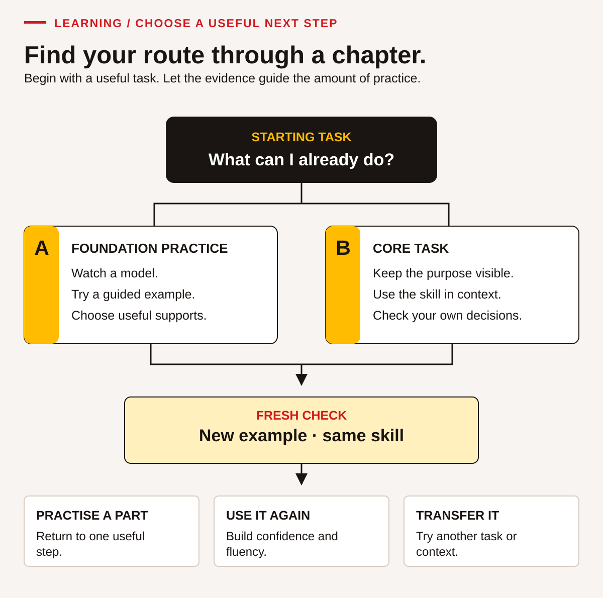
Read the visual description
A starting task branches to foundation practice or the core task. Foundation practice uses a model, guided examples and useful supports. The core task brings the skill into a meaningful purpose. Both paths lead to a fresh check using a new example of the same skill, then a next step: practise a part, use the skill again, or transfer it to another task.
Begin by reading the purpose of the activity. Ask what the person in the situation needs to understand, decide or produce. Look over the supplied notice, table, message or other information before answering. Check whether the dates, units or conditions matter. In a practice case, use the information supplied rather than guessing what a real organization might do.
Study a worked example before trying a similar task. Look for the decisions behind the answer: Why was that number chosen? Why was that sentence clearer? How did the reader know which message was current? You can cover the next step and predict it, then compare your thinking with the example. A different method can be useful when it meets the task accurately.
Try the activity and keep enough of your thinking to explain it. Show the numbers and units for a calculation. Point to a sentence that supports a reading answer. Keep a first draft when you revise a message. For a conversation, note the clarification you asked and what it changed. The evidence can be brief; it needs to show the action that matters.
Review the attempt with the answer guidance, a partner or your instructor as agreed. Correcting an answer is part of learning. Try to explain the reason for a change rather than simply copying the final result. Then choose a next attempt. You might practise with less prompting, a different document or a new situation that uses the same strategy.
The cases are original classroom simulations unless a source is clearly identified. Their names, schedules, budgets and arrangements are practice information. They are not live bookings, official announcements or instructions from a real employer. When you use a skill outside the class, obtain the current information for that situation and check that it applies.
Work with others and keep your own contribution visible
Partners can help you notice something you missed. They can ask a question, explain an approach or read a draft as its intended audience. Collaboration does not require everyone to have the same idea. A useful disagreement can lead to a clearer answer when people explain their reasons and check the information together.
Agree who will do what before you begin. For a partner explanation, one person can explain while the other listens, restates the message and asks a clarification. Then swap. For a shared table, both people should have a chance to use the tool when Digital is a focus skill. Watching a partner complete everything is different from demonstrating your own action.
You can contribute through speaking, signing, an accessible communication tool, writing or another agreed method suited to the task. Your instructor will explain how the intended skill can be observed. An accurate check-back matters more than looking or sounding a particular way. Ask for a preparation moment if you need one.
If a group product is submitted, identify your contribution. “I checked the room capacity and corrected our total” tells more than “we worked well.” Also name one idea from someone else that helped. You can value shared work and still keep a clear record of what each person learned.
Understand feedback and supports
The activities provide evidence from a particular task under particular conditions. Your instructor may use four feedback descriptions. These are local learning notes, not official Skills for Success levels.
| Feedback description | What it means for your next step |
|---|---|
| Not observed | There was not enough opportunity or evidence to judge this action. Arrange a chance to show it. |
| Not yet demonstrated | The attempt did not yet show the agreed outcome. Ask which step to practise and what help could be useful. |
| Demonstrated with support | You met the outcome with a recorded prompt, model or help. Identify what helped and what you want to try next. |
| Demonstrated independently | You met the outcome under the agreed conditions without task-specific prompting. Keep a record of the task and tools you used. |
Agree the task conditions before an attempt. You may be allowed a calculator, a glossary or an accessibility tool. Using an agreed tool does not automatically mean you need task-specific help. For example, independently choosing and checking a calculation with a calculator is different from another person choosing and entering the numbers for you.
Supports should fit the skill. You might explain a reading answer aloud and point to the evidence. A Writing activity needs a text you author, even if you use speech-to-text or another agreed tool. A Digital activity needs an opportunity for you to control the device or application. If access is unavailable, record that and arrange another opportunity; a paper substitute does not show the same digital action.
Ask for specific feedback: “Which part was clear?” “Where did I lose the units?” “What would make this message easier for the reader?” “What should I check next time?” These questions can turn a general comment into a useful practice step. One difficult attempt does not describe everything you know or can learn.
Make a small learning plan
Use the following template with your instructor or on your own. You do not need to fill every space at once. Keep the plan somewhere you can find it and return to it after practice.
| My learning plan | My note |
|---|---|
| A task I want to do more easily | Write your response here. |
| Why this matters to me | Write your response here. |
| Something I already do that may help | Write your response here. |
| The skill or action I will focus on first | Write your response here. |
| A support, tool or condition I want to discuss | Write your response here. |
| An activity or example I will try | Write your response here. |
| What a useful attempt would show | Write your response here. |
| When I will review it | Write your response here. |
| My next step after the review | Write your response here. |
A completed example could be: “I want to find the right version of a session notice. I already check dates, but I sometimes miss a correction. I will compare two versions, mark what changed and explain which instruction applies. I want to begin with both versions side by side. After practice, I will try a different notice and check the version label before answering.”
You can keep a portfolio of selected work. A portfolio does not need to contain every page. Choose examples that show something useful: a first and revised message, a checked calculation, a file you created or a short note about a conversation. Ask how the program stores work and who can see it. Use fictional information when personal details are unnecessary.
Bring learning into another situation
A strategy becomes more useful when you can use it elsewhere. After learning to compare versions of a training notice, you might use the same check with a revised meeting message. After checking units in a supplies table, you might use that habit in a personal purchase comparison. Choose a suitable next context and check the real information before acting.
This is called transfer. It needs its own evidence. Completing a familiar activity does not prove that you can use the strategy in every setting. Record where you tried it next, what was different, what support you used and how it worked. If it did not work yet, identify what needs another explanation or more practice.
Respect your own boundaries in choosing a transfer example. You can use another fictional task instead of sharing a private situation. You also have the right to question unclear or unsuitable information. Asking for clarification, checking a limit or seeking appropriate help can be a strong use of a skill.
Learner · ACCESS IS4S
Reading: find what you need and use it well
Reading helps you turn a document into a useful action. You might check the room for a training session, compare two travel choices, understand a project notice or find out what a form is asking. Reading includes words, symbols, pictures, tables and diagrams. It also includes deciding that a document does not provide enough information to act.
You already bring ways of making sense of information. You may recognize a familiar route, notice an unclear instruction, remember a useful heading or ask someone to explain a new term. This chapter builds a repeatable process around those strengths. You can use the fictional situations throughout. You do not need to share personal records, family information or knowledge that you prefer to keep private.
All organizations, timetables, messages and project arrangements in this chapter are invented teaching cases. They are complete enough for the activities, but they are not live travel advice, workplace procedures or announcements. Read them as practice documents. For real decisions, obtain the actual current document and check its applicability.
Six parts of a useful reading process
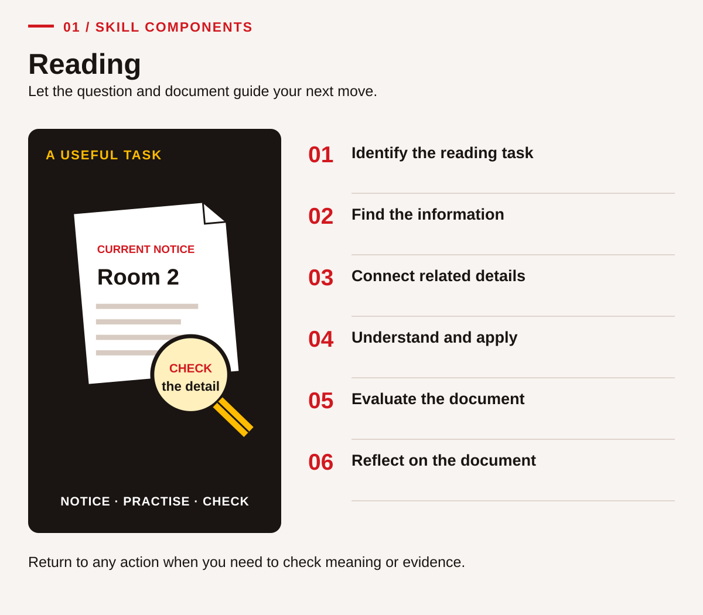
Read the visual description
An original task illustration occupies the left panel; six numbered actions appear on the right. Let the question and document guide your next move. Six connected components: Identify the reading task; Find the information; Connect related details; Understand and apply; Evaluate the document; Reflect on the document. Return to any action when you need to check meaning or evidence.
The Skills for Success Reading components are:
- Identify the task that requires you to read. What are you trying to find out or do?
- Identify the information contained in the document(s). What is here, and how is it organized?
- Make connections between different parts of the document(s). Which details belong together?
- Understand and apply the information. What does it mean for this particular task?
- Evaluate the document(s). Is the information suitable, clear, credible and sufficient?
- Reflect on the document(s). Who is it written for, how does it work, and what should you carry forward?
These are connected actions, not six boxes you must complete in a fixed order. A confusing footnote may send you back to the heading. A missing date may stop you from using an otherwise clear instruction. The aim is an accurate understanding, with a reason you can explain.
Choose supports that let you work with the text: larger print, a ruler under a line, a glossary, text-to-speech, a reading partner or extra time. Keep track of the support used. You can demonstrate comprehension by pointing to evidence, explaining aloud, using an accessible communication method or writing. This chapter does not require polished writing to prove that you understood a reading.
Build a word, read a phrase, use its meaning
Practise privately, with a partner or through an agreed accessible format. No one needs to read aloud to the group. Keep track of whether you recognized the printed word yourself, used audio access or received help with its meaning. These are useful but different observations.
Start with a small observation
Look at return, returned, check, checked, available. Identify a familiar word, use it in a classroom sentence and read a short phrase. If these words are already familiar, move to the notice practice. If a word becomes clear after someone says it, compare the spoken word with its letters and practise it in a useful phrase.
See a useful word part
Compare check → checked. Point to the shared letters. Adding -ed here shows a completed action. In this word the ending sounds like /t/; the spelling still records -ed. Compare return → returned, where the ending sounds like /d/. The same spelling can have different sounds; use the whole word to check its pronunciation. Read “the helper checked the kit” and explain which action is complete.
Break unavailable into un + available: in this notice, un- reverses the meaning. Say the base word, read the whole word, then test its meaning in “The kit is unavailable today.” A word part is a clue; the sentence confirms whether that meaning fits.
Try with support: choose from checked / check / unavailable / available. Complete “Please ___ the code before the loan” and “The kit is ___ because it is already lent.” Explain your choice. Then compare “return pending” with “returned and checked.” Identify which record still needs an action.
Read a short passage in meaningful phrases
The practice desk opens at ten. / A helper checks the kit code / before handing over a folder. / The learner checks the return time. / If the folder is unavailable, / ask about another suitable resource. / Do not assume that a reserved item is free to take. / A learner can ask for a printed reminder / without explaining private reasons. / Keep the agreed return point / with the practice record.
Listen to one sentence read by your instructor if helpful, then explain its meaning. Read it together or reread a short chosen part, using the slashes as optional phrase guides. Answer: What happens before a folder is handed over? What should happen if it is unavailable? Return to the words that support the answers. Fluency here means readable phrasing that supports meaning; faster reading is not the goal.
Fresh exit passage
Remove the model passage while using this new text:
A learning pack is ready for collection at two. The helper must check its code before recording the loan. The pack includes a return slip. If a requested pack is unavailable, ask the helper to check another option. A reserved pack belongs to an agreed booking. Do not remove it without confirmation.
Identify check, unavailable and reserved. Explain the collection condition and what to do if the requested pack is unavailable. Reread after feedback if useful. Keep word help, phrasing help and comprehension help separate in your note.
Check after your attempt: collection is at two, subject to the helper's code check before the loan is recorded; ask the helper to check another option if unavailable; reserved is not unrestricted availability. If a word needs more practice, name it and ask for a useful example. When you can locate the condition with your agreed supports, continue to RD-03 and connect information from a short paragraph and table. You can agree more focused word-reading practice without repeating a whole long case.
Begin with the task, then preview the document
Before reading every word, finish this sentence: “I need this document so that I can….” A precise purpose narrows the search. “Find the check-in room for a first visit” is more useful than “read the schedule.” A person looking for lunch arrangements may use the same document differently.
Preview the title, date, sender, headings and document type. A table usually lets you compare categories. A paragraph may explain a condition. A diagram shows relationships or location. Skimming gives you the general message. Scanning helps you locate a specific item. Close reading checks the exact wording around that item. Strong reading often uses all three.
Case document A: a first visit to the training room
Fictional Northside Learning Room • Welcome note • Version 2, issued for Practice Day 1
Purpose. This note explains the classroom visit for people attending the introductory learning session. It replaces the earlier draft that named Room 3. All activities described here take place in classrooms. There is no equipment operation or worksite tour during this visit.
Arrival. Please arrive at the reception desk between 08:40 and 08:55. Reception is beside the main entrance. A staff member will check your learning ID and direct you to Room 2. If you do not have a learning ID, reception will provide a temporary classroom label. You do not need to bring identity documents for this fictional practice activity.
What to bring. Bring a pen or use one supplied in the room. Printed workbooks and calculators will be available. A phone is optional. The activities can begin on paper, and a shared device will be available for the later digital task. Tell the instructor if you would like enlarged print, a quiet reading space or another available support. You can ask privately.
Changes. The introductory session ends at 11:30. An optional resource-table visit follows until 11:50. The resource table is not part of the required session. A separate afternoon session appears on the building schedule, but it is for a different group. If two documents seem to disagree, ask reception which version applies to your group before changing your plan.
If needed, scroll across this table. Keyboard: focus the table, then use the arrow keys.
| Time | Introductory group activity | Place |
|---|---|---|
| 08:40–08:55 | Check in | Reception |
| 09:00–10:10 | Welcome and learning tasks | Room 2 |
| 10:10–10:20 | Break | Classroom or nearby seating |
| 10:20–11:30 | Practice and review | Room 2 |
| 11:30–11:50 | Optional resource table | Room 1 |
RD-01 • State the reading task
You are helping a fictional learner prepare for their first visit. They ask, “Where do I go first, and do I have to stay after 11:30?” State two precise reading goals. Locate the part of document A that answers each goal. Explain why the afternoon session mentioned in the note is not relevant to this person's plan.
RD-02 • Preview before you search
Identify the document's audience, purpose and version. Name two features that help you find information. Then choose how you would begin each task: skim for an overview, scan for a time, or read a paragraph closely for a condition. Use these tasks: understanding the visit generally; finding the break time; deciding whether a phone is required. Explain one choice.
Worked example 1: a word that changes the answer
Question: Must every introductory learner attend the resource table?
First identify the requested information. “Must every learner” asks about a requirement, not whether the table exists. Scan for “resource table.” Read both the table row and the paragraph headed Changes. The row says “Optional,” and the paragraph says it is not part of the required session. Together they support: No. The required session ends at 11:30; the resource table is optional.
The competing detail is its appearance on the schedule. A scheduled event is not automatically compulsory. Reading the label prevents that mistake. Words such as optional, required, before, after, except, only and unless deserve close attention because they limit a general statement.
RD-03 • Build useful vocabulary
Use document A to explain optional, replaces, temporary and applies in this context. Give the nearby words that helped you. Choose one term and make a new classroom example using it accurately. If you know a useful equivalent in another language, you may add it for your own use; sharing it is optional. Check uncertain meanings with a glossary, partner or instructor rather than guessing silently.
Find the information, including its limits
A good search follows the question. Who usually asks for a person or role. Where asks for a place. When asks for time or a condition. Which asks you to select between options. Why often needs a reason across more than one sentence. Underline the requested information and any limits before searching.
Tables need the same care as sentences. Read the title, column headings, row labels and notes. Keep a finger or pointer on the row while moving across it. Do not take a number from a nearby row because it looks familiar. A symbol's meaning comes from its legend, not its shape alone. An asterisk might identify a footnote; it does not always mean a warning.
Case document B: choosing a classroom journey
Fictional practice journey planner • Day 1 only
The learner starts at Cedar Stop and needs to reach the Northside Learning Room reception by 08:55. This is a fictional route exercise. The timetable does not describe a real service. All listed journeys run on the practice day. The learner can choose either route, and no fare calculation is needed.
Route A is direct. It arrives at Northside Stop, which is beside the learning room's main entrance. Allow five minutes between the listed arrival and reaching reception. That allowance is a task assumption, not a measured travel time for a real person. If a learner needs a different allowance, the plan must be reconsidered using that requirement.
Route B involves a connection at Market Stop. A connection is usable in this exercise only if the first vehicle arrives at least five minutes before the next departure. The second vehicle also arrives at Northside Stop. Add the same five-minute reception allowance. The table shows the individual services; it does not promise that every combination makes a connection.
If needed, scroll across this table. Keyboard: focus the table, then use the arrow keys.
| Service | Leaves Cedar | Arrives Market | Leaves Market | Arrives Northside |
|---|---|---|---|---|
| A1, direct | 08:05 | — | — | 08:35 |
| A2, direct | 08:25 | — | — | 08:55 |
| B1, first leg | 08:10 | 08:25 | — | — |
| B2, second leg | — | — | 08:28 | 08:43 |
| B3, second leg | — | — | 08:32 | 08:47 |
Legend: A dash means the field does not apply to that service. It does not mean a cancelled trip. A service number identifies one row, not a whole journey with a connection.
RD-04 • Scan accurately
Find the departure and arrival for direct service A1. Identify which service leaves Market at 08:32. Explain what the dashes in that row mean. Point to the heading and legend that support your answers. You may say the answer aloud while marking the row instead of copying the whole timetable.
RD-05 • Read the condition
A classmate says, “B1 arrives before B2 leaves, so the connection works.” Find the exact condition that must be checked. Does the statement meet it? Explain using the times and the minimum connection allowance. Then identify a different second-leg service that can be combined with B1.
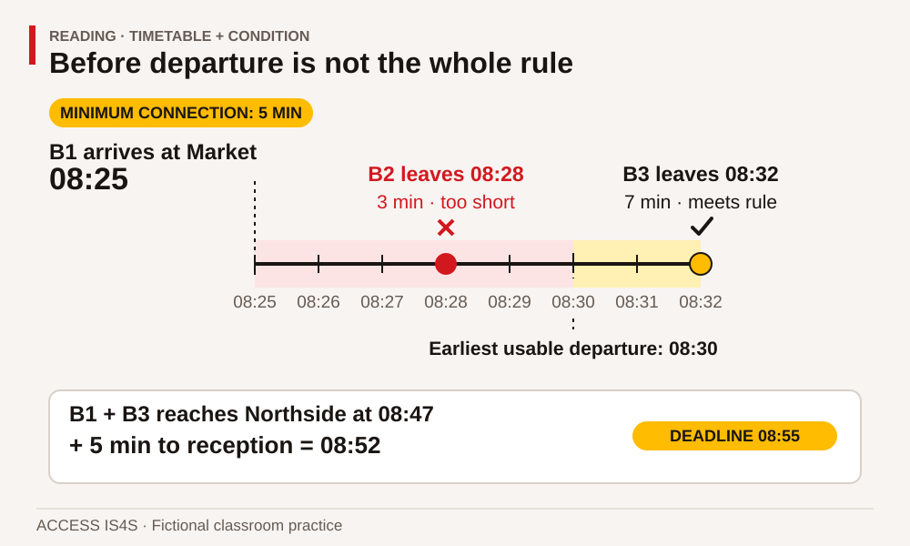
Read the visual description
A proportional timetable shows B1 arriving at Market at 08:25. The required connection allowance is five minutes. B2 leaves at 08:28, giving only three minutes; B3 leaves at 08:32, giving seven. The earliest usable departure is 08:30. B1 plus B3 reaches Northside at 08:47; five minutes to reception gives 08:52, before the 08:55 deadline.
Worked example 2: combine a table and a paragraph
Question: Does direct service A2 meet the reception deadline?
The row gives an arrival at Northside of 08:55. The paragraph requires a further five-minute allowance to reception. Therefore the task's reception time would be 09:00. That is later than the 08:55 deadline. A2 does not meet the requirement in this exercise.
The reading challenge is to connect “arrives Northside” with “reaches reception.” They name different points. The arithmetic is small, but finding the relevant rule is essential. If the table's heading had already been “Arrives reception,” adding the allowance again would be wrong. Check what a number represents before calculating.
RD-06 • Choose with evidence
Choose two journeys from document B that meet the reception deadline. For each, identify the service or services, Northside arrival, reception allowance and planned reception time. Explain a difference between the two choices without claiming that one is best for every learner. Now change the reception allowance to ten minutes: which of your choices still meets the deadline?
Connect details without inventing missing facts
Some information is stated directly. Other information can be inferred by combining details. An inference is a reasoned conclusion, not a free guess. “The project needs both a place and a time” can follow from an invitation that asks people to attend. “The project is behind schedule” does not follow merely because an invitation was revised.
Use four labels while reading: stated, supported inference, contradicted, and not established. A contradicted statement conflicts with the document. An unestablished claim needs information the document does not provide. Keeping those separate helps you notice the exact question that still needs an answer. You do not have to force every document into a complete story.
Case document C: who is responsible for what?
Fictional Willow Reach access project • Public learning brief, version 1
The fictional Town of Willow Reach owns an access route serving a recreation centre and a delivery area. The Town's project team describes what the project must achieve, manages the agreement with the contractor and checks the delivered work against that agreement. The fictional Pathway Paving Company is the contractor. It carries out the work it has been engaged to deliver. The roles of owner and contractor are different even when both are working toward the same project outcome.
The practice funding plan contains $60,000 from the Town, $40,000 from the fictional Regional Access Fund and $20,000 from the fictional Community Route Fund. These names and amounts are invented. Contributing money does not, by itself, make a funder the road owner. The funding amounts also do not tell us a contractor's profit, a worker's pay or the cost of each activity.
This learning brief is about roles and questions. It does not supply a work schedule, a traffic plan, operating instructions, environmental findings or legal permissions. The project team would need current applicable documents for a real project. For this classroom exercise, questions about ownership go to the Town's project contact; questions about the contractor's proposed classroom display go to Pathway's training contact. Neither contact has been given authority here to answer for the other organization.
Notice for learners. A classroom information display will explain where paving material comes from and how the project roles differ. Visitors are asked to identify questions they would want answered before a real project begins. No visitor should treat this practice display as a notice of actual construction.
Town of Willow Reach: owner and project team
│ engages a contractor for described work
▼
Pathway Paving: contractor
Town contribution + two fictional funds: funding plan
Funding contribution alone does not establish ownership.
RD-07 • Follow the role, not the familiar name
Who owns the route? Who carries out the contracted work? Which contact would receive a question about ownership? Which would receive a question about the contractor's classroom display? Cite a sentence for each decision. Explain why the funding paragraph is insufficient to identify a contractor's profit.
RD-08 • Separate evidence from assumption
Label each statement stated, supported inference, contradicted, or not established: “The Town and contractor have different roles”; “More than one organization contributes to the practice funding”; “The contractor owns the road”; “Construction starts next Monday”; “The brief is suitable for deciding the legal permits for a real job.” For a statement that is not established, name the missing document or detail rather than simply saying “wrong.”
RD-09 • Use both forms of the message
Compare the diagram and paragraphs in document C. Identify one fact both forms communicate, one qualification that is clearer in the paragraphs and one question neither form answers. Then choose which form you would use for a quick introduction and which you would consult for a responsibility question. Your choice must refer to the information needed, not only to personal preference.
Evaluate a document before relying on it
A clear-looking document can still be unsuitable. Ask who produced it, when and for what audience. Check whether it names its sources and explains its limits. Consider the difference between a sales claim, an official project instruction, a personal opinion and a classroom example. These can all be useful for different purposes; their authority is not interchangeable.
Check the actual claim, too. “Always” requires much stronger evidence than “in this example.” A photograph may show an item without proving how it performs. A newer date helps identify a version, but newer does not automatically mean accurate or applicable. A document needs both a traceable source and relevant content.
Case document D: two environmental messages
D1 • Fictional promotional card. “Our nearer supply source proves asphalt is always greener than concrete. Save time: there is no need to compare alternatives.” The card supplies no author, study, date, quantities, transport assumptions or definition of “greener.”
D2 • Fictional classroom comparison note. “The example lists one source for an asphalt option at 20 km from the work area and one source for a concrete option at 50 km. The distances are invented. They describe one-way routes, not total travel. Quantities, number of trips, vehicle loads, production impacts, maintenance and design-life information are missing. The note cannot rank the total environmental impact of the two options. A fair comparison would need the same project purpose and comparable service requirements, together with relevant evidence for the impacts being considered.”
RD-10 • Judge what a claim can support
Identify D1's main claim and two features that make it unreliable for a whole-project environmental conclusion. State the limited comparison D2 permits. Name two missing facts that would matter before making a broader comparison. Explain how D2's admission of limits affects its usefulness for this reading task.
Worked example 3: resolve a version conflict
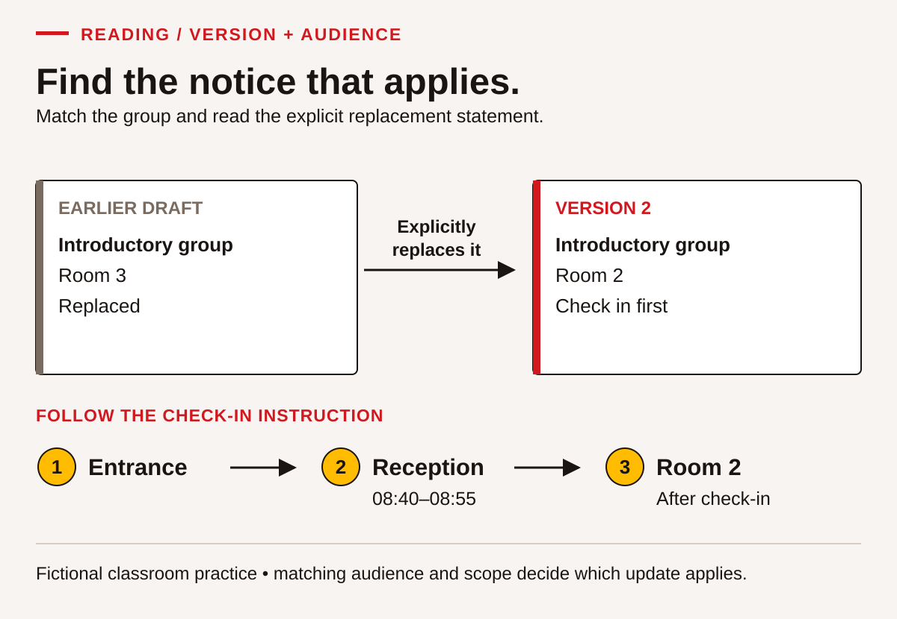
Read the visual description
Two document specimens show an earlier introductory-group draft with Room 3 and a version 2 notice that explicitly replaces it, names Room 2 and requires check-in first. A route below moves from the entrance to reception during 08:40–08:55, then to Room 2 after check-in.
An old classroom notice says, “Introductory group: Room 3.” Document A says “Version 2,” identifies the introductory audience and explicitly replaces the earlier Room 3 draft. It directs learners to Room 2 after reception. For this fictional visit, use the Room 2 instruction and check in first. This conclusion depends on the replacement statement and matching group, not only on a bigger version number.
If the second document were for a different group, its newness would not settle the conflict. If neither document identified which one applied, the next action would be clarification. Reading well includes knowing when a comparison cannot be resolved from the available evidence.
RD-11 • Inspect a source record
Compare these supplied records: Record X: “Equipment guide,” screenshot, no issuer or edition. Record Y: “Classroom equipment-purpose cards,” prepared for this workbook, labelled introductory, no operating instructions. Which could support identifying the intended purpose of this workbook's card activity? Could either justify operating equipment? List three additional details you would seek before relying on an actual technical document. Do not invent those details.
RD-12 • Apply a precise update
Read this fictional update: “Practice Day 1, introductory group only: check-in remains at reception. The 10:20–11:30 practice block moves to Room 4. The 09:00 welcome remains in Room 2. Issued as an update to Welcome Note version 2.” Identify exactly which table entry changes and which entries stay the same. Explain why rewriting the entire day as “Room 4” would be inaccurate.
Reflect on how the document works
Reflection includes looking back at the document, not only judging yourself. Who needs the information? What does the writer emphasize? What evidence is offered, and what is left out? Does the structure help the intended audience? A short notice can be effective because it removes unnecessary detail, yet become misleading if it removes an essential condition.
Your reading process also matters. Notice where you first looked, what slowed you down and what helped you recover. “I am bad at tables” is a broad judgement with no next action. “I skipped the heading, so I compared workers with employers” identifies a habit you can change. Keep the observation connected to an actual example.
Case document E: borrowing a classroom resource
Fictional resource desk guide • Current classroom copy
The resource desk lends practice books and calculators during the learning block. A learner may borrow one calculator and up to two books at a time. Each item has an item code. The code identifies the item, not the borrower. The classroom borrowing sheet uses learning IDs so that personal details do not need to appear in the activity.
To borrow an available item, tell the desk helper its code and your learning ID. The helper records the item and the agreed return point. “Available” means the desk can lend it now. “Reserved” means the item is set aside for another booking. “In use” means it has already been lent. These labels can change, so the desk helper checks the current sheet before agreeing to a loan.
The guide is written for learners who want a resource during the classroom block. It does not describe a public library account or a charge. If an item is unavailable, choose another suitable resource or ask when it may become available. The guide does not promise a return time for an item marked “In use.”
If needed, scroll across this table. Keyboard: focus the table, then use the arrow keys.
| Item code | Item | Status at the time of this exercise |
|---|---|---|
| C04 | Basic calculator | Available |
| C05 | Large-display calculator | Reserved |
| B12 | Measurement practice book | In use |
| B16 | Document-reading practice book | Available |
RD-13 • Read for audience and purpose
Who is document E written for? What practical decision does it help them make? Identify one feature that helps a first-time borrower and one detail deliberately outside its scope. Explain why the sentence about learning IDs belongs in this document even though it does not describe the equipment.
RD-14 • Apply the conditions
A learner wants C04 and B16 immediately. Another wants C05 and needs a specific display feature. Use the guide and status table to explain the next step for each. Do not tell the second learner that an unsuitable alternative must meet their needs. What can the document establish, and what should the desk helper clarify?
RD-15 • Notice what a summary loses
A proposed sign reads, “Borrow any calculator and two books. Give your details to the helper.” Compare it with document E. Identify three ways the sign could mislead a reader or remove a useful protection. Explain the information that a corrected sign should retain. You may annotate the sign and explain aloud; writing a polished replacement is optional.
Transfer the process to a different setting
The same reading habits work across trades, service work, study and everyday planning. The document changes; the need to identify purpose, conditions, evidence and gaps remains. Transfer does not mean assuming that a rule from one setting applies somewhere else. It means bringing the process of checking.
RD-16 • Independent transfer: booking a practice room
Use this complete fictional booking note: “Room East holds up to eight people and is available 13:00–14:00. Room West holds up to twelve and is available 13:30–15:00. Bookings need a ten-minute setup period before the meeting, within the room's available time. A group of ten wants a 45-minute meeting starting at 14:00. Ask the desk to confirm any booking; this note is not a reservation.” Select a suitable room, explain how the size and time conditions connect, and identify the remaining action. Then explain what changes if the meeting must start at 13:30.
RD-17 • Show your reading route
Choose document A, B, C or E. Ask a partner to choose a new detail question using only that document. Before answering, state the information you need, show where you look and explain any condition you checked. Then swap roles. If the answer is missing, identify that clearly. Keep the partner's question and the evidence you used so the instructor can observe your reading, not merely your memory.
RD-18 • Compare and reflect
Compare the promotional card D1 with the resource guide E. Explain their audiences, purposes and use of evidence. Point to language that attempts to influence the reader. Select one reading strategy that helped you in an earlier activity and one situation where it was insufficient on its own. Choose a next practice task from this chapter, naming the detail you will check more deliberately. You can provide your reflection orally with marked documents.
Keep evidence of what you can do
| Reading component | Main practice evidence |
|---|---|
| Identify the task that requires you to read | RD-01, RD-02, RD-17: clear purpose and requested information. |
| Identify information in documents | RD-03–RD-05: vocabulary, headings, rows and conditions. |
| Connect parts of documents | RD-06–RD-09, RD-12: paragraphs, tables, diagrams and updates used together. |
| Understand and apply information | RD-07, RD-14, RD-16: a justified decision for the specified case. |
| Evaluate documents | RD-10–RD-12, RD-15: source, scope, version and adequacy checked. |
| Reflect on documents | RD-13, RD-18: audience, purpose, language and evidence considered. |
Use the local feedback descriptions Not observed, Not yet demonstrated, Demonstrated with support and Demonstrated independently. Record transfer separately when you use the process in a new situation. These descriptions are not official proficiency levels. Keep a marked document, a short explanation and the support used. Together they give a more useful picture than speed alone.
Reading · fresh document checks
Use the form selected by your instructor. Read the supplied documents and show which words, rows or conditions support your answers. You may mark the document and explain through an agreed communication mode. Writing polish is not the focus. Ask for the agreed access tools before starting. All information is fictional; do not visit or contact a real service.
Form A · Pick up a practice kit
A1 · Earlier notice, issued Practice Monday
The introductory learning group can collect its reserved practice kits at Counter East on Practice Friday, 13:00–13:30. Bring the kit code and your learning ID. This is a classroom collection arrangement.
A2 · Correction, issued Practice Tuesday
For the same introductory learning group and Practice Friday collection: Counter West replaces Counter East. The collection window remains 13:00–13:30. Bring the kit code and learning ID as previously stated. A helper must check the current counter record before handing over a kit. This correction replaces A1's location only. A separate evening group uses Counter East at 17:00; that arrangement does not apply to this group. Ask the course coordinator when information cannot be confirmed.
A3 · Counter record for the exercise
If needed, scroll across this table. Keyboard: focus the table, then use the arrow keys.
| Kit code | Resource | Status | Collection condition |
|---|---|---|---|
| P14 | Large-print process cards | Reserved for the introductory group | Helper checks code and learning ID. |
| P18 | Standard process cards | In use | No return time has been supplied. |
| N22 | Number practice kit | Available | Helper checks the current record and agrees a loan. |
“Reserved” means set aside for the named group. “Available” means a loan can be discussed now, not that the item has already been booked. “In use” means currently lent. A request for a particular format does not require a learner to explain private reasons. The counter record says nothing about transport or a charge.
CK-RD-A01 · Find the current instruction
Where and when should the introductory learner collect P14? What must they bring, and what must the helper do? Mark the source for the location, unchanged time and collection condition.
CK-RD-A02 · Connect the records
A peer says, “I will go to Counter East at 17:00 because the correction mentions it.” Explain the problem using the audience and replacement wording. Then explain whether P14 and P18 can both be promised for collection at 13:00.
CK-RD-A03 · Check a summary
A proposed summary says, “All kits are ready. Bring identity documents to Counter West any time Friday. Transport is included.” Identify four unsupported or contradicted claims. For one claim, distinguish “the documents say something different” from “the documents do not say.”
CK-RD-A04 · Explain your next step
You receive an undated cropped image saying only “Counter East.” Explain what it cannot establish, where you would seek confirmation and one part of your reading process that helped you. Do not invent the coordinator's answer.
Form B · Return a practice resource
B1 · Earlier notice, issued Practice Wednesday
The afternoon learning group returns borrowed folders on Practice Monday, 11:15–11:45, at the Materials Desk. Bring the folder code and your learning ID. Do not write a personal phone number on a folder.
B2 · Correction, issued Practice Thursday
For the same afternoon learning group and Practice Monday returns: use the Library Desk instead of the Materials Desk. The 11:15–11:45 window and code/learning-ID requirement stay the same. The desk helper checks the folder against the loan record and records its return; placing it on a desk alone does not confirm a return. This correction replaces B1's location only. The evening group's return to the Materials Desk at 18:00 is a separate arrangement. Ask the course coordinator about information that cannot be confirmed.
B3 · Loan record for the exercise
If needed, scroll across this table. Keyboard: focus the table, then use the arrow keys.
| Folder code | Record status | Required next step |
|---|---|---|
| F32 | Loaned to afternoon group; return due Practice Monday | Present to helper for return check. |
| F35 | Returned and checked | No second return is required. |
| F39 | Return reported, check pending | Helper must confirm against the loan record. |
“Check pending” means a necessary check has not yet been confirmed. It is different from a completed return. No penalty, charge or delivery service is specified. Learners can ask privately for an accessible way to identify the folder code.
CK-RD-B01 · Find the current instruction
Where and when should the afternoon learner return F32? What must they bring, and what must the helper do? Mark the source for the location, unchanged time and return condition.
CK-RD-B02 · Connect the records
A peer says, “I will go to the Materials Desk at 18:00 because the correction mentions it.” Explain the problem using the audience and replacement wording. Then explain whether F35 and F39 can both be recorded as checked returns.
CK-RD-B03 · Check a summary
A proposed summary says, “Every folder is checked in. Leave F32 at the Library Desk any time Monday. Bring your personal phone number; late returns cost $5.” Identify four unsupported or contradicted claims. For one claim, distinguish “the documents say something different” from “the documents do not say.”
CK-RD-B04 · Explain your next step
You receive an undated cropped image saying only “Materials Desk.” Explain what it cannot establish, where you would seek confirmation and one part of your reading process that helped you. Do not invent the coordinator's answer.
Learner · ACCESS IS4S
Writing: make a message another person can use
Writing helps a reader understand, decide, remember or act. A useful piece of writing might be a two-line request, a completed form, a clear label, a table or a longer explanation. Its success depends on the task. A short note can be effective when it includes exactly what the reader needs. A longer document can fail when its important point is difficult to find.
You can build writing through practice, feedback and revision. You may already organize information for work, study, appointments or activities you choose to support. This chapter gives those actions a visible process. You can use the supplied fictional cases rather than personal experiences. No activity requires a real message to be sent, a real account to be opened or private information to be shared.
All people, organizations, schedules, quantities and funding arrangements below are invented for learning. The documents resemble useful workplace and classroom formats, but they are original simulations. They do not establish a legal reporting requirement or a workplace procedure. The focus is writing that is accurate for the information you have.
Six parts of writing with a purpose

Read the visual description
An original task illustration occupies the left panel; six numbered actions appear on the right. Keep the reader and purpose at the centre. Six connected components: Identify purpose and reader; Plan the writing task; Use words to convey meaning; Choose language and style; Choose a useful format; Review and revise. Revisit a plan, wording or format when feedback reveals a better choice.
The Skills for Success Writing components are:
- Identify the task that requires you to write. Name the purpose and intended reader.
- Plan the writing task. Gather information, decide what matters and organize it.
- Use written words and phrases so you can achieve the purpose of the writing task. Make the meaning clear enough to use.
- Choose the appropriate language and style for the writing task. Match the reader, relationship and context.
- Choose the appropriate format for the writing task. Use a message, form, list, table or another useful structure.
- Review and revise your writing. Check facts, meaning, tone and presentation, then improve them.
Writing is not always a straight line through these components. You may discover a missing fact while drafting. A reader's question may show that your chosen format hides the answer. Going back to the plan is part of writing, not proof that you failed.
You may handwrite, type, use speech-to-text or work with a scribe. To show your Writing skill, you need to control the words, review the resulting text and decide on revisions. A discussion that produces no learner-authored text does not show this chapter's writing outcome. Record supports so the evidence describes what you actually did.
Make the actor, action and time clear
You can think through a sentence aloud, sign it, type it or use another authoring method. Keep control of its words and review the result. Begin with a clear sentence, then use it in a useful whole message.
Start with one sentence
Write or dictate a sentence for this task: “Tell a helper that four blank sheets are needed before two o'clock.” Ask a reader to identify the item, quantity and time. If all are clear, move to the writing case. Otherwise, choose one feature below to practise first.
Name who does what
Read this example: The helper / checks / the folder code / before recording the loan. Mark actor, action, object and condition. Compare “They do it first.” In that version, the reader must guess both actor and action.
Guided task: expand “They need them tomorrow” using these facts: the classroom coordinator needs five blank record sheets by 09:30 Practice Friday. Choose a complete sentence. Check which words prevent guessing. A valid sentence is “The classroom coordinator needs five blank record sheets by 09:30 Practice Friday.” Other word orders work.
Put a boundary between complete ideas
Consider: “The file is saved the location still needs checking.” Say each idea separately: The file is saved. The location still needs checking. Each has an actor/topic and an action/state. A full stop makes the boundary visible. Another valid choice is “The file is saved, but its location still needs checking.” Notice what but connects: one completed action and one pending check.
Guided repairs:
- “The helper counted eight sheets the note lists ten.”
- “I wrote the heading it still needs a date.”
- “Please check the code before the loan is recorded.”
Check: the first two need boundaries or suitable connecting words; the third is already usable and need not be changed. A long sentence is not automatically wrong. Keep wording that carries the meaning clearly.
Put the reader's action where it can be found
Given “Please confirm. We may need a second box. The count is not complete,” identify what must be confirmed and what remains unknown. The agreed confirmation time is 11:00. Here is a clearer request: Please confirm the completed count by 11:00 before deciding whether another box is needed. Compare the two versions. A clearer sentence must not turn an uncertain need into a confirmed order.
Fresh exit task
Use only these new facts: The practice instructor needs three large-print labels by 14:00 Practice Monday. Two labels are prepared. The remaining label has not been checked. Ask the materials helper to confirm when it will be ready. Write two or three sentences for the helper. Keep prepared, checked and ready distinct; do not claim the whole set is ready. Underline the requested action and mark sentence endings.
Ask a reader to say how many labels are needed and what action they would take. Revise if their reading differs, or explain why the text works. A possible complete response is: “The practice instructor needs three large-print labels by 14:00 Practice Monday. Two are prepared; the remaining label has not been checked. Please confirm when it will be ready.” Your wording can differ while preserving these facts. Record any wording supplied by another person.
Continue to WR-05 for several ambiguities, or WR-07 for a factual record. For the fresh handover checks, remove these models and use different supplied information. Ask for further sentence, spelling or paragraph practice when that would help you communicate your meaning.
Start with the reader and the needed action
Before drafting, answer four questions: Who will read this? What do they need to know? What should they do next? What information do I have the authority and evidence to state? These questions prevent two common problems: writing everything you know, and leaving out the one detail that makes action possible.
A useful request often begins with the request, followed by the context needed to answer it. A factual record often begins with what happened and when. A public notice often begins with the event and essential arrangements. “Formal” does not have to mean complicated. Respectful, direct wording usually helps readers across roles.
Case document A: a resource request with a deadline
Fictional classroom planning record • Introductory learning session
The Northside Learning Room is preparing a classroom session for twelve learners. The session begins at 09:00 on Practice Thursday. The learning tasks include reading a short project brief, checking a small number table and recording a result. Paper workbooks are already available for every learner. Learners may work in pairs for the calculator activity, so the plan calls for six calculators at the start of the session.
The resource cupboard currently contains four working practice calculators. The desk helper can check whether two more can be lent from another classroom. The helper needs the item, quantity, required time and return plan. They cannot promise a loan until the other classroom's booking has been checked. The intended recipient of your message is the resource desk helper, not the learners attending the session.
The session ends at 11:30. The instructor has offered to return the borrowed calculators to the resource desk by 11:45. The helper asks to receive the request by 15:00 on Practice Wednesday so they can check availability. If the extra calculators cannot be supplied, the instructor will adapt the activity. Your role is to request the items and ask for confirmation, not to claim they are already booked.
The planning record also mentions that one staff member prefers tea and that the room's old storage labels were blue. Neither fact affects the calculator request. The names and needs of individual learners are not required. Use the group size only if it helps explain the quantity. This is a practice message; do not send it to a real service.
WR-01 • Define the writing task
Write a planning note that names the reader, purpose, requested action and information you must avoid presenting as confirmed. Give the note a useful title. Include one sentence explaining why the learners' personal details are unnecessary for this task.
WR-02 • Select the information
Make a two-column planning table: Include and Leave out. Sort at least eight details from case A. For two choices, explain how the detail helps or distracts from the reader's decision. Check that your Include column contains the exact extra quantity, required time, return plan and request deadline.
WR-03 • Organize before drafting
Plan a four-part request: subject line, request, supporting context and confirmation question. Write short notes under each part. Arrange the information so the helper can answer without searching the whole paragraph. If a fact is missing, mark the question you would ask rather than inventing an answer.
Worked example 1: turn the plan into a useful request

Read the visual description
An annotated request asks the resource helper for two calculators by 09:00 on Practice Thursday. Four available plus two requested would make six for pairs. The loan is pending, borrowed items are to return by 11:45, and the request is due by 15:00 on Practice Wednesday. The callouts identify reader, needed facts and requested confirmation.
Subject: Request for two calculators for Practice Thursday
“Hello resource desk team. Could we borrow two calculators for the Northside Learning Room session starting at 09:00 on Practice Thursday? We have four calculators and need six for paired activities. The instructor can return the borrowed items by 11:45. Please confirm whether two are available. This request is being prepared before the 15:00 Practice Wednesday deadline. Thank you.”
The message states the extra quantity rather than the total quantity. It includes when the items are needed and when they will return. “Could we borrow” and “please confirm” show that this is a request, not an established booking. The subject lets the recipient understand the topic before opening the message.
The model is one valid version, not wording to memorize. A shorter message could work if it retained the decision-making details. A more familiar greeting could also be appropriate. The test is whether the intended reader can understand and respond accurately.
WR-04 • Write your request
Using your plan, write a complete practice message of about 70–110 words. Include a subject and an explicit question the helper can answer. Check the quantity against case A. Then underline the words that show availability is not yet confirmed. Keep your own wording rather than copying the worked example sentence by sentence.
Choose words that carry a clear meaning
Readers should not have to guess who “they” are, what “it” refers to or whether “later” means today or next week. Specific nouns and times can solve these problems. “Return the two borrowed calculators by 11:45” is clearer than “Bring them back later.” Repeating a key noun can be useful when several items or people are involved.
Sentence boundaries also carry meaning. Use one sentence for an action and another for its condition when that makes the instruction easier to follow. Put closely related information together. A comma or full stop is not merely a marking rule; it helps the reader separate ideas. Check names, quantities and units with particular care because an otherwise smooth sentence can still communicate the wrong action.
WR-05 • Repair ambiguity
Revise this practice message using case A: “They need them Thursday. Bring it before the class and give them back after. We need six more, I think. It should be fine.” Make the recipient, item, extra quantity, timing and unconfirmed status clear. Then explain two changes you made and the misunderstanding each prevents.
WR-06 • Change the reader
Now write a short classroom notice for the twelve learners. They need to know that the activity can begin with supplied paper workbooks and that they do not need to bring a personal calculator. The borrowing request is still pending. Write 40–70 words that explain what learners should bring or do without promising that six calculators have been secured. Identify one detail from your request that this audience does not need.
Plan a factual record before interpreting it
A record is useful when another person can understand what was observed, what was reported by someone else and what remains unknown. Separate those categories. “The box contained 22 workbooks when counted” is an observation in the case below. “The supplier deliberately removed two” is an accusation that the case does not support.
Use who, what, when and where as prompts, then add the action taken and the unresolved question. Not every form needs all possible details. A classroom materials record should not include personal learner information simply because there is room on the page. A blank field may mean information is missing; use “not provided in the case” where appropriate rather than making up a name or code.
Case document B: the workbook delivery
Fictional materials-desk case • Practice Tuesday
At 09:10, a classroom helper receives a sealed box at the Northside resource desk. The delivery note lists 24 copies of the introductory workbook. The outside label reads “Introductory workbooks, box 1 of 1.” The case gives no order number or supplier contact name. The helper opens the box on the desk and counts 22 workbooks. A second classroom helper independently counts the same 22 copies at 09:15.
The helpers keep the delivery note and put the 22 workbooks together on the resource shelf. At 09:20, they tell the instructor that the note and count differ. The instructor asks for a short written record so the resource coordinator can check the order. The coordinator has not yet contacted the supplier. No explanation for the difference has been confirmed.
The class needs the workbooks for a later session, and existing spare copies may be available. The instructor will decide how to prepare that session after checking the cupboard. The helpers should not promise replacement delivery, describe a refund, change the supplier's paperwork or claim that anyone caused the discrepancy. Their immediate writing task is to preserve a clear account and request the appropriate check.
One draft note on the desk says, “The supplier messed up again and left us short. Someone should fix this right away.” That draft contains an unsupported claim about a repeated problem, gives no quantities and does not identify who should take the next step. You have enough information to produce a more useful record.
WR-07 • Complete the form
Create and complete this practice form using case B: Practice day; location; item; receipt time; quantity on delivery note; quantity counted; count-check time; action already taken; information still missing; requested follow-up. Use short entries where they are sufficient. Do not invent an order number or contact name. Keep the difference between the receipt time and recount time visible.
WR-08 • Replace judgement with evidence
Rewrite the draft note from case B as three or four factual sentences. Include the quantities, the independent recount, the action already taken and the next check. Mark one phrase you removed because it was unsupported. Explain how the revision lets the resource coordinator investigate without accepting an accusation as fact.
Worked example 2: order the record for the reader

Read the visual description
A factual record compares a delivery note of twenty-four copies with an independent count of twenty-two, a difference of two with no confirmed cause. The timeline records receipt at 09:10, recount at 09:15 and informing the instructor at 09:20.
An unordered note reads: “Instructor told. Twenty-two books. It said twenty-four. Counted again at 09:15. Box arrived 09:10.” A useful revision is:
“At 09:10 on Practice Tuesday, a box of introductory workbooks arrived at the Northside resource desk. The delivery note listed 24 copies. Two helpers counted 22 copies, with the independent recount completed at 09:15. The instructor was informed at 09:20. The resource coordinator is asked to check the order and the discrepancy. The cause has not been confirmed.”
The revision organizes events in time order, names the item and distinguishes the listed quantity from the observed count. It does not hide the uncertainty. It also does not add a conclusion about who is responsible. The reader can now see both the evidence and the action requested.
WR-09 • Write a short record for a handover
Write a 100–140-word handover record for the resource coordinator using case B. Include a heading, a factual account and a separate Follow-up needed line. State what happened to the delivered workbooks and delivery note. Review your wording for a claim that goes beyond the evidence. A partner should be able to identify the discrepancy and the next step from your text alone.
Choose a format that supports the task
Different formats do different work. A numbered list is useful when order matters. Bullets suit a set of items without a required sequence. A table helps readers compare the same categories across several items. A paragraph explains a relationship or reason. A form helps collect a consistent set of fields.
You can combine formats, but every extra element should serve the reader. A large title cannot repair an inaccurate table. A colour highlight should not be the only way a reader knows which item matters. Clear labels and words should preserve the meaning in black-and-white print or an accessible text version.
WR-10 • Write an ordinary classroom procedure
Use these complete fictional borrowing rules: a learner chooses an available practice item; tells the desk helper the item code and learning ID; the helper checks the current sheet and agrees a return point; the learner checks the recorded item and return point; the item is returned to the helper at that point. If the item is unavailable, the learner asks about a suitable alternative. Write five numbered steps and a separate sentence for the unavailable-item condition. This is a classroom-resource procedure, not equipment-operation guidance.
WR-11 • Turn notes into a readable table
Convert these supplied notes into a table with a clear title and headings: “C04 basic calculator available; C05 large-display calculator reserved; B12 measurement practice book in use; B16 document-reading practice book available. Statuses are for this classroom exercise only. The helper checks the current sheet before agreeing to a loan.” Include the status limitation and checking instruction below the table. Explain why item codes and status labels need separate columns.
Match style to the reader without losing respect
Style includes tone, vocabulary, sentence length and how directly you state the action. A familiar team message can be brief without becoming vague. A message to someone you have not met can be courteous without using elaborate phrases. Avoid labelling readers as careless or assuming why they have not responded. Describe the information needed and make the next step clear.
Plain language does not mean removing every technical term. Some terms are necessary. Explain them when the audience may not know them, and use the same term consistently. A notice for visitors may say “the organization that owns the route” before using “owner.” An internal record may use the established role title without repeating the explanation.
Case document C: a classroom information display
Fictional Willow Reach project-learning display • Planning brief
The learning group is preparing a classroom display called “From materials to a finished road.” It introduces the pit-or-quarry, plant, haul, place and compact stages and explains that equipment items have different purposes. The display contains no operating instructions and is not a public construction notice. It uses the fictional Willow Reach access project to help visitors ask useful questions about responsibilities and information sources.
In the example, the Town of Willow Reach owns the route and manages the project agreement. Pathway Paving is the contractor engaged to deliver described work. Practice funding is $60,000 from the Town, $40,000 from the fictional Regional Access Fund and $20,000 from the fictional Community Route Fund. The labels and amounts must remain identified as fictional. The brief does not establish any real grant eligibility, permit, schedule or environmental result.
The classroom display visit is on Practice Friday, 13:00–13:40, in Room 2 at the Northside Learning Room. This is an invented session, not an actual invitation. Visitors first check in at reception. They do not need to bring tools or personal devices. Printed explanations are provided. The planning team can prepare enlarged copies if requested by 15:00 on Practice Thursday. Questions and requests are directed to the classroom coordinator in this simulation. Do not invent a phone number or email address.
The group needs two documents: a visitor notice that gives the essential arrangements and an internal planning note identifying who will prepare the materials. The visitor does not need individual learner names or private support information. The internal note should record agreed tasks, not make assumptions about what someone can do based on their background.
WR-12 • Write a visitor notice
Write a notice of 90–130 words using case C. Include a title, purpose, practice day, time, room, first arrival point, what visitors need to bring and how to request enlarged copies. Keep the fictional status visible. Use a structure that helps a reader find the arrangements quickly. Do not add a contact address that was not supplied.
WR-13 • Make the tone useful
Revise this internal draft: “You never follow the plan. Just put the stuff in the room and make it nice. Everyone knows what to do. Don't bother the coordinator.” Use only case C to replace it with a respectful request that identifies a useful task and asks for confirmation where responsibility is not assigned. Explain which details you cannot honestly supply yet. Then write a different opening suitable for the visitor notice rather than the internal team.
Review meaning before polishing sentences
Revision changes the substance: the facts, organization, missing information or suitability for the reader. Proofreading checks the final surface: spelling, punctuation, formatting and small copying errors. Both matter, but polishing an unsupported claim does not make it true. Start with purpose and facts, then work toward presentation.
Read as if you were receiving the message for the first time. Can you locate the action? Are names, dates, times, quantities and units correct? Does “confirmed” actually have evidence? Is the scope clear? Finally, read the text aloud or listen through a tool to notice awkward phrasing. You remain responsible for checking the output of a spelling or writing tool against the source.
Worked example 3: a small edit can change the promise
Draft: “Join our real roadwork tour Friday at 1. Bring your tools. All special copies are ready.”
Case C does not support a real worksite tour, a tools requirement or the claim that requested copies are ready. A substantive revision is: “Visit our fictional project-learning display on Practice Friday, 13:00–13:40, in Room 2. Check in at reception first. Tools are not needed. Ask the classroom coordinator for enlarged copies by 15:00 on Practice Thursday.”
Only after those corrections does proofreading become useful. Check the hyphenation or punctuation if needed, but do not spend the whole review making the wrong event description look polished. The revised wording makes the action possible and keeps promises within the brief.
WR-14 • Check against the source
Review this new draft: “The Willow Reach display runs 13:00–14:00 in Room 3 on Practice Friday. Go straight to the room. Bring a calculator. Enlarged copies can be requested any time. The $120,000 funding comes entirely from the contractor.” Identify every factual conflict with case C, then write a corrected version. Label one correction about time, one about access/instructions and one about project roles or money.
WR-15 • Use reader feedback while keeping authorship
Give your WR-12 notice to a partner. Ask them to underline the time, first arrival point and copy-request deadline, then identify one phrase that could be clearer. Listen to their interpretation. Complete at least two purposeful review actions: make one justified change that improves clarity, and check one important fact against case C. If that fact is already correct, retain it and record the verification rather than inventing an error. Keep the first version, revised version and a short change note. You can explain why you declined a suggestion if it would remove accurate information.
Write independently in a new context
Case document D: reserving a practice room
Fictional group-planning brief
Ten learners need a room for a 45-minute peer-learning meeting starting at 14:00 on Practice Monday. They need ten minutes in the room beforehand to arrange paper resources. Room East holds eight people and is available 13:00–14:00. Room West holds twelve and is available 13:30–15:00. These are classroom planning values, not a real booking system.
The desk coordinator handles requests. A room is not reserved until the coordinator confirms it. The message should identify the group size, desired meeting time, setup period, selected room and requested confirmation. It should not include learners' names or reasons for individual support requests. The coordinator will clarify access arrangements with the group if needed.
The group can return the room to its ordinary classroom layout by the end of its requested booking. If a room cannot meet all conditions, the writer should identify the conflict and request an alternative rather than change a requirement silently. Keep copies of the request and any reply so later changes can be traced.
WR-16 • Independent request and record
Write a complete room request using case D. State the whole period you need, including setup, and ask for confirmation. Then make a one-row planning record with request status, room, date label, group size and requested time. The status must match a request that has not yet received a reply. Check that your message and table agree.
WR-17 • Revise when the requirement changes
After drafting WR-16, read this fictional change: “The group now needs to start at 13:30. All other needs stay the same. No new room availability has been supplied.” Write a follow-up that refers to the previous request, explains the changed need and identifies why the original plan no longer meets all conditions. Ask a precise question instead of claiming an alternative is available. Update the planning record without erasing the history of the first request.
WR-18 • Show what changed in your writing
Choose two pieces you wrote for different audiences or purposes. Add a brief writer's note to each explaining the purpose, chosen format and one important wording decision. Select a before-and-after passage and explain how the revision improved accuracy or usefulness. Finish with a specific next practice goal, such as making confirmation questions clearer or checking times against the source. Use actual text as evidence rather than judging yourself as a “good” or “bad” writer.
A practical check before sharing
Use this final sequence on your own draft: purpose → facts → reader → format → wording → proofread. For a practice message, sharing means giving it to your instructor or partner, not sending it to the fictional organization. For a real message later, check the actual recipient and your authority to share the information.
| Writing component | Main evidence in this chapter |
|---|---|
| Identify the writing task | WR-01, WR-06, WR-12: purpose and audience guide the text. |
| Plan the writing task | WR-02, WR-03, WR-07: selected facts and a useful organization. |
| Use written words and phrases to achieve the purpose | WR-04, WR-05, WR-08, WR-09: usable requests and factual records. |
| Choose appropriate language and style | WR-06, WR-12, WR-13: tone and detail fit the reader. |
| Choose appropriate format | WR-07, WR-10, WR-11, WR-16: forms, steps, tables and messages support the task. |
| Review and revise | WR-14, WR-15, WR-17, WR-18: source checks, feedback and traceable changes. |
Local feedback can be Not observed, Not yet demonstrated, Demonstrated with support or Demonstrated independently. Record transfer to a new situation separately. These are learning descriptions, not official proficiency levels. Preserve your draft and revision so the progress is visible, including the support that helped you make it.
Writing · fresh factual handovers
Use the selected form. Produce text that you control, using handwriting, typing, speech-to-text or a scribe under your direction. The reader needs a useful record and a clear next action. No message will be sent. All roles, quantities and events are fictional. Keep the first draft and review notes; a correct first draft does not need an invented error.
Form A · Display posters
Source brief
At 08:45 on Practice Tuesday, a helper received a flat package at the Riverside learning-room desk. Its delivery note listed 12 introductory display posters. The first count found 9 posters. A second helper independently counted 9 at 08:50. The label says Poster package 1 of 1. No order number or supplier contact is supplied.
At 08:55, the helper informed the instructor. The nine posters and delivery note are together in the labelled Display materials tray. The instructor asks for a factual handover to the resource coordinator, who will check the order and tell the instructor the next step before 12:00 Practice Tuesday. The coordinator has not contacted the supplier. No cause, replacement, refund or delivery promise is confirmed.
The posters are for a later classroom display. The instructor will decide whether existing display materials can be used. The helper does not decide that arrangement. A personal phone number written on the outer packaging is not relevant to the handover and must not be copied. The desk's blue pen and a visitor's comment that “deliveries are always wrong” are not evidence about this order.
CK-WR-A01 · Plan for the reader
Make a brief plan naming the reader, purpose, necessary facts and requested next action. Identify two details you will leave out and why. Distinguish completed actions from the decision still pending.
CK-WR-A02 · Write the handover
Write about 80–130 words, with a useful heading and a separate Follow-up needed line. Include the quantities, independent check, sequence, location of the materials and record, unresolved cause and coordinator's next step/deadline. Use your own wording. Do not add a contact address or promise a solution.
CK-WR-A03 · Review meaning
Give the draft to a reader. Ask them to identify the discrepancy, what is already done, where the materials are and who must do what next. Check their interpretation against the brief. Revise a misleading or unclear detail, or record why the tested wording already works. Also check one sentence boundary and one pronoun/reference. Keep the reader's actual response and your decision.
Form B · Orientation cards
Source brief
At 14:05 on Practice Thursday, a helper received a box at the Harbour learning-room desk. The packing record listed 30 orientation cards, but the first count found 26. Another helper independently counted 26 at 14:10. The label says Orientation cards, box 1 of 1. No order number or supplier contact is supplied.
At 14:15, the instructor was informed. The 26 cards and packing record are together in the labelled Orientation materials tray. The materials coordinator needs a factual handover so they can check the order and tell the instructor the next step before 16:00 Practice Thursday. The coordinator has not contacted the supplier. No explanation, replacement, refund or delivery promise is confirmed.
The cards are for a later classroom session. The instructor will decide whether to adapt that session after checking other resources. The helper cannot announce that decision. A personal address written on the box is unnecessary for the handover and must not be copied. The colour of the box and a colleague's remark that “someone must have taken them” do not establish the cause of the discrepancy.
CK-WR-B01 · Plan for the reader
Make a brief plan naming the reader, purpose, necessary facts and requested next action. Identify two details you will leave out and why. Distinguish completed actions from the decision still pending.
CK-WR-B02 · Write the handover
Write about 80–130 words, with a useful heading and a separate Follow-up needed line. Include the quantities, independent check, sequence, location of the materials and record, unresolved cause and coordinator's next step/deadline. Use your own wording. Do not add a contact address or promise a solution.
CK-WR-B03 · Review meaning
Give the draft to a reader. Ask them to identify the discrepancy, what is already done, where the materials are and who must do what next. Check their interpretation against the brief. Revise a misleading or unclear detail, or record why the tested wording already works. Also check one sentence boundary and one pronoun/reference. Keep the reader's actual response and your decision.
Learner · ACCESS IS4S
Numeracy • Find the quantities, choose a method, explain the result
Start with a useful question
Numeracy helps you answer questions that matter: Will the supplies cover everyone? Which travel plan meets the arrival time? How much space is available? What does a table actually tell us? Getting a number is part of the work. Knowing what that number means, checking it and explaining its consequences complete the task.
You may already estimate quantities, compare prices, organize time, follow a score, count materials or share costs. You can build from those strategies. You do not need to describe your finances, household, cultural responsibilities or employment history to practise here. Every project, price, timetable and dataset in this chapter is invented. Use the supplied cases or agree on another non-sensitive classroom example with your instructor.
Try a task before checking the answer guidance. Keep a record of your method, including a sketch or spoken explanation recorded by the instructor if that works better for you. A calculator, counters, larger print or a spreadsheet can support the reasoning. Record the support you used. A correct calculator display still needs the right question, inputs and interpretation.
Six connected parts of numeracy
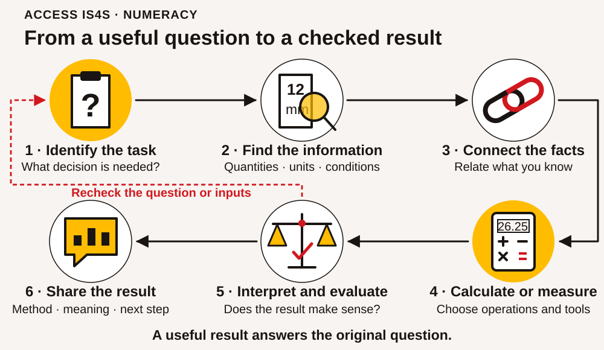
Read the visual description
An original task illustration occupies the left panel; six numbered actions appear on the right. From a useful question to a checked result Six connected components: Identify the task; Find the information; Connect the facts; Calculate or measure; Interpret and evaluate; Share the result. Recheck the question or inputs. A useful result answers the original question.
Use these six connected components as a working routine. Move between them when a new question or a check changes the task.
| Component | What it looks like in your work |
|---|---|
| 1. Identify the task that requires you to use numeracy | State the decision or question and the form of answer needed. |
| 2. Identify the mathematical information | Find quantities, units, dates, conditions and missing information. |
| 3. Make connections between related pieces of mathematical information | Link the available information to the unknown, including information in another table or note. |
| 4. Apply mathematical operations and tools you will need to answer the question | Choose and carry out a suitable calculation, measurement, comparison or display. |
| 5. Interpret and evaluate the information | Check whether the result makes sense and what the evidence can support. |
| 6. Share the mathematical information, results and implications | Explain the result, method, assumptions and consequences clearly enough for another person to use. |
You can move back and forth through this routine. A result that seems too large may send you back to the units. An unclear question may require clarification before calculation. That is useful checking, not failure. Separate “I do not yet have this information” from “I have the information but need help choosing a method.” Each calls for a different next step.
Before calculating, make a rough prediction. For example, three packs costing about nine dollars each will cost about twenty-seven dollars. An exact result near that estimate is plausible; a result of two hundred and seventy dollars needs investigation. An estimate does not replace a required exact total, but it gives you an independent check.
Build equal parts, regrouping and unit conversions
Use a calculator if agreed, but first show what the numbers represent. Paper strips, tactile divisions or a drawing can make equal parts visible. Every fraction strip in a comparison must represent the same whole. Drawings support reasoning; they are not calibrated measuring tools.
Begin with a small check
Show one-half and one-quarter of the same whole and explain which is larger. Then decide whether 2/4 and 1/2 can describe the same amount. If this is unclear, fold or mark a strip into equal parts before introducing written operations. If it is already clear, begin with equivalent denominators. Record the step you want to practise, rather than a general label about your maths ability.
Connect equivalent fractions
Work through 3/8 + 5/16. Each eighth can be split into two equal sixteenths, so 3/8 = 6/16. Now the parts have the same size: 6/16 + 5/16 = 11/16. Keep the denominator 16 because it names the size of each counted part. Adding denominators would change that part size incorrectly.
Guided attempt: 1/4 + 3/8. Find how many eighths equal a quarter. Record 2/8 + 3/8 = 5/8 and check on equal whole strips. Next try 1½ + 2¾: 1½ = 1 2/4; sum 3 5/4 = 4¼. Discuss why five quarters include a whole and one quarter.
Regroup one whole before subtracting
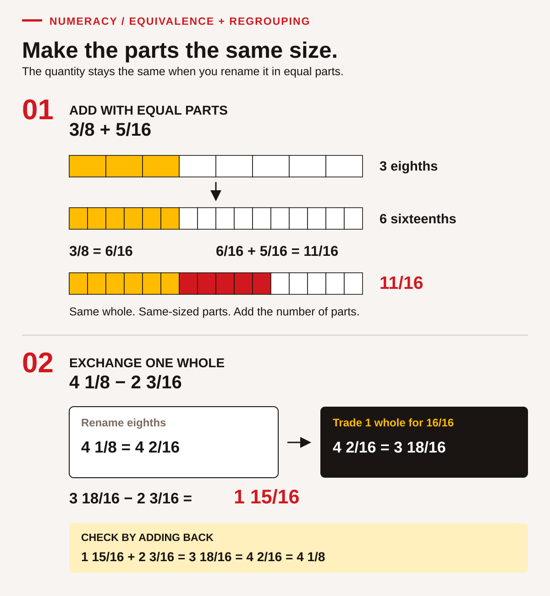
Read the visual description
Three eighths is six sixteenths. Adding five sixteenths gives eleven sixteenths. Four and one eighth is four and two sixteenths, or three and eighteen sixteenths. Subtracting two and three sixteenths leaves one and fifteen sixteenths. Adding the difference to the subtracted quantity returns four and one eighth.
Work through 4⅛ − 2 3/16. First express the smaller parts alike: 4⅛ = 4 2/16. Two sixteenths cannot supply three sixteenths without regrouping. Exchange one of the four wholes for 16/16: 4 2/16 = 3 18/16. The value has not changed. Subtract 2 3/16 to get 1 15/16. Check by adding: 1 15/16 + 2 3/16 = 3 18/16 = 4 2/16 = 4⅛.
Guided attempt: 3¼ − 1⅝. Convert 3¼ to 3 2/8, then regroup as 2 10/8. Subtract 1 5/8 to get 1 5/8. Explain the exchanged whole before checking with addition. If needed, physically exchange one whole strip for eight eighths.
Convert a unit without changing the quantity
1 m = 1,000 mm means each metre contains a thousand millimetres. For example, 0.45 m × 1,000 = 450 mm. Reverse it: 450 mm ÷ 1,000 = 0.45 m. Notice that the numerical value grows when the unit becomes smaller; the described length stays the same. For a nominal classroom input, this does not establish a real measured object's precision.
Guided attempt: 0.32 m to millimetres. The answer is 320 mm. Check whether 32 mm or 3,200 mm could describe the same length, using the known metre relationship to explain the disagreement.
Reconnect the arithmetic to a task
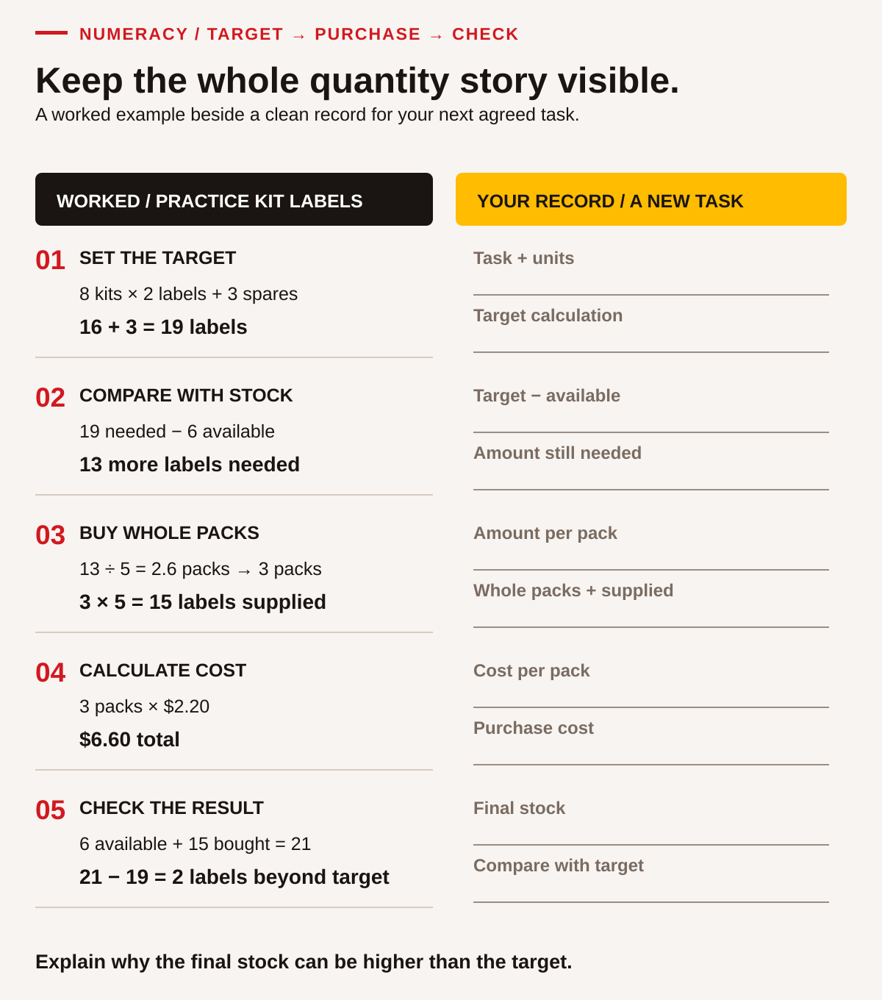
Read the visual description
The worked example needs nineteen labels: eight kits times two labels plus three spares. Six labels are available, so thirteen more are needed. Packs contain five labels, so buy three whole packs. Three packs at two dollars and twenty cents cost six dollars and sixty cents. Final stock is twenty-one, two beyond the target. A separate blank record has space for the same five calculation stages using a new agreed example.
Eight practice kits need two labels each, plus three spare labels. Six labels are available. Packs contain five labels and cost $2.20 each, with no other charge in this small example. Follow the record: 8 × 2 + 3 = target 19; 19 − 6 = 13 needed; 13 ÷ 5 = 2.6 packs, so 3 whole packs supply 15. Cost 3 × $2.20 = $6.60. Final available 6 + 15 = 21, two beyond the target. Explain why a pack count is different from a piece count and why rounding down would leave a shortage.
Fresh exit tasks
- Add 1⅜ + 2¼. Show equal-sized parts and explain any whole made.
- Subtract 4½ − 2¾. Show the exchanged whole and check by addition.
- Convert 0.58 m to millimetres and reverse-check it.
- Five practice kits need three labels each plus two spares. Four labels are available; packs contain six and cost $3 each with no other charge. Find whole packs, cost and final surplus beyond the target.
Feedback: 1) 3⅝; 2) 1¾, since 4½ = 3 6/4 and 3 6/4 − 2 3/4 = 1 3/4; 3) 580 mm; 4) target 17, shortage 13, 3 packs supply 18, cost $9, final 22, five beyond target. These exit answers are for review after the attempt. A fresh check uses different inputs with the completed example removed.
Continue to the relevant quantity, fraction or unit task when you have a method you can explain with your agreed tools. A partly completed table can support working memory without supplying which operation to choose. Keep calculations and an actual tool-measurement opportunity separate in the learning record.
Case document A • Supplies for a classroom project
Fictional training order: Willow Reach information project, version 1. The Town of Willow Reach is the fictional road owner and Pathway Paving is the fictional contractor in the wider practice case. This order is for classroom materials used to explain that project. It is not an order for road-building equipment or a real purchasing instruction.
Eighteen learners will prepare information folders. Each learner needs one folder, two pens and three labels. The group also wants two spare folders, four spare pens and six spare labels. The supplies cupboard contains seven usable folders, nine usable pens and sixteen usable labels. These counts have already been checked for this invented task. The spare quantities are additional to the learner quantities.
The practice supplier sells complete packs only. The listed prices already include every tax used in this classroom example; do not add another tax. The goods subtotal determines delivery: an order of at least $60 has no delivery charge; an order below $60 has an $8.50 delivery charge. The available budget is $65 for goods and delivery together. No pickup arrangement, discount or alternative supplier has been provided.
If needed, scroll across this table. Keyboard: focus the table, then use the arrow keys.
| Item | Quantity in one pack | Price for one pack |
|---|---|---|
| Folders | 5 | $8.75 |
| Pens | 12 | $6.60 |
| Labels | 20 | $4.20 |
The purchasing note must state what is needed, what is already available, how many whole packs to obtain and whether the total fits the budget. An order should not be described as approved merely because someone has calculated it. Where a condition is unresolved, identify the question for the instructor acting as project coordinator.
NU-01 • State the task before calculating
Read document A and write a two-sentence task statement. Identify the decision the coordinator needs and the units your answer will use. Then sort these details into needed now, background or not supplied: learner count, contractor name, usable stock, pack prices, delivery conditions and permission to collect an order. Explain why a missing permission cannot be replaced with a convenient assumption.
NU-02 • Connect learners, spares and stock
Make a table with three rows: folders, pens and labels. Add columns for learner quantity, spare quantity, total target, existing stock and additional quantity needed. Complete the target and additional quantities. Before working exactly, predict which item needs the most individual pieces added. Point to the two parts of document A you had to connect. Explain why subtracting stock before adding the spare target could hide a requirement.
Whole packs, fractions and money
A pack count is different from a piece count. If thirteen more folders are needed and each pack holds five, 13 ÷ 5 = 2.6 packs. The supplier does not sell 0.6 of a pack, so this order needs three whole packs. Rounding down would leave a shortage. In another task, such as counting complete kits that can be made from limited stock, rounding down might be necessary. The purpose decides the rounding direction.
Money calculations need a clear order. First find each line cost, then add the goods subtotal, then apply the stated delivery condition. Do not compare the budget with a subtotal that leaves out a required charge. Keep cents through the calculation. These prices are exact classroom inputs, so round a final money amount to cents only when an operation produces more than two decimal places.
Worked example 1 — folders. Eighteen learners need eighteen folders. Add two spares: 18 + 2 = 20 folders. Seven already exist: 20 − 7 = 13 more folders. Whole packs: 13 ÷ 5 = 2.6, so buy three packs. Cost: 3 × $8.75 = $26.25. Check the quantity: 7 + 3 × 5 = 22 folders, two more than the target of twenty. Check the money: three packs at roughly nine dollars suggest roughly twenty-seven dollars. Both checks support the result. Report “three packs, $26.25, providing two folders beyond the planned target,” not simply “2.6.”
NU-03 • Work out the pen order
Use the folder example as a model, but calculate the pens yourself. Show the learner requirement, spare requirement, target, shortage, whole-pack count, cost and final quantity available. Explain the difference between the four planned spare pens and any additional pens created by buying complete packs. Check the quantity using multiplication and addition after you have calculated the pack count.
NU-04 • Complete and evaluate the order
Calculate the label order independently. Then use the folder, pen and label costs to find the goods subtotal, applicable delivery charge and complete order cost. Compare the complete cost with the $65 budget and state the size of any surplus or shortfall. A note says, “The goods cost less than $65, so the order fits.” Correct that note with evidence. Do not invent a discount or permission to omit required supplies.
A fraction compares a part with a defined whole. Seven existing folders out of a target of twenty is 7/20. Dividing gives 0.35; multiplying by one hundred gives 35%. These are three ways to represent the same share. The denominator must be the relevant whole, not a number chosen because it is nearby in the document. “We already have nine pens and seven folders” does not tell us which requirement is better covered because the target quantities differ.
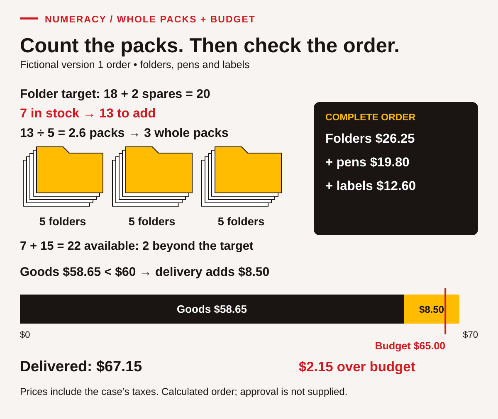
Read the visual description
A worked whole-pack order needs twenty folders including spares, has seven, and needs thirteen more. Three packs of five bring stock to twenty-two. Folders cost $26.25, pens $19.80 and labels $12.60, making goods $58.65. Because goods are below $60, delivery adds $8.50. The delivered cost is $67.15, or $2.15 over the $65 budget. A scaled budget bar shows the comparison.
NU-05 • Compare shares fairly
Find the share of each target already covered by stock for folders and pens. Give each as a fraction and a percentage. Which target has the larger share covered, even though the other item has more pieces in stock? Explain the role of the whole in your comparison. Use a strip divided into twenty or forty equal parts, a calculator or another clear representation to check your reasoning.
NU-06 • Respond to a changed quantity
Version 2: The learner count rises from eighteen to twenty-two. Each learner's quantities, spare quantities, stock, pack sizes, prices, delivery rule and $65 budget stay the same. Recalculate the three whole-pack counts and total order cost. Identify which lines change and which stay unchanged. Give the coordinator a concise revised report, including the budget consequence and one decision that still needs their direction. Keep version 1 visible so the change can be checked.
Case document B • A training visit timetable
Fictional travel plan, one practice day. A learner is travelling from the fictional South Stop to a training room. Registration must be reached by 08:45. The workshop starts at 09:00 and ends at 15:20. There is an eight-minute walk between Training Stop and the room. The planning instruction adds a ten-minute buffer after the planned walk and before the registration deadline. The buffer is a classroom planning allowance, not a promise about real service reliability.
The learner must change services at Central Stop. Times in the table are for this invented exercise and do not describe a B.C. transport service. A connection is possible only when the first service arrives before the second leaves. No other outbound departures are available in this document.
If needed, scroll across this table. Keyboard: focus the table, then use the arrow keys.
| Outbound service | Leaves | Arrives |
|---|---|---|
| A: South Stop to Central Stop | 07:10 | 07:45 |
| B: South Stop to Central Stop | 07:40 | 08:15 |
| C: Central Stop to Training Stop | 08:00 | 08:25 |
| D: Central Stop to Training Stop | 08:25 | 08:50 |
After the workshop, the same eight-minute walk returns the learner to Training Stop. The return service leaves at 15:40 and reaches Central Stop at 16:05. The next service leaves Central at 16:20 and reaches South Stop at 16:55. For the exercise, each vehicle boarding costs $2.50. A fictional $8 day pass covers all four boardings on that day. There are no additional fares or discounts in this case.
The coordinator asks for a workable outward journey, the expected return time and a fare comparison. They also want the learner to identify conditions that a real travel plan would need to confirm, such as current schedules and accessible travel arrangements. No one needs to disclose their actual address or travel needs to solve the case.
Read time as time
Clock minutes use groups of sixty. From 08:25 to 09:00 is thirty-five minutes, not seventy-five. A decimal hour uses a different representation: half an hour is 0.5 h, which is thirty minutes. When a document says 1.30 h, you need to know whether the writer means one hour thirty minutes or 1.30 decimal hours. Clear reporting avoids that ambiguity by writing 1 h 30 min or 1.5 h.
Worked example 2 — a return journey. The workshop ends at 15:20. Add the eight-minute walk to reach Training Stop at 15:28. The wait for 15:40 is twelve minutes. The first vehicle journey takes twenty-five minutes, the Central wait takes fifteen minutes, and the final journey takes thirty-five minutes. Total: 8 + 12 + 25 + 15 + 35 = 95 minutes, or 1 h 35 min. Check directly: 15:20 to 16:20 is sixty minutes, then another thirty-five reaches 16:55. The report should name both the final clock time and the elapsed duration.
NU-07 • Choose a feasible outward journey
Find the latest listed departure from South Stop that allows the learner to meet registration including the eight-minute walk and ten-minute buffer. Name both connecting services. Show arrival at Training Stop, arrival at the room and the end of the buffer. Explain why the later South departure does or does not work. This is a question about stated constraints, not simply about the shortest ride.
NU-08 • Check elapsed time another way
For the feasible outward journey you chose, calculate the Central waiting time and total elapsed time from South departure to room arrival. Add the return journey's elapsed time to find the combined outward-and-return journey time. Include travel and waits within those journeys; exclude all time in the room before the 09:00 workshop, including the planning buffer, and exclude the workshop itself. Report hours and minutes. Correct this claim: “Eighty-three minutes is 1.83 hours.” You may show a timeline, grouped minutes or a calculator conversion.
NU-09 • Compare like-for-like fares
Calculate the cost of four separate boardings and compare it with the day pass. State the saving and the assumptions that make the comparison valid. Then consider a different learner who needs only two boardings that day. Which option costs less for that learner, and by how much? Explain why “the pass is always cheaper” is not supported by the supplied prices.
NU-10 • Update a plan without losing its conditions
New notice: Registration is now due by 09:10 and the workshop starts at 09:20. Everything else in document B stays unchanged, including the ten-minute buffer and the workshop end time. Recheck the later South departure. Prepare a short revised journey note with service letters, room-arrival time, buffer-end time, registration margin and fare choice for four boardings. Identify one real-world fact the fictional timetable cannot verify.
Case document C • A classroom information board
Fictional layout brief. A learning room is preparing an information board using paper cards. The board is a rectangle 600 mm wide and 400 mm high. The first layout requires a clear margin of 25 mm on every edge. Each information card is 180 mm wide and 110 mm high. Cards must keep that orientation. Leave a 20 mm gap between neighbouring cards, horizontally and vertically. The 20 mm rule applies only between neighbouring cards; no additional 20 mm gap is required at an outside edge.
All dimensions are nominal design inputs for this exercise. They are not measurements of the printed page. Printing or screen zoom can change a diagram's physical size. Use the labelled values for calculations. If you practise measuring an actual classroom object, use a suitable real measuring tool and record the unit and precision; do not assume this workbook prints at a particular scale.
The board will explain four fictional practice-session categories. The visitor table counts thirty-six invented visitors, with each person assigned to only one category. It is a complete table for this exercise, not a survey of an actual community. The instructor asks for a neat arrangement, a simple chart and a short explanation of what the chart supports.
| Practice-session category | Fictional visitors |
|---|---|
| Orientation | 8 |
| Trades preparation | 12 |
| Service roles | 6 |
| Community project planning | 10 |
Later, the instructor may change the margin requirement. Keep the original layout and calculations so a revision can be compared. The task concerns paper information design. It does not establish structural design, accessibility compliance or a safe installation method for a real board.
Measure the quantity the task actually asks for
Length, perimeter and area answer different questions. Length describes a single dimension. Perimeter is the distance around a shape. Area describes the surface covered. A rectangle's perimeter is 2 × (width + height), while its area is width × height. Label perimeter in a length unit such as metres and area in a square unit such as square metres. The same numbers can produce both calculations, but the results are not interchangeable.
Changing units also requires attention to the quantity. Because 1 m = 1,000 mm, 600 mm is 0.6 m. For area, one square metre contains 1,000 × 1,000 = 1,000,000 square millimetres. Dividing a square-millimetre area by only one thousand produces an incorrect conversion. A sketch of a one-metre square can help explain why two dimensions change.
Worked example 3 — the clear inside rectangle. The board loses a 25 mm margin on both the left and right: 600 − 25 − 25 = 550 mm. It also loses the top and bottom margins: 400 − 25 − 25 = 350 mm. The clear area is 550 × 350 = 192,500 mm². Converting the sides first gives 0.55 × 0.35 = 0.1925 m², which agrees with 192,500 ÷ 1,000,000. Check that the clear area is smaller than the whole board. Do not subtract the margin only once from each dimension.
NU-11 • Identify units and precision
Convert the board width and height to centimetres and metres. Rewrite the 20 mm gap in centimetres. Explain why measuring the drawing on a resized screen would not establish these dimensions. If you have a real ruler, measure a plain classroom sheet's width to the nearest millimetre and record your method; otherwise describe where zero and the endpoint would need to align using the supplied board values. Keep actual measured data separate from nominal case dimensions.
NU-12 • Choose perimeter or area
Calculate the whole board's perimeter in metres and its area in square metres. Then calculate the total area of four information cards and express it as a percentage of the whole board area. Explain which result could describe the amount of surface covered and which describes the distance around the board. Check that the card coverage percentage is below 100% without relying only on the calculator display.
NU-13 • Test fit, not just total area
Using the original margins, work out how many cards fit across and how many fit down. Include only the gaps between cards: two cards have one gap, three cards have two. Find the total number of cards in a rectangular arrangement. Show why a proposed three-column layout fails even if the cards' combined area seems small enough. Draw a labelled sketch that another learner can check without measuring your drawing.
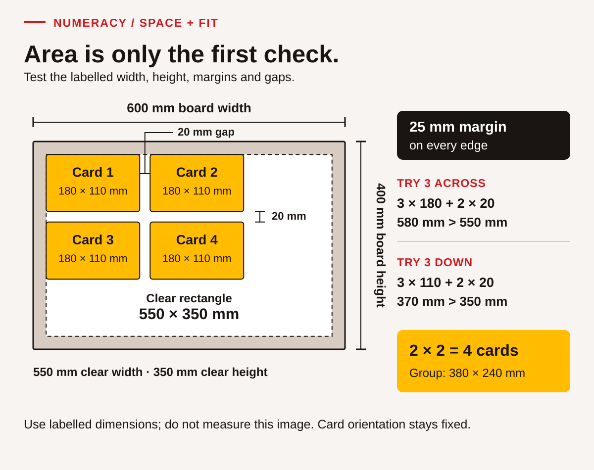
Read the visual description
Fictional board 600 by 400 millimetres with 25-millimetre margins has a clear rectangle 550 by 350. Four fixed-orientation cards, each180 by110, fit as two across and two down with20-millimetre gaps. Three across needs580, exceeding550. Three down needs370, exceeding350. The four-card group measures380 by240 millimetres.
NU-14 • Read a different unit system
A separate fictional paper strip is labelled 6½ inches. Use the exact conversion 1 inch = 25.4 mm to calculate its length in millimetres. First rewrite 6½ as a decimal. A second strip is ¼ inch wide; convert that width too. Explain why multiplying by 25 rather than 25.4 would be an approximation. These labels are supplied values, not a claim about the physical size of any printed illustration.
Turn data into a message
A useful graph has a question, a title, clear category labels and a scale. A bar chart compares category amounts well. Start its count axis at zero so the visual lengths represent the quantities fairly. Equal steps on the axis must mean equal numerical changes. A picture with attractive bars but no units may leave the reader unable to tell whether the values represent people, dollars or minutes.
A percentage also needs its population and period. “One third chose trades preparation” means one third of these thirty-six fictional visitors, not one third of all learners or all Indigenous people. A count can describe this dataset without explaining why someone attended or predicting demand next year. Sharing a result includes saying what remains unknown.
NU-15 • Make a chart that can be checked
Total the visitor counts. Create a bar chart on paper or with a digital tool using an axis from zero to twelve in steps of two. Include a title that says the data are fictional. Calculate the share represented by Trades preparation as a fraction and percentage. Write two supported comparisons and one conclusion the table cannot support. If using a tool, check its chart against the original table; paper work demonstrates the numeracy task without claiming Digital evidence.
NU-16 • Recalculate after a layout change
The instructor changes every outside margin from 25 mm to 10 mm. Card orientation, card dimensions and 20 mm between-card gaps stay unchanged. Calculate the new clear width and height. Test the number of cards across and down, then compare capacity with the original arrangement. Explain why increasing clear area alone is not enough to establish that a particular arrangement fits. Report both the new count and its conditions.
NU-17 • Transfer the checking routine to a purchasing choice
Return to document A, version 1 with eighteen learners. The coordinator now permits one extra pack of labels because they will be used at the next session and storage is available. Compare the original minimum-quantity delivered order with an order containing that additional pack. Reapply the delivery rule and find the total difference. Does the revised order fit $65? Explain the trade-off: spending more on goods can sometimes reduce the final charge, but buying unneeded goods is not automatically a saving.
NU-18 • Make a numerical handover
Choose your revised journey, revised board layout or revised supply order. Prepare a handover containing the question, relevant inputs, method, checked result and implication. Include one uncertainty or condition and show how another person could check the result. Your partner or instructor restates the recommendation; correct any misunderstanding. Finally, identify a specific mistake you corrected or a checking strategy you strengthened, using evidence from your working rather than a general claim about being “good” or “bad” at maths.
Practise with a suitable amount of support
Start with a preformatted table, a number line, fraction counters or an instructor modelling one step. Then try a related item with fewer prompts. If a whole case is too much at once, complete its quantities before its costs, or its arrivals before its fares. Keeping the purpose visible helps you reconnect the parts. For an extension, explain a second valid method or show what additional information a real task would require.
A partner can ask questions and compare methods, but keep individual evidence of your reasoning. Explain an operation before entering it into a calculator. When two results differ, compare the task, source values, units and steps in that order. Repeating the same calculation without identifying the disagreement may simply repeat the error. Feedback should name the useful action: “You checked both margins,” or “The delivery condition still needs applying.”
Your local feedback record can distinguish Not observed, Not yet demonstrated, Demonstrated with support and Demonstrated independently. An attempt with an error is different from a task nobody has observed. These descriptions are not official Skills for Success proficiency levels. Application in a different context is recorded separately as transfer, with the new task and evidence named.
Component and evidence map
| Component | Main evidence in this chapter |
|---|---|
| 1. Identify the task | NU-01 states the decision; NU-07 identifies deadline constraints; NU-12 selects the required quantity. |
| 2. Identify mathematical information | NU-02 extracts quantities; NU-07 reads the timetable; NU-11 identifies units and precision. |
| 3. Connect related information | NU-02 links people, spares and stock; NU-04 joins pricing and delivery; NU-13 connects dimensions and gaps. |
| 4. Apply operations and tools | NU-03–NU-06 calculate packs, money and shares; NU-08–NU-09 calculate time/fares; NU-12–NU-16 calculate and display measurements/data. |
| 5. Interpret and evaluate | NU-04 challenges a subtotal claim; NU-13 tests actual fit; NU-15 limits conclusions; NU-17 compares complete costs. |
| 6. Share results and implications | NU-06 and NU-10 report revisions; NU-15 explains a chart; NU-18 gives a checkable handover. |
Numeracy · fresh quantities, fractions and units
Use the selected form. Show how you chose the quantities, your working, units and a second check. An agreed calculator, fraction strips or accessible number tool may be used. These are nominal classroom values, not dimensions to measure on the page or live purchasing instructions. Prices include all charges except the delivery rule explicitly stated. No purchase is authorized.
Form A · Practice information packs
Fourteen learners each need one folder and three cards. Add two spare folders and six spare cards to those learner quantities. Existing usable stock is five folders and eleven cards. The supplier sells whole packs only.
If needed, scroll across this table. Keyboard: focus the table, then use the arrow keys.
| Item | Pieces per pack | Price per pack |
|---|---|---|
| Folders | 4 | $6.40 |
| Cards | 12 | $3.60 |
Goods costing at least $35.00 have no delivery charge. Below that threshold, delivery is $4.50. The budget is $37.00 including delivery. No other supplier, discount or pickup option is supplied.
CK-NU-A01 · Connect the quantities
For each item, record the learner requirement, spares, total target, existing stock, additional pieces needed, whole packs and pieces available after purchase. Explain your rounding direction. Distinguish planned spares from any additional surplus created by buying whole packs.
CK-NU-A02 · Decide from the full cost
Estimate the goods cost, calculate exact line costs and apply the delivery rule. Report the complete cost and its difference from the budget. State whether the order fits and what decision still belongs to the coordinator. Check one result using a different operation, grouping or estimate; identify what your check can detect.
CK-NU-A03 · Work with fractional lengths
Two nominal paper strips are 1¾ in and 2⅞ in long. Find their combined length. A separate strip is 4¼ in long and has a marked section 1⅝ in long; find the remaining length. Show equivalent fractions and any regrouping. Check one answer by reversing the operation. These are calculation inputs, not instructions to cut material.
CK-NU-A04 · Keep the quantity and unit together
A nominal display strip is 0.64 m long. Use 1 m = 1,000 mm to express it in millimetres. Explain why this conversion does not tell you an actual measured strip's precision. Give a short numerical handover containing the order result, a condition and a method another person could check.
Form B · Practice orientation packs
Eleven learners each need one folder and two cards. Add three spare folders and six spare cards. Existing usable stock is three folders and five cards. Whole packs only are available.
If needed, scroll across this table. Keyboard: focus the table, then use the arrow keys.
| Item | Pieces per pack | Price per pack |
|---|---|---|
| Folders | 4 | $6.80 |
| Cards | 10 | $5.50 |
Goods costing at least $40.00 have no delivery charge. Below that threshold, delivery is $4.20. The budget is $42.00 including delivery. No other supplier, discount or pickup option is supplied.
CK-NU-B01 · Connect the quantities
For each item, record the learner requirement, spares, total target, existing stock, additional pieces needed, whole packs and pieces available after purchase. Explain your rounding direction. Distinguish planned spares from any additional surplus created by buying whole packs.
CK-NU-B02 · Decide from the full cost
Estimate the goods cost, calculate exact line costs and apply the delivery rule. Report the complete cost and its difference from the budget. State whether the order fits and what decision still belongs to the coordinator. Check one result using a different operation, grouping or estimate; identify what your check can detect.
CK-NU-B03 · Work with fractional lengths
Two nominal paper strips are 2½ in and 1⅞ in long. Find their combined length. A separate strip is 5¼ in long and has a marked section 2⅞ in long; find the remaining length. Show equivalent fractions and any regrouping. Check one answer by reversing the operation. These are calculation inputs, not instructions to cut material.
CK-NU-B04 · Keep the quantity and unit together
A nominal display strip is 0.72 m long. Use 1 m = 1,000 mm to express it in millimetres. Explain why this conversion does not tell you an actual measured strip's precision. Give a short numerical handover containing the order result, a condition and a method another person could check.
Working pages for either form
If needed, scroll across this table. Keyboard: focus the table, then use the arrow keys.
| Item | Learner need | Spares | Target | Stock | More needed | Whole packs | Final pieces |
|---|---|---|---|---|---|---|---|
| Folders | Write your response here. | ||||||
| Cards | Write your response here. |
| Cost or check | My working, unit and explanation |
|---|---|
| Estimate | Write your response here. |
| Folder cost | Write your response here. |
| Card cost | Write your response here. |
| Goods / delivery / total | Write your response here. |
| Budget difference and decision | Write your response here. |
| Independent check | Write your response here. |
Learner · ACCESS IS4S
Digital • Keep information useful, findable and in your control
Digital skill means choosing and using devices, tools and information for a purpose. It includes finding a document, checking whether it answers your question, creating something useful, protecting information and learning a changed tool. Being quick on one app does not mean you must already know every other app. The useful question is: what do you need to accomplish, and what support will help you do it?
You may already use digital skills to arrange travel, follow a course, keep in touch, manage a household or support a community activity. You may also prefer paper for some jobs. Both experiences matter here. We begin with familiar actions and make their purpose visible. You can choose an accessibility setting, work beside a partner and ask for a demonstration without giving up control of your own task.
The cases in this chapter concern a fictional training centre in B.C. All names, quantities, messages and records are invented. They represent classroom choices, not the procedures of ACCESS, a Nation, a real employer or a public agency. Use a learning ID, not personal records. No activity requires an account password, a purchase, an application submission or sending a message to another person.
Six parts of Digital
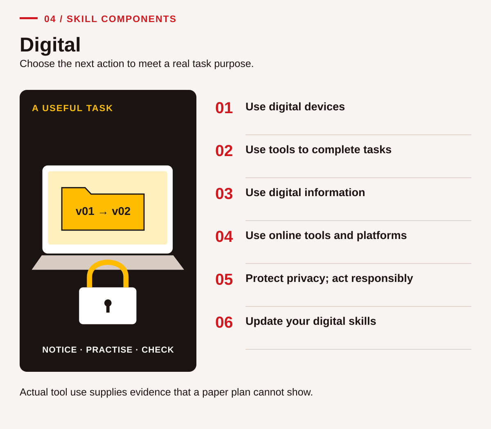
Read the visual description
An original task illustration occupies the left panel; six numbered actions appear on the right. Choose the next action to meet a real task purpose. Six connected components: Use digital devices; Use tools to complete tasks; Use digital information; Use online tools and platforms; Protect privacy; act responsibly; Update your digital skills. Actual tool use supplies evidence that a paper plan cannot show.
These six components connect device control, useful information, responsible decisions and continued learning. Begin with actions that matter for your task and add challenge when you can check the result.
If needed, scroll across this table. Keyboard: focus the table, then use the arrow keys.
| Component | What it means in this chapter | Main evidence |
|---|---|---|
| 1. Use digital devices including computers, tablets, smart phones and other handheld devices | Control the available device and adjust a useful setting. | DG-01–DG-03 |
| 2. Use common digital tools to complete tasks | Choose a suitable tool and produce a checked document or table. | DG-04–DG-06 |
| 3. Use digital information | Find, compare, organize and evaluate information. | DG-07–DG-09 |
| 4. Use online tools and platforms | Navigate a public website and use its features for a defined purpose. | DG-10–DG-12, where an actual online turn is available |
| 5. Apply safe and responsible practices online | Recognize requests, manage sharing and protect credentials and other people's information. | DG-13–DG-15 |
| 6. Update and upgrade digital skills | Use help, test a new method and retain a learning strategy. | DG-16–DG-18 |
If internet access is unavailable, the printed cases still support reading, source evaluation and planning. Record online tool use as not observed until you have an actual turn. Likewise, your partner's completed spreadsheet is not evidence that you used the tool. Partners can coach; each person needs time controlling the device or their chosen accessible interface.
Control one action and check its effect
Begin in an approved blank practice document. The instructor confirms where work may be saved and how to return to the starting view. Use a mouse, keyboard, touch, voice or another accessible control method. The purpose is to control and check the action, not imitate one device's gesture.
Start by noticing the controls
Identify the application you are using. Explain how you enter a word, select it and return to the document, then demonstrate two actions. If the controls are familiar, move to saving and retrieval. If a control is unfamiliar, ask for a demonstration, take control again and repeat with different dummy text.
Enter, select and undo
- Enter Practice list on the first line and three folders on the next.
- Select three using the available interface. Replace it with four.
- Identify the application's Undo command. Use it and check whether three returns.
- Change the word to five. Explain what changed and what stayed the same.
Ask your instructor to model a different phrase first if helpful. Some applications show undo in a menu; others use a toolbar or accessible shortcut. Ask for a demonstration when the location is unfamiliar. Do not assume the same key combination works everywhere. Inspect the result after each action.
Save and find an actual file
Choose the approved practice folder with the instructor. Save the document as controls-practice-v1-[learning-ID]. Record both name and location; these are different pieces of information. Close the document, then reopen it from that location. Confirm the latest word five. For autosaving tools, identify the saved item/location and check its latest content after reopening.
Make a second version named controls-practice-v2-[learning-ID], changing five folders to six folders. Retain v1. Close v2, locate both files and check which contains each phrase. A changed name with old content is not a completed update.
Make one access adjustment
Choose text enlargement, zoom, pointer size or another available setting that helps you use the document. Predict what it changes, try it and inspect the result. Check whether the setting affects the view only or changes document content. Agree whether to restore it on a shared device. You do not need to give a diagnosis or personal reason.
Fresh exit task
In a new blank file, enter Return note and two rulers. Save it as controls-exit-[learning-ID] in the approved location. Replace two with three, use Undo to restore two, then save the intended final text four rulers. Close and reopen the file and show the phrase. State the name and location and demonstrate a usable view adjustment.
Ask your observer to record your actions, any navigation help and whether the final saved phrase is present. If a file cannot be found, use the remembered name/location to investigate; do not create repeated copies at random. After watching a demonstration, take your own turn so your actions can be observed.
Continue to making a small table when you can enter, revise and retrieve a simple file with your agreed support. Keep a help card with three reminders you choose: where I save, how I undo, how I ask for the next unfamiliar step. Do not include passwords or private account information.
Begin with a purpose and a comfortable setup
A device is the physical equipment, such as a laptop or tablet. An application is a program used for a task. A file is a saved item, such as a document or spreadsheet. A folder helps organize files. A browser opens web pages and may also show local files. A website is a set of pages provided through the web. These terms help you ask a precise question: “I can open the browser, but I cannot find the file I downloaded” gives a helper a clearer starting point than “Nothing works.”
Before changing anything, notice what is already open. On a shared device, ask which folder and account are designated for classroom practice. Do not browse another person's files. A helpful setting might be text enlargement, display magnification, a different pointer size, captions, keyboard navigation or a screen reader. Settings differ between devices. Ask the instructor to demonstrate an unfamiliar setting and how to return to the previous view. The goal is usable access, not mastering a particular brand's menu names.
DG-01 • Name the task and the controls
Choose one available device. Tell a partner how you would enter text, select an item, move between open applications and return to the main working screen. Demonstrate two of those actions using an empty practice document. Identify the device, application and file separately. If you use voice, switch controls or another access method, demonstrate the equivalent actions. The partner records what you actually did, not how fast you did it.
DG-02 • Make one useful adjustment
Choose a setting that could help with this chapter, such as enlarging text or turning on captions for a demonstration. Predict what it will change, make the adjustment with support if needed, and test it. Explain whether it helped. Show how you would restore the previous setting or ask the device owner before leaving it changed. This is a practical choice; you do not need to disclose a diagnosis or justify an access need.
DG-03 • Create a place to work
In the approved practice location, create a folder named IS4S-practice-[learning-ID]. Create a document named digital-notes-v01 inside it. Add the date and one sentence about a digital task you want to practise. Save, close and reopen it from the folder. Point out the difference between the file name and its location. If the application saves automatically, identify the saved location and check that your latest sentence appears after reopening.
Case document A • A record the next person can trust
Fictional centre request — Equipment learning cards, version 1
The training team is preparing classroom cards for an introduction to asphalt paving. The cards explain equipment purposes; they contain no operating instructions. The coordinator needs a record showing how many card sets are ready and how many still need checking.
At the start of the afternoon, the table below is the agreed record. “Checked” means a classroom reviewer compared the printed labels with the approved lesson sheet. It does not mean equipment has been inspected or a learner has earned a technical qualification. The coordinator asks for a clear title, the three topic names, totals and a note identifying the record as fictional practice data.
Another learner will use the file tomorrow. They need to find the latest version without guessing whether “final,” “new-final” or “really-final” is correct. The practice folder is shared only with the instructor and your assigned partner. No public link is needed.
If needed, scroll across this table. Keyboard: focus the table, then use the arrow keys.
| Classroom card topic | Sets prepared | Sets checked |
|---|---|---|
| Material flow | 8 | 5 |
| Equipment purposes | 6 | 4 |
| Road users | 10 | 7 |
A word-processing document is useful for paragraphs and a simple display table. A spreadsheet is useful when you need repeated calculations and updates. A presentation tool helps organize material for an audience, but it may be awkward for a record that must be sorted and recalculated. Choosing a tool begins with the task, not with the most impressive feature available.
Worked example 1 • Build a small, checkable table
Open a blank spreadsheet. Put the headings in row 1: Topic, Prepared, Checked, Remaining. Enter the three source rows in rows 2–4. In D2, subtract checked sets from prepared sets: =B2-C2. The first result should be 3. Use the same relationship for the next two rows. The remaining values are 3, 2 and 3.
In row 5, label the first cell Total and total each number column. For example, =SUM(B2:B4) totals prepared sets. The answers are 24 prepared, 16 checked and 8 remaining. Check the relationship 24 − 16 = 8. This second check would catch some entry or range errors. It does not replace checking every source row. A formula can calculate the wrong entries perfectly.
Give the sheet a descriptive title. Keep numbers as numbers; explain their meaning in headings. Save a first version and reopen it. The useful result is a readable, retrievable record whose values agree with the supplied document. A screenshot alone may hide formulas or make later editing difficult, so keep the editable file as well as any display copy.
DG-04 • Choose and explain a tool
Choose a tool for each task: a two-paragraph visitor note, the card-count record, and a three-screen explanation for a class discussion. Explain one useful feature and one limitation of each choice. A single tool may handle more than one task. Your reason must refer to the reader, calculation or update needed, not simply “I like this app.” Compare your choice with a partner's and retain any justified difference.
DG-05 • Build and check the record
Create the four-column table from Case A. Enter and check every row, calculate remaining sets and add totals. Show the instructor one formula or your alternative calculation method. Add a note saying Fictional classroom data — not an equipment inspection record. Save the editable file as card-record-v01-[learning-ID]. Explain why a prepared set and a checked set are not the same thing. If using a table tool without formulas, show your calculations separately and label totals clearly.
DG-06 • Make a usable second version
A reviewer checks two more Road users sets; no new sets are prepared. Update the checked value from 7 to 9 and save a second version. Record what changed and who made the practice update using your learning ID. Check the new totals and remaining count. Show both versions, identify the current one, and explain how a future reader would know which to use. Do not delete the earlier version until the exercise review is complete.
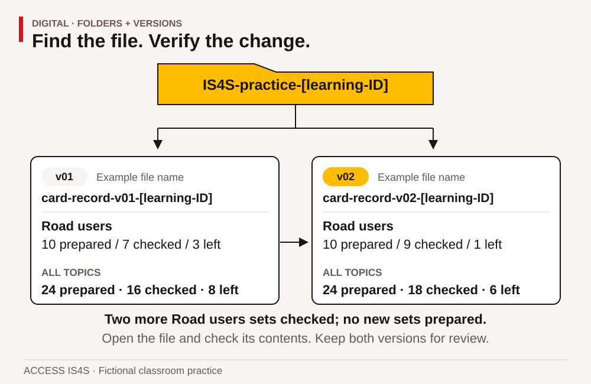
Read the visual description
Two files in a practice folder show the change from v01 to v02. Road-user cards remain ten prepared while checked increases from seven to nine and remaining decreases from three to one. Across all topics, prepared stays twenty-four, checked rises from sixteen to eighteen and remaining falls from eight to six. Both versions stay available for review.
Find and judge information before using it
Searching is a sequence of decisions. First identify the question. Then choose terms that describe the topic, location and type of source. Open a result and examine the actual page. A result title or preview can be incomplete, outdated or unrelated to the part of the page you need. Record the title, publisher, date or version if shown, and the location of the information that answers your question.
A relevant source can still have limits. A historical training outline may accurately describe what was included in that version, while not proving today's entry requirements. A government page can be authoritative for its own program without answering a particular employer's procedure. A post that repeats someone else's claim may not show where that claim began. Ask both “Who is responsible for this information?” and “Does this information answer my actual question?”
Digital information also includes tables, images, diagrams, audio and video. An image without labels may be difficult to interpret. A video may need captions or a transcript. A document may look official but contain an old revision date. These are reasons to investigate, not reasons to dismiss every unfamiliar source. You can keep a question open while finding better evidence.
Case document B • Two messages, different evidence
Practice notice A — undated social post
“The paving course is open to everybody next week. No need to check anything: all training is free, and everyone who attends gets fully qualified. Share this with all your contacts.” The post names no provider, intake, eligibility rule, credential or contact. A decorative logo appears, but the page gives no source link.
Practice notice B — fictional training-office draft, dated 6 May 2027
“We are collecting expressions of interest for an introductory classroom session about asphalt paving. This notice does not confirm a place, tuition arrangement or trade qualification. Contact the training office through its published directory before making travel arrangements. The coordinator will confirm dates, access supports and any documents needed. Do not put identity documents in a public comment.”
These notices are supplied classroom texts. Neither is a real intake announcement. Notice B gives clearer limits, but its fictional status means it cannot establish a real course opportunity. A careful reader can recognize better information practices without treating the example as current program information. This distinction matters when digital material looks polished or uses a familiar organization's name.
Worked example 2 • Turn a broad search into a useful question
The first question is “How do I get a paving job?” That could involve training, vacancies, applications, experience or certification. For this chapter, narrow it to: Where can I read the official description of the nine Skills for Success? Search terms such as Government of Canada Skills for Success nine skills identify the topic and likely publisher. Open the publisher's page, check the page title and domain, and locate the skill descriptions.
The source record might contain: Question; page title; publisher; web address; date accessed; relevant section; what remains unanswered. The final field matters. A description of Digital does not establish the admission requirements of a particular B.C. course. A useful search ends with an answer bounded by the source, not a claim that the page solves every related question.
DG-07 • Evaluate the two notices
For each notice, identify the purpose, the claims supported by its text, the missing information and a sensible verification step. Explain why a logo and a confident tone do not establish a qualification claim. Rewrite the first notice's “everyone gets fully qualified” claim as a question to the actual provider. Do not invent the provider's answer. Your response can be spoken, written or organized in a table; the focus here is evaluating information.
DG-08 • Retrieve the right version
In your practice folder, locate the two card records. Use a file view, search feature or another accessible method to find the second version. Open it and confirm the changed Road users value. Record the exact name and location in digital-notes-v01. Explain how you checked the content rather than relying only on a file's name or “recently opened” position. Show the instructor the route you used; a partner can describe it afterward as a check.
DG-09 • Make a source record
Choose either a supplied training PDF or an instructor-selected public page. Record its title, responsible organization, version/date if available, location and one specific fact it supports. Add one question it does not answer. If no date is visible, write date not found and identify where you looked. For a PDF, include the viewer page; for a website, include the relevant section. Keep quotations brief and distinguish them from your own paraphrase.
Use online tools with a clear boundary
Online work often requires several linked actions: entering a query, selecting a result, moving through a page, using a search or navigation feature and keeping a record. An internet connection and the right page address are separate from an account. Many public information pages can be read without signing in. These exercises use public information and do not ask you to create an account or disclose personal details.
Before opening a link, notice the displayed destination when your device makes it available. A message's visible words and its actual link can differ. On a real page, check the address after any redirect. The presence of https means the connection uses encryption; it does not by itself prove that a claim is correct or that an organization is the one you intended to visit. Use a known official starting point when checking an unexpected message.
An online form can save a draft, send information or commit to a transaction. Those are different actions. Read the button and any explanation before selecting it. In this chapter, any form practice must be an instructor-controlled dummy form or a paper mock-up. Use only fictional content. Stop before a real submission, booking, payment or public post; classroom practice does not require that action.
DG-10 • Navigate an official public page
With an actual internet connection, open the Government of Canada Skills for Success page, or an equivalent instructor-approved official page if its structure has changed. Locate the skill descriptions using the page's navigation, browser find or an accessible alternative. Show the page title, web address and the Digital description. Record the access date and your route. If access is blocked, record that limitation and use a supplied copy for content practice; return for a live online turn later.
DG-11 • Search, compare and keep the boundary
Use a search feature or search engine to find an official explanation of one other Skill for Success. Open a relevant result and compare its publisher and topic with DG-10. Record the search terms, selected page and reason for choosing it. Identify one unrelated or less useful result if one appears, explaining why it does not answer your question. Do not click a suspicious result simply to demonstrate rejection. If only one usable result is available, explain what a second source would add.
DG-12 • Share a route without sharing private information
Create a short digital instruction that another learner could use to reach the official skill information: starting address, navigation steps, target heading and one check. Test it with a partner using their own browser turn. Improve one unclear step. Keep the instruction as a local document; no external message needs to be sent. Distinguish your creation of the instruction from the partner's online navigation, and record each person's evidence separately.
Case document C • A request that needs checking
Fictional message received in a classroom simulation
“URGENT: Your training place will disappear in ten minutes. Reply with your account password and a photo of your identity document so we can protect it. Click the attached form now. Do not call the office because the phone line is too busy.” The display name says Training Support, but the sender address does not match the office address in the classroom contact sheet. The message supplies no course reference.
The contact sheet says learners should use the published office number or established course contact for enrolment questions. The fictional office has not announced any new verification process. Your partner suggests forwarding the message to the whole group to warn everyone. Another learner suggests checking through the known contact first and sharing only a description of the concern with the instructor.
The message uses urgency and requests sensitive information. Those are reasons to pause and verify independently. Do not reply with a password, follow the unexpected link or forward an identity document. In this classroom task, tell the instructor what you noticed and use the supplied contact route. In a real setting, follow the organization's reporting process. If you have already entered information into a suspicious page, seek prompt help through an independently verified support route; the right recovery steps depend on the account and organization.
Password practice should never involve sharing a real password with the class. Discuss principles using invented examples. Different accounts should have different credentials, and a supported password manager can help where the organization permits it. Multifactor authentication adds another verification step where available. An unexpected sign-in approval request should not be accepted merely to make the prompt disappear. Follow the service's current guidance and ask a trusted support person if the process is unfamiliar.
Worked example 3 • Decide what a recipient needs
The task is to let a partner review card totals. They need topic labels and counts. They do not need your home address, identity documents, personal learning history or another learner's contact details. Make a copy containing only the required classroom information. Check its title, comments and visible content. If an approved sharing tool is used, select the intended recipient and minimum useful access, such as viewing rather than editing when revision is unnecessary. Confirm the setting before completing the action.
For our local practice, put the review copy in the instructor-approved class folder or show it directly on the device. Explain what would need checking before online sharing. A discussion of permissions is evidence of reasoning; actually setting permissions in an approved tool is separate evidence of performance. Do not claim to have tested a public link when you have only described one.
DG-13 • Respond to the suspicious request
Identify four details in Case C that need attention. Give a sequence of actions that avoids sending credentials or identity documents. Explain why replying to the message is different from contacting the office through its independently known route. Draft a short report to the instructor that describes the issue without copying unnecessary personal information. Keep it as a practice draft. No report needs to be sent outside the learning activity.
DG-14 • Make a practice sharing decision
Duplicate the current card-count file for this simulation. Add the reviewer note Check remaining sets against the current practice version and a dummy column labelled personal phone, containing the literal words sample only in each row. Then create a review copy containing only the information needed to check the counts. Remove the unnecessary dummy column and explain the choice. Never add a real phone number. If an approved classroom sharing tool is available, inspect the recipient and access options with the instructor before a dummy-data demonstration. Otherwise, demonstrate the local review copy and record online permission-setting as not observed.
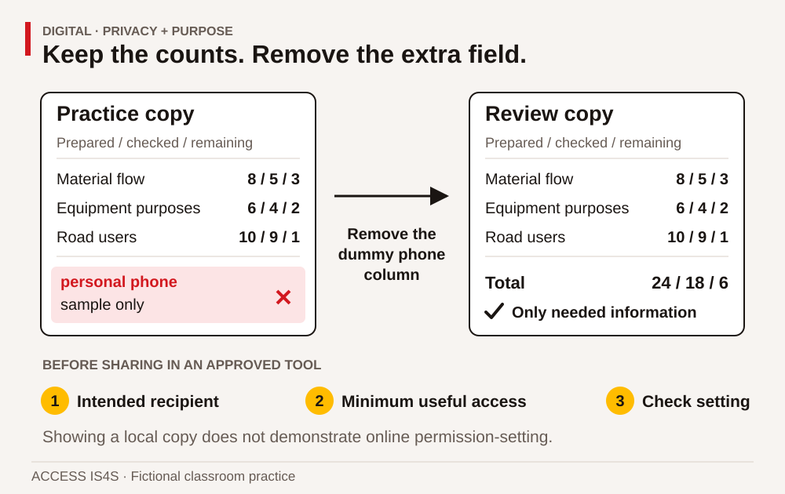
Read the visual description
A practice copy and review copy display prepared, checked and remaining counts for material flow, equipment purposes and road users. The dummy personal-phone field is removed from the review copy. The useful totals are twenty-four prepared, eighteen checked and six remaining. Sharing checks name the intended recipient, minimum useful access and tool setting; a local file view does not demonstrate online permissions.
DG-15 • Practise account-protection reasoning
Using no real credentials, explain the difference between reusing one password everywhere and keeping distinct credentials. Describe the purpose of a second verification factor and what you would do with an unexpected approval prompt. Then identify one current help page or approved support route you would consult before changing account security settings. You may use a supplied help-page copy. Do not create or display a real password, recovery code or security answer for this exercise.
Learn the next tool without starting from zero
Digital tools change. A button may move, a file format may differ or a workplace may use another application. Begin with what remains familiar: task, document, data, audience, save location and checking method. Then identify the part that changed. A useful learning note says what you tried, what happened and what you will test next. It does not label you as a “technology person” or “not a technology person.”
Help can come from an instructor, an application's help system, an official support page or a trusted colleague. A useful request includes the task, device or application, the step that failed, the message displayed and the attempts already made. Share a screenshot only when it contains no information that should remain private. You can describe the error instead. Ask before installing software, granting new permissions or changing a shared device's configuration.
DG-16 • Test a second method
Choose one action you already completed: opening a file, finding a word, enlarging text or producing a total. Learn a different supported method through the application's help or an instructor demonstration. Try it on a copy of your practice work. Compare the result with the original method and explain when each might be useful. Keep a short note showing the help source, action tried and result. A change in method counts as useful learning only when you check its effect.
DG-17 • Respond to a changed requirement
The fictional coordinator now needs a PDF view of the current card record for a reader who cannot open your spreadsheet. Keep the editable file and create a separate PDF using the tool's export or print-to-PDF feature. Open the PDF and check the title, all rows, totals and fictional-data label. If a column is cut off, adjust the output and check again. Explain what the PDF preserves and what editing or formula functions it does not provide in the same way as the spreadsheet.
DG-18 • Build a transfer plan from evidence
Choose a new low-risk task, such as keeping a fictional appointment table or finding a public training contact. Name which actions from this chapter would transfer, which part would need learning and what support you would choose. Demonstrate one transferable action on dummy data. In your learning note, identify a strength, an unresolved question and the next practice step. Separate this demonstrated action from any future workplace use you are proposing.
Keep the evidence and choose the next challenge
Your portfolio can contain the two card records, a source record, a navigation instruction, a review copy, an exported PDF and a short learning note. The instructor also needs observations of your actual device and online actions. Choose Not observed, Not yet demonstrated, Demonstrated with support or Demonstrated independently for each stated task criterion. Record the support used. These descriptions are local feedback, not official Digital levels.
For supported practice, use a prepared folder, large headings, a partially completed table and one demonstrated step at a time. For extension, use a second application, compare two official help routes or improve the navigation instruction after a different reader tests it. Increase the challenge by changing information, tool or audience, not by removing access supports that make the task usable.
Digital · create, revise and retrieve a useful record
Complete the form selected by your instructor on an approved device and application. You control the tool, using an agreed accessible interface. A partner may coach, but record their help. Paper planning can prepare the work; it cannot demonstrate the tool actions. Use only the supplied fictional values and a learning ID. No account creation, external sending, purchase or password disclosure is needed.
The resource coordinator needs a record of classroom items issued and returned. Outstanding = issued − returned. An outstanding item is not automatically lost or damaged; the record contains no such finding. The recipient needs resource names, quantities, version and fictional-data label, not personal contact information.
Form A · Resource-return record
If needed, scroll across this table. Keyboard: focus the table, then use the arrow keys.
| Resource | Issued | Returned |
|---|---|---|
| Folders | 18 | 13 |
| Rulers | 12 | 9 |
| Calculators | 7 | 4 |
Later update, to use only after saving the first version: Two more folders are returned. No additional items are issued, and the other returned counts stay unchanged.
CK-DG-A01 · Create and check
Create an approved practice folder named returns-A-[learning-ID]. In a spreadsheet or accessible table application, create columns Resource, Issued, Returned, Outstanding. Enter the three rows, calculate outstanding amounts and add totals for the three number columns. Use formulas or document a separate calculation method. Add a clear title, an in-document version 1 label and Fictional classroom data — not a loss or damage report. Check every source row. Save as returns-A-v1, close and reopen it from the known location. Show your own tool actions.
CK-DG-A02 · Change and verify the version
Apply the later update, change the in-document label to version 2 and save returns-A-v2 while retaining v1. Record which entry changed. Close the current file, locate both versions, open v2 and confirm its content using a row value and total. Explain why a filename alone cannot prove the contents are current.
CK-DG-A03 · Prepare a usable review copy
Duplicate v2 as a practice working copy. Add a column personal contact containing the literal words sample only in each data row. Never enter real contact details. Create a separate review copy that removes this unnecessary column while retaining the data, version/title and fictional label. Export or print the review copy to a local PDF. Open it and check all rows, totals, headings and labels for clipping or omission. Keep the editable source. If output is already complete, record the verification; do not invent a defect.
CK-DG-A04 · Explain and repeat an action
Show the location of the editable version and PDF. Explain what remains editable in the source that the PDF view does not provide in the same way. Demonstrate one second method for locating the file, finding a label or enlarging the view, using application help or an instructor demonstration if needed. Check that it achieves the intended result. Record the help and actual outcome.
Form B · Learning-room return record
If needed, scroll across this table. Keyboard: focus the table, then use the arrow keys.
| Resource | Issued | Returned |
|---|---|---|
| Clipboards | 16 | 10 |
| Tapes | 9 | 6 |
| Books | 11 | 8 |
Later update, to use only after saving the first version: Three more books are returned. No additional items are issued, and other returned counts stay unchanged.
CK-DG-B01 · Create and check
Create an approved practice folder named returns-B-[learning-ID]. Make columns Resource, Issued, Returned, Outstanding, enter all source rows, calculate outstanding values and totals, and add a descriptive title, an in-document version 1 label and Fictional classroom data — not a loss or damage report. Use formulas or document a separate calculation method. Save as returns-B-v1, close and reopen it from the known location. Show your own tool actions.
CK-DG-B02 · Change and verify the version
Apply the later update, change the in-document label to version 2 and save returns-B-v2, retaining v1. Record the changed entry. Close the current file, locate both versions, open v2 and verify a row value and total. Explain why the name alone does not establish the current content.
CK-DG-B03 · Prepare a usable review copy
Duplicate v2 as a working copy; add personal contact with sample only in each data row. Create a separate review copy without that unnecessary column. Retain useful data, version/title and fictional label. Export or print it to a local PDF, open it and check complete rows/totals/headings/labels. Keep the editable source. Record an actual correction or successful verification, not a manufactured fault.
CK-DG-B04 · Explain and repeat an action
Show both saved locations, explain editable source versus PDF view, and demonstrate a second method for finding the file, finding a label or enlarging the view. Use help if needed and record it. Check the result rather than assuming a shortcut worked.
My action record
If needed, scroll across this table. Keyboard: focus the table, then use the arrow keys.
| Action | File/location or result | Help used; who controlled the tool |
|---|---|---|
| Created and checked v1 | Write your response here. | |
| Closed and reopened v1 | Write your response here. | |
| Updated and verified v2 | Write your response here. | |
| Removed dummy contact field in review copy | Write your response here. | |
| Opened and checked PDF | Write your response here. | |
| Tested second method | Write your response here. |
These tasks show local application and file actions. They do not by themselves show online navigation, sending or actual online permission-setting. Record those actions separately only when they are performed in an approved environment.
Learner · ACCESS IS4S
Problem solving • Understand the issue, choose a response, check what happened
Problem solving is a process for making a decision when the next step is uncertain. It includes finding out what is happening, gathering useful information, considering more than one response, acting within your role and checking the result. It does not require having an instant answer. Sometimes the soundest next step is a specific question, a small test or a request to someone with the right responsibility.
People bring experience from work, learning, family and community responsibilities. That experience can suggest useful possibilities. It can also lead us to expect that a new situation has the same cause as an earlier one. In this chapter, experience is a starting resource, and evidence helps decide how well it fits the present case. You may draw on a personal example if you choose, or use every supplied fictional example without sharing private experiences.
The cases involve classroom scheduling, learning documents and a community information display. They use invented B.C. training situations, not the affairs of a Nation, employer or actual ACCESS cohort. There is no live equipment troubleshooting. When a real problem concerns machine safety, harassment, legal obligations or someone's immediate wellbeing, involve the responsible qualified person or established support process. A classroom decision exercise does not give a learner authority to resolve every kind of problem alone.
Six steps that can loop back

Read the visual description
An original task illustration occupies the left panel; six numbered actions appear on the right. A decision can improve as the evidence changes. Six connected components: Identify the issue; Gather information; Analyze the issue; Develop multiple routes; Address the issue; Evaluate effectiveness. Keep a record: issue · facts · unknowns · options · action · results. Return when new evidence changes the decision.
You may return to an earlier step when a new fact changes the picture. Returning to gather information is progress when it prevents an unsupported decision. Use the six components to keep both your reasoning and your next action visible.
If needed, scroll across this table. Keyboard: focus the table, then use the arrow keys.
| Component | Practical question | Main chapter evidence |
|---|---|---|
| 1. Identify the issue to be addressed | What is happening, to whom, and what needs to be different? | PS-01–PS-03 |
| 2. Gather information to help you address the issue | What do we know, need to know and need help to establish? | PS-04–PS-06 |
| 3. Analyze the issue | Which explanations fit the evidence, and which are still guesses? | PS-07–PS-09 |
| 4. Develop multiple routes of action | What different responses could meet the actual needs? | PS-10–PS-12 |
| 5. Address the issue | What will we do, who is responsible and what needs permission? | PS-13–PS-15 |
| 6. Evaluate the effectiveness of the solution or decision | Did the response help, for whom, and what should change next? | PS-16–PS-18 |
Use a simple record throughout: issue; known facts; missing information; options; chosen action and reason; result; next step. A drawing, voice note, table or supported written record can help you hold the process in mind. If the instructor is observing Problem solving, the quality of the reasoning matters separately from spelling, handwriting or confidence when speaking.
Turn a concern into a testable next step
A useful decision begins with a situation you can describe. It need not begin with blame or an instant answer. This short practice separates what is known, what is possible and what can be tried within the classroom.
Start with a small observation
Read this fictional note: “A learner opened two practice folders before finding the instructions. Both folders had the label ‘Practice’. We do not know which folder the learner was told to use.” Identify one observation, one unknown and one possible explanation. If you can already distinguish them, move to comparing options. Otherwise, work through the examples below.
Keep the evidence and explanation separate
Example: “Two folders were opened” is an observation supplied by the case. “The labels did not distinguish the folders” is supported by the two identical labels. “The learner did not care” is not established. “Were the intended instructions clear?” is a question, not a known fault.
Try with support: sort both labels say Practice, the wrong folder was opened on purpose, the spoken instruction may have been unclear, and we need to know which folder was requested into fact, unsupported claim, possible explanation and missing information. Discuss why a plausible explanation still needs checking.
Compare two ways to help
Use this goal: a new user should identify the requested folder without the designer choosing it for them. Two possibilities are a distinct name on each folder or a separate index showing which folder contains which material. Explain how each works, one effort or limitation, and what you would observe in a trial. Both could work; do not choose purely because another person prefers one.
Example prediction: “With distinct topic names, the user may select the requested folder by matching its name.” A checkable criterion is “The user selects the named folder and explains the label used.” No timing or emotional reaction is required.
Try a change and inspect its result
Make two dummy folders or folded paper covers named Schedule and Supplies. Ask a willing partner to find Supplies, using an agreed accessible way to read the labels. Record the actual choice and any help. If the partner asks what Supplies means, keep that question: the wording may need teaching or revision. Do not rewrite the result as independent success because the final choice was correct after help.
Ask what to retain, what to change and what another trial could show. A single successful selection does not establish that every future user will understand the arrangement. Record the conditions under which this person used it.
Fresh exit practice
Read a different small case: “Two paper trays are labelled ‘In’ and ‘Out’. A helper does not know which holds checked cards. The coordinator confirms that the tray currently called Out contains checked cards; the other holds cards awaiting a check. Both piles must remain separate.”
State the issue, propose two clearer labelling or checking options, choose one, label two paper areas and ask a willing partner where a checked card belongs. Record the choice, help and next decision. Possible labels are Awaiting check / Checked, or another equally clear arrangement. Do not change the coordinator's assigned status of the piles. The user test can reveal a need to clarify the word checked.
Keep your stated purpose, two options, actual change and honest result in the record. A useful next task is the fresh card-register case, where version information creates a further constraint. Do not claim an observed trial if only the plan was completed.
Define the issue without defining a person as the problem
“The learners do not care” is an interpretation of people. “Four of ten card sets used an older heading” is an observation that can be checked. The second statement gives a starting point for useful questions: which file was available, what instruction was given, how was the version shown, and when was the check made? A clear statement does not pretend people never make mistakes. It makes it possible to investigate the situation without beginning with an unsupported judgement.
Include the gap between present and needed conditions. Name the affected work and a boundary. For example: “The group has three working practice devices for ten learners, and each learner needs an individual tool turn within their available time.” That statement is more useful than “We need more money” because money is only one possible route. It also avoids choosing a solution before understanding the requirements.
A problem statement can acknowledge uncertainty: “We do not yet know whether loan devices will open the practice files.” An unknown is not a failure. Hiding it inside a confident recommendation can create a failure later. Put the unknown beside the decision it affects so the person responsible knows why checking it matters.
Case document A • A tool turn for every learner
Fictional planning brief — Thursday practice session
Ten learners need an individual digital practice turn. Each turn includes 20 minutes controlling a device and 5 minutes saving, reopening and checking the file, so allow 25 minutes per learner. Learners can work simultaneously on separate devices. Allow 5 minutes between groups to reset the classroom practice files. A partner watching does not count as that partner's own turn.
The original plan uses five devices from 09:00 to 10:00. Two devices have become unavailable for the class. Three remain available. A technician is responsible for the unavailable devices; learners are not asked to repair them.
Three learners must leave at 10:00. The other seven can remain until 11:00. The instructor and room are available until 11:00. Finishing everybody's turn by 10:00 is preferred, but completing a genuine turn within each learner's available time is required. The extra classroom budget is no more than $50.
The training office can reserve two compatible loan devices for $40 total, if confirmed by 08:30. A later room with six devices costs $60 and is available only from 10:00 to 11:00. Paper planning materials cost nothing extra and are already printed. All costs, times and arrangements are invented for this exercise.
Worked example 1 • Separate the issue from the first idea
A first reaction is “Buy two new devices.” Buying is a proposed action, not the issue. Read the brief again. The required outcome is an individual 25-minute device turn for all ten learners within their availability and the $50 extra budget. The original five-device plan needs two groups: 25 + 5 + 25 = 55 minutes, which fits 09:00–10:00.
With only three devices, ten learners need four groups: three, three, three and one. The device time is 4 × 25 = 100 minutes, with three 5-minute changes: 100 + 15 = 115 minutes. A four-group sequence can run 09:00–10:55 if the three learners leaving at 10:00 are in an early group. It does not meet the preferred 10:00 finish for everybody, but it can meet the mandatory availability requirement. That difference keeps a potentially workable option open.
PS-01 • Write a bounded problem statement
Write one or two sentences describing the issue in Case A. Include the learners affected and the required outcome. Leave out a preferred solution. Underline the information that comes directly from the brief and mark anything you are assuming. Explain why “the group is too large” does not yet identify the decision the coordinator needs to make.
PS-02 • Distinguish requirements from preferences
Make two columns: must meet and prefer if possible. Sort the individual tool turn, $50 maximum, each person's availability, everyone's 10:00 finish and use of a familiar device. The brief does not explicitly rank familiarity; identify that as something to discuss rather than quietly making it mandatory. Add one question that would help the coordinator understand learner access needs without asking for private personal explanations.
PS-03 • Identify people and responsibilities
List the learners, instructor, training office and technician. For each, explain one relevant need or responsibility using the brief. Identify who can reserve a loan device and who should address the unavailable equipment. Explain how learners could contribute to the plan without being expected to authorize spending or disclose why they must leave at a particular time.
Gather enough information for the decision
Gathering information is purposeful. You are not required to collect every fact that might exist. Start with the decision and ask which missing facts could change it. A device's colour is unlikely to matter here. Its ability to open the practice file, accessibility settings and reservation deadline may matter. Distinguish confirmed information from a suggestion that still needs checking.
Useful questions are specific and answerable. “Will this work?” can mean several things. “Can the two loan devices open the practice spreadsheet, and can we confirm the needed access settings before the session?” identifies what must be checked. A question about availability can allow a simple yes/no answer without asking someone to explain family, health, transport or community responsibilities.
Keep source and date beside important information. A room that was free yesterday may have been booked today. A remembered price may exclude an additional charge. For a real decision, use the responsible person's current confirmation or the current authorized document. The fictional brief gives fixed facts for this exercise; do not silently import a real provider's prices, policies or rules into it.
PS-04 • Create an information checklist
Make a checklist for comparing the three-device plan with the loan-device plan. Include information already supplied and at least three questions that could matter before real delivery, such as required access settings, how loan devices reach the room and who confirms the reservation. Mark each entry provided, needs confirmation or not relevant to this decision. Do not change the given classroom numbers while identifying real-world checks.
PS-05 • Ask without assuming
Draft three short questions: one to the training office, one to a learner about the usable schedule, and one to the instructor about the required evidence. Use a purpose statement so the person knows why you are asking. Then exchange questions with a partner acting from the brief. Notice any question that asks for information the case does not supply; record it as unresolved rather than inventing an answer.
PS-06 • Organize conflicting information
A fictional sticky note beside the room calendar says, “All learners can stay until 11.” The dated planning brief says three must leave at 10. Explain why choosing whichever statement makes your preferred plan easier is unreliable. Record the conflict, its effect on the schedule, the responsible confirmation route and the temporary assumption you will use until it is resolved. Continue using the brief's three early departures for the remaining classroom calculations.
Analyze causes, patterns and limits
Analysis connects facts without claiming more than they support. It can involve comparing rows, grouping possible causes, noticing a sequence or asking how a process works. A cause-and-effect diagram can group possibilities under headings such as information, tools, time, process and access. Those headings organize questions; they do not prove a cause.
A “why” question is useful when it opens an investigation. It becomes less useful when it forces every answer toward blame. Ask “What made the current version difficult to identify?” rather than “Why did someone ignore the correct version?” Do not keep asking “why” as though a fifth answer must be the truth. Stop at an evidence gap and name what would test the proposed link.
Watch for familiar thinking shortcuts. You might favour the explanation you first heard, notice only examples that support it, or trust the most confident speaker. Counter that by asking what evidence would make you revise your view. Invite a different interpretation before settling on a cause. A partner's question can improve a decision without making either person the winner or loser of a debate.
Case document B • Repeated card-label corrections
Fictional improvement record — classroom print station
During three practice sessions, learners printed ten card sets each session. The review found four sets needing a label correction in Session A, two in Session B and three in Session C. The group did not record each person's name; the purpose was to improve the process, not rank learners.
The instructor observed that both an older practice file and a current practice file were available in the same folder. Their names differed by only one letter. A spoken reminder was given, but no version example was displayed beside the print station. One learner said they selected the first result shown by the file search. Another said they used the file already open on the device. These observations suggest possible links but do not establish the cause of every correction.
For the next two sessions, the instructor placed the current practice file in a clearly named folder and displayed a version-check card. Session D had one corrected set out of ten; Session E had none out of ten. Different learners may have attended, and the record does not measure their prior experience. No comparison group used the old arrangement during the same period.
If needed, scroll across this table. Keyboard: focus the table, then use the arrow keys.
| Session | Sets reviewed | Sets needing label correction | Arrangement |
|---|---|---|---|
| A | 10 | 4 | Earlier arrangement |
| B | 10 | 2 | Earlier arrangement |
| C | 10 | 3 | Earlier arrangement |
| D | 10 | 1 | Revised arrangement |
| E | 10 | 0 | Revised arrangement |
PS-07 • Build explanations that can be tested
Identify three possible contributors to the corrections in Case B. For each, point to supporting information and state what remains unknown. Include at least one explanation concerning the information or process, not a learner's attitude. Do not claim that everyone used the older file. The record does not say that. Suggest a respectful way to learn more without collecting unnecessary personal information.
PS-08 • Use a cause-and-effect map
Create a map with the issue in the centre: some printed sets need label corrections. Use at least three headings such as file organization, instructions, display or checking process. Place known observations and untested possibilities in visibly different styles or labelled columns. Choose one proposed link and write a small, low-risk test. Explain which result would support the link and which would make you reconsider it.
PS-09 • Challenge a conclusion
A fictional colleague says, “The new folder proves that people were careless before.” Explain two problems with that conclusion. Then write a statement supported by the record and a question worth investigating. Compare your response with a partner's. Identify one assumption in your own first explanation that you revised after considering the other person's reasoning.
Develop options before selecting one

Read the visual description
Two proportional schedules compare tool turns for ten learners. Borrowing two devices makes five available: two groups of five take twenty-five minutes each plus a five-minute change, ending at 09:55 for $40, with confirmation by 08:30. Using three available devices makes groups of three, three, three and one, taking 115 minutes to 10:55 for no extra cost. The first three finish at 09:25. The maximum extra cost is $50; a later $60 room and paper-only work fail named constraints.
Options should be genuinely different ways to address the issue. “Tell people more firmly,” “give a stronger reminder” and “repeat the instruction louder” may be three versions of the same approach. A different option might change the file arrangement, provide a visible example, add a check before printing or allow a different way to access the instruction. Generate possibilities first, then compare their likely effects and constraints.
Mandatory criteria come before preferences. An option that cannot meet a required access need does not become suitable because it is cheap. An option outside the authorized budget needs a new decision by the responsible person; a learner cannot make the limit disappear by giving cost a low score. After checking requirements, compare useful preferences such as time, simplicity, travel or the amount of new learning needed.
A table can make your reasoning visible, but numbers do not make a judgement objective automatically. If you use ratings, explain their meaning and why a criterion matters. Keep uncertain entries marked as uncertain. A precise-looking total based on guessed ratings can hide the question that most needs discussion.
Worked example 2 • Compare the schedule options
For Case A, compare four routes. Two compatible loan devices cost $40 and restore five simultaneous places, so two groups finish by 09:55. Using only three devices costs no extra money and takes 115 minutes; early departures must be placed before 10:00. The later room costs $60, exceeds the stated budget and begins after three learners must leave. Paper-only work costs nothing but does not supply the required digital tool turn.
Two options remain feasible under the supplied facts: loan devices or a longer rotation with three devices. If the coordinator gives high priority to finishing the whole group before 10:00, the $40 loan plan fits that preference. If minimizing extra spending is the priority and a longer rotation is acceptable, the three-device plan can work. The recommendation must explain the trade-off instead of pretending there is only one possible answer.
PS-10 • Generate three routes
For Case B's label-correction issue, propose three different changes. Explain how each could help and what effort or check it would require. At least one option should change the information or workflow rather than relying only on an extra verbal reminder. Include an option proposed by a partner and identify what you learned from it. Do not select the final response until all three have been described.
PS-11 • Build a decision table
Compare the four Case A routes: loan devices, extended three-device rotation, later six-device room and paper-only replacement. Include extra cost, total device-session duration, early-departure access and whether the actual digital outcome is met. Mark required criteria separately from preferences. Recommend either feasible route with a reason based on the brief. If you recommend a route that needs a changed requirement, name the authorization or new information needed before it could become feasible.
PS-12 • Test your preferred option against a drawback
Take your preferred route from PS-11. Identify its strongest drawback and one situation that would make it unsuitable. A partner takes the role of a coordinator and asks one challenging but respectful question. Respond using evidence, or change your recommendation if the question reveals a real gap. Record the reason for keeping or revising the choice. Defending a first idea at all costs is not the purpose of this task.
Address the issue with a workable action plan
A decision becomes useful when someone can act on it. Record the action, responsible role, time, required confirmation and check. “We will communicate better” is too broad. “The coordinator will confirm the two loan devices by 08:30; the instructor will check the practice file before learners arrive; the group list will show each person's turn” gives people a clearer shared plan.
Keep within your role. A learner can propose, check classroom data and ask questions. Reserving equipment, spending funds or changing a real schedule may belong to a coordinator. A useful recommendation identifies that boundary rather than presenting a classroom suggestion as an approved decision. The same principle applies to community information: permission to learn about a topic is not automatically permission to publish someone's contribution.
Before acting, decide what would trigger a pause or a fallback. If loan devices do not arrive, when should the coordinator switch to the longer rotation? If a printed display contains an unapproved statement, who checks it before the display is used? A fallback should still meet the required outcome or clearly state which part must be rescheduled. It should not quietly lower the standard and call the work complete.
Case document C • A useful display with an unanswered request
Fictional classroom display brief
A group is preparing a public-information display for an open classroom afternoon. It explains the five-stage introductory paving process and how the nine Skills for Success appear in the learning activities. The display uses original learner diagrams and clearly labelled fictional data. The coordinator has approved a one-page explanation of the classroom project.
A visitor suggests adding a local community story and a photograph of participants to make the display more engaging. The group has no permission to use a particular story or photograph. One learner knows a person who might be willing to contribute, but has not asked them. The deadline is tomorrow. The existing approved diagram can be used without those additions.
The group wants an inviting display and respectful relationships. No learner is expected to speak for a Nation or community, reveal personal identity information, or provide cultural material to improve a class product. The coordinator can discuss a later community-directed contribution if the appropriate people choose to participate.
PS-13 • Write the action plan
Create a plan for your feasible Case A route. Include at least four actions, the responsible role, timing and a check. Make the group sequence clear enough to show how all ten people receive 25 minutes, including the three who must leave at 10:00. Identify the decision that belongs to the training office or coordinator. Your plan is a classroom proposal; do not contact or book anything outside the exercise.
PS-14 • Respond to a changed fact
At 08:35, the fictional office confirms that the loan devices are unavailable. Use the supplied room and learner availability to make a fallback plan. Show the four groups and their times, placing the early-departure learners appropriately. Explain what you would tell the group about the changed finish time and what would need reconfirming in a real class. Paper planning can occupy waiting time, but it cannot replace the required device turn.
PS-15 • Make a decision that respects permission
Apply the six-step process to Case C. Identify the immediate display decision, the facts and missing permissions, at least two possible routes and a justified action before tomorrow. Explain how the group could remain open to a future contribution without treating a possible personal connection as permission. Write a short recommendation to the fictional coordinator. Use the supplied case; no learner needs to provide a real cultural story or photograph.
Evaluate results and learn from them

Read the visual description
Dot arrays show nine of thirty sets needing correction before the change, or thirty percent, compared with one of twenty afterward, or five percent. The observed difference is twenty-five percentage points. The current folder and a version-check card were introduced, but different sessions, potentially different learners and no same-time comparison group limit causal claims.
Evaluation asks whether the response achieved its intended purpose, what else happened and what should be done next. Decide what evidence you will collect before trying the change. In Case A, useful evidence includes whether every learner actually controlled a device, whether files were saved and reopened, whether departures were respected and whether the cost stayed within the limit. A full attendance list alone does not answer those questions.
Look at the denominator when comparing counts. One correction out of ten sets is different from one out of a hundred. Keep the observation period and conditions visible. A change seen in a small classroom trial can be promising without proving that the same result will occur in every class. Learner feedback may reveal an access problem that a numerical average hides.
Worked example 3 • Compare the correction record carefully
Before the revised arrangement, Case B records 4 + 2 + 3 = 9 corrections among 10 + 10 + 10 = 30 reviewed sets. The proportion is 9/30 = 0.30 = 30%. After the change, there is 1 + 0 = 1 correction among 20 sets: 1/20 = 0.05 = 5%. The difference is 25 percentage points, because 30% − 5% = 25 percentage points.
A supported statement is: “The recorded correction proportion was lower in the two sessions using the revised arrangement.” It is too strong to say the folder change alone caused the improvement or that the problem can never return. The record includes different sessions and possibly different learners. Continue checking versions, ask whether the process is usable and review another trial before making a broader claim.
PS-16 • Define success and inspect the evidence
For your Case A plan, write four observable success checks. Then consider this invented result: all ten learners attended; nine saved and reopened a file independently or with recorded support; one learner watched a partner but did not control a device. The cost was $40 and everyone left within their availability. State which criteria were met, which remain unmet and what follow-up is needed. Do not turn attendance into proof of the missing individual turn.
PS-17 • Evaluate and improve the print-station trial
Use Case B's data to calculate the before and after correction proportions. Write a two-sentence interpretation that includes one limitation. Add one question for learner feedback and one next observation that would help evaluate the revised process. Explain why asking whether the folder and version card were usable is different from asking who was careless. Preserve both the numerical result and the people affected by the process.
PS-18 • Transfer the method to a new situation
Choose one supplied new issue: a fictional classroom bus-time notice has two different departure times, or a practice supply list contains an item with no quantity. Apply all six steps using a small invented document you label as practice. Identify at least one fact you would need from the responsible person before acting. Explain which step from this chapter helped most and show the record of your reasoning. A planned future workplace use should be recorded as a plan, not as demonstrated transfer at work.
Put a chosen change into practice

Read the visual description
A four-step cycle begins with a prediction and reason, continues with a small trial under recorded conditions, then records observable actions and help needed before deciding whether to keep, adjust or retest. An example distinguishes an observation, the reader opened two folders, from a possible explanation, the label was hard to find.
Use the kit prototype work in CI-10–CI-15 to carry a problem-solving decision through an actual classroom trial. Before building or revising, keep your own issue statement, two possible responses, chosen action and prediction. State what a useful result would look like. Then identify the change you actually implement, give a willing user the task and record what they do, including any support.
Compare the observation with your criterion. Retain or revise the change for a stated reason and choose another check. Distinguish help you received as the designer from prompts you gave the test user. A supplied case result is an example; your own trial record describes what actually happened. One small trial does not prove that a change works for everyone or that it alone caused a difference. The same work can provide Creativity and Problem solving evidence when the record identifies the individual actions for each.
Your evidence and next practice
Keep the problem statement, information checklist, cause map, options table, action plan and evaluation. These records show how your thinking changed; a final answer alone may hide the strongest part of your learning. You can record a question you left unresolved when the available evidence was insufficient. That is useful evidence of judgement when you also identify an appropriate next step.
For support, work with fewer options, highlight the mandatory criteria, use counters for the learner groups or ask an instructor to model one question. For extension, add one clearly labelled changed fact and test whether the recommendation still holds. Increase the reasoning challenge gradually. The local feedback descriptions are Not observed, Not yet demonstrated, Demonstrated with support and Demonstrated independently; record support and transfer separately rather than awarding a made-up official level.
Problem solving · choose a change, try it and examine the result
Use the form selected by the instructor. These are classroom materials problems. You may make labels, trays or paper arrangements; you may not change the source cards, remove their version information or claim a practice document authorizes a real procedure. Use no personal data. Work on a problem statement and options yourself before discussing them with a partner.
The complete task can use ordinary paper, removable labels and two or three marked spaces on a desk. No computer, purchase or real workplace change is required. If a willing test user is unavailable, arrange an instructor-supported walkthrough and label its support accurately. Do not invent an independent user result.
Form A · Find the current practice pair
A learning room keeps loose practice cards in one mixed pile. A new user must find the current Sheet and Check card for a named kit. Both cards must match the current register. The instructor reports that older cards have sometimes been selected, but supplies no count or proven cause. The user needs a clear arrangement that can be reset after a kit changes.
Current register A
If needed, scroll across this table. Keyboard: focus the table, then use the arrow keys.
| Kit | Current version | Required pair |
|---|---|---|
| R · Reading practice | 2 | Sheet and Check |
| N · Number practice | 3 | Sheet and Check |
| C · Conversation practice | 1 | Sheet and Check |
Copy each cell below onto a separate dummy card. The words and codes are the entire card content for this task.
| Card | Card |
|---|---|
| R — Sheet — version 2 | R — Check — version 2 |
| R — Sheet — version 1 | R — Check — version 1 |
| N — Sheet — version 3 | N — Check — version 3 |
| N — Sheet — version 2 | N — Check — version 2 |
| C — Sheet — version 1 | C — Check — version 1 |
Keep all ten cards; older cards must be retained in a clearly separate practice area rather than destroyed. Any design must work without colour, use the register as the authority, and let a user find the correct pair without the designer choosing it for them. The user may use agreed reading/access supports, recorded in the test.
CK-PS-A01 · Define and investigate
State the desired result, observed or reported issue, two constraints and an important unknown. Distinguish the instructor's report from something you have observed yourself. Inspect the cards/register. Identify two possible explanations for wrong selection and what observation could help investigate each.
CK-PS-A02 · Compare and predict
Propose at least two distinct organizing or checking methods. Explain how each could help and one drawback. Choose a first change and state your reason. Before building, predict what a user will be able to do. Set a checkable success criterion: selecting both current cards for the requested kit, with any support visible. Do not require speed unless you separately agree a meaningful purpose for measuring time.
CK-PS-A03 · Put the decision into use
Build your chosen arrangement using all supplied cards and the current register. Ask a willing user: “Find the current Sheet and Check pair for kit R, then show how you checked the version.” Give them the register and agreed access supports. Observe without choosing the cards for them. Record their actual selection, verification action, questions and any help you supplied. If you intervene, record the point and reason. The trial still provides useful information.
CK-PS-A04 · Evaluate, revise and retry
Compare the observation with your criterion. Retain what worked and revise one feature if evidence suggests a need; if the arrangement already works, document the evidence and choose an additional check. Test kit N with a willing user or supported walkthrough. Record the current pair selected and how it was checked. Explain one limitation: a different kit, prior exposure, a different user or changed support may affect the comparison. State a useful next action without claiming your design alone caused all differences.
Form B · Find the approved practice pair
A classroom desk keeps practice cards in one mixed pile. A user must find the approved Brief and Review card for a named kit, using the current register. A helper reports that draft cards have sometimes been mistaken for approved ones, but provides no count or proven explanation. A later version number is not automatically the approved version.
Current register B
If needed, scroll across this table. Keyboard: focus the table, then use the arrow keys.
| Kit | Approved version | Required pair |
|---|---|---|
| H · Handover practice | 1 | Brief and Review |
| T · Time practice | 4 | Brief and Review |
| W · Writing practice | 2 | Brief and Review |
Copy each cell onto a separate dummy card.
| Card | Card |
|---|---|
| H — Brief — version 1 | H — Review — version 1 |
| H — Brief — version 2, draft | H — Review — version 2, draft |
| T — Brief — version 4 | T — Review — version 4 |
| T — Brief — version 3 | T — Review — version 3 |
| W — Brief — version 2 | W — Review — version 2 |
Retain all ten cards in your arrangement, separating unapproved/older cards clearly. Work without colour-only cues, keep source wording/version labels intact and give the user the register. Use no personal information. The designer must not choose the answer for the user.
CK-PS-B01 · Define and investigate
State the desired result, reported issue, two constraints and an unknown. Distinguish report from observation. Identify two possible explanations for wrong selection and an observation that could investigate each.
CK-PS-B02 · Compare and predict
Develop two distinct approaches, with a possible benefit and drawback for each. Select one with a reason. Predict the result before building and specify the criterion: both approved cards for the requested kit, with the actual verification method and support recorded.
CK-PS-B03 · Put the decision into use
Build the arrangement. Ask a willing user: “Find the approved Brief and Review pair for kit H, then show how you checked its approval.” Give the register and agreed access supports. Record actual selections, checks, questions and any help. Do not silently replace a draft card or supply a correct result in the observation record.
CK-PS-B04 · Evaluate, revise and retry
Compare the observation with the criterion. Make an evidenced improvement or document why the arrangement should be retained. Test kit T, observing the selection and approval check. State what happened and one limit on the comparison, including changed kit/user/support or practice effects. Choose a next action rather than promising universal success.
My trial record
| Stage | My evidence |
|---|---|
| Issue, required outcome, constraints and unknown | Write your response here. |
| Two options, drawbacks and selected reason | Write your response here. |
| Prediction and criterion written before trial | Write your response here. |
| Action I actually implemented | Write your response here. |
| Trial 1: exact cards selected and check performed | Write your response here. |
| Support to me / support I gave the user | Write your response here. |
| What I retained or revised, and why | Write your response here. |
| Trial 2: exact cards, check and support | Write your response here. |
| Limited conclusion and next action | Write your response here. |
Reuse an idea-development trial
You can also use the kit prototype work in CI-10–CI-15 as an enacted problem-solving cycle. Keep your own issue statement, two options, choice/prediction and implemented change. Add the actual reader-test record, support, comparison with your criterion and next decision. Cite the precise action that supports each skill; a finished kit alone does not demonstrate the reasoning or the trial. Supplied case results remain examples, separate from observations you collect.
Learner · ACCESS IS4S
Communication • Make room for the message and check understanding
Communication involves receiving, considering and sharing information so people understand what needs to happen. It includes noticing uncertainty, asking a useful question, explaining the purpose and making room for the other person to respond.
You bring ways of communicating from your experiences, relationships, languages and responsibilities. Other learners bring their own. This classroom does not treat one accent, speaking pace, eye-contact pattern or way of sitting as proof of respect or competence. We will look for understanding and useful interaction. You may use speech, sign, augmentative and alternative communication, text or another agreed accessible mode. Identify the mode and support in the learning record.
In B.C., a training group may include First Nations, Métis and Inuit learners from different places, including people whose Nations are outside the province. No one person can explain how every Indigenous person communicates. Ask about the needs of this conversation and this person. You can share an experience if you choose; you can also use the fictional cases throughout. Personal stories, cultural knowledge and identity explanations are not required contributions.
All cases, people, times and arrangements are invented classroom examples. The asphalt content introduces equipment purposes, not live operating procedures. Practise with a clear purpose and opportunities to pause, receive feedback and try again.
Six connected components

Read the visual description
An original task illustration occupies the left panel; six numbered actions appear on the right. Build shared understanding together. Six connected components: Listen with intention; Listen to understand; Speak with clarity; Speak with purpose; Adapt to audience + context; Adapt modes + tools. Speech · sign · text · AAC · another agreed accessible mode. Observe understanding, not a preferred communication style.
The six components below help you receive and share meaning. Use appropriate communication modes to demonstrate each purpose.
If needed, scroll across this table. Keyboard: focus the table, then use the arrow keys.
| Component | What you practise | Main evidence |
|---|---|---|
| 1. Listen with intention | Prepare to receive the message and attend to its purpose. | CM-01–CM-03 |
| 2. Listen to understand | Paraphrase, distinguish facts from assumptions and clarify. | CM-04–CM-06 |
| 3. Speak with clarity | Organize the message and use words the recipient can understand. | CM-07–CM-09 |
| 4. Speak with purpose | Make the reason, request or next step clear. | CM-10–CM-12 |
| 5. Adapt to your audience and contexts | Consider what this audience knows and needs without stereotyping. | CM-13–CM-15 |
| 6. Adapt to other people's different communication modes and tools | Agree a usable channel, pace and check-back method. | CM-16–CM-18 |
A shared product does not show every person's communication. Each learner needs turns sending and receiving a message. A written summary may help, but do not use its spelling or length as the only evidence of listening. The instructor can observe a paraphrase, a selected response, an appropriate action in the simulation or a clarification exchange. Recording is optional and requires agreement; live observation also provides evidence.
Communication route card
Core route. Begin with a purpose and usable mode. Practise a check-back, clarification and contradiction repair with CM-01/02/04/05/06. Use CM-08/11/12 for an instruction, call and handover; then CM-14/15/16/18 for assumptions, audience choices and a changed-mode exchange. Take both sender and receiver turns in CK-CM. Keep the source/version, essential details confirmed and the actual question/response.
Support route. Use a familiar chapter source first, a key-detail organizer with headings but no completed answers, a learner-controlled communication tool, agreed interpretation or an instructor counterpart. Rehearse “What is the current room/time?” or another learner-chosen clarification. If an instructor supplies a phrase or points to the missed answer, record that support on the relevant criterion. Reduce unrelated writing; let the receiver show meaning through a check-back, selected details or an appropriate action. No speed or eye-contact target is added.
Retry route. Choose the missed action, receive feedback and try it again with the familiar source. If the next goal is unfamiliar reception, use held CK-CM Card C only when it is genuinely unseen by the receiver. Record prior exposure honestly; otherwise arrange another checked message. Compare the essential details and how the uncertainty was resolved, not how confident the learner looked.
Chapter coverage map: preparation CM-01/02/05/07/10/13/14/15; guided/observed practice CM-03/04/06/08/09/11/12/16/17/18. Combine activities only when their distinct actions remain visible. A single receiver turn does not supply the sender evidence.
Next-attempt agreement: criterion ; message/version ; sender/receiver role ; mode/language ; access and task support ; observer/date ; evidence still missing ___.
Listen with a reason
Listening with intention begins before the words arrive. Ask what you need to learn from the message. Are you receiving a change in location, hearing a concern, comparing a proposal or deciding what question to ask next? Knowing the purpose helps you identify the important details. It also helps you avoid preparing your own reply while the other person is still explaining the issue.
Check the setting. Background noise, overlapping talk, small text, an unfamiliar term or a weak connection can interrupt understanding. You can ask to move to a quieter classroom position, receive a written key point, use captions, slow the pace or repeat a section. These are communication strategies. They are not admissions that you are incapable of learning. The speaker also shares responsibility for making the message usable.
Attention can be shown in different ways. A person may look at a diagram, use a communication device, take notes, pause before responding or look away while processing. Do not infer attention from eye contact alone. Check understanding through the response. A useful phrase is “I want to make sure I have the change right. Could we go through the time and location once more?”
Case document A • A classroom change that needs to reach everyone
Fictional coordinator message
“For Thursday's classroom session, meet in Room 2 at 10:00, instead of Room 1. The session ends at 10:45. Bring your learner workbook and a pen. The equipment-card activity stays indoors; we are not visiting a worksite. Printed copies of the process map will be available in Room 2. If the room change creates an access issue, tell the instructor through the usual course contact so an arrangement can be discussed. You do not need to explain private details to the whole group.”
Context for the sender: Some learners may have seen an earlier notice showing Room 1. Your immediate purpose is to communicate the current classroom arrangement. You have not been given information about bus departures, parking, meal arrangements or attendance consequences. Do not invent those details when a listener asks.
For an activity focused on receiving a message, the instructor may read the message or provide it in the receiver's agreed accessible mode. A receiver who has already studied the printed version should say so; the instructor can use a different comparable message for a later listening observation. Reading the script is useful preparation, but it is different evidence from understanding a newly received message.
CM-01 • Identify what you need to listen for
Before receiving Case A, identify three kinds of information you would need to carry out its purpose. Then receive the message in your agreed mode and identify the actual purpose. Separate the details supplied from questions you still have. A short spoken response, a few selected labels or a diagram can show your understanding; an extended written paragraph is unnecessary for this listening task.
CM-02 • Prepare a usable conversation
With a partner, identify one possible classroom barrier to receiving Case A and agree one adjustment. For example, take turns without overlapping, provide a clear view of the relevant text, reduce background noise or allow time for a communication device. Practise asking for the adjustment respectfully. State what you will use to check understanding afterward. Do not simulate a disability or assign one to your partner.
CM-03 • Show attention through a useful response
Partner A sends the Case A message in the agreed mode. Partner B receives it, then identifies the main change and asks whether one chosen detail was understood correctly. Swap roles using this second message: “Tomorrow's practice discussion starts at 13:00 in the same classroom. Bring the revised card record. The instructor will provide printed copies for anyone who needs one.” Observe the response, not whether the listener copied a particular posture or expression.
Listen to understand, then check

Read the visual description
Three speech bubbles demonstrate sending Thursday, Room 2, 10:00–10:45; restating those details; and confirming their accuracy. A dashed return path asks partners to correct a mismatch and check again. The accompanying reminder includes workbook and pen, indoor activity, printed maps and the usual route for access questions.
Understanding means more than remembering isolated words. Connect the details to the speaker's purpose. In Case A, the room change matters because someone following the earlier notice could go to the wrong place. The statement that the activity stays indoors limits what the listener should assume about equipment or travel. The access-contact instruction offers a private route without promising a particular adjustment before it is discussed.
Paraphrasing means expressing the message in your own words while keeping its meaning. It is not adding what you think the speaker should have said. A useful check-back is short enough for the sender to confirm or correct. You can then ask about an unresolved detail. Confirmation is a two-way action: the sender needs to notice whether the paraphrase is accurate, not simply say “yes” to finish the conversation.
Questions can clarify meaning, detail or action. “Which room?” asks for a missing detail. “When you say ‘revised record,’ do you mean version 2?” checks a term. “Should I wait for confirmation before sharing this change?” asks about a next step. Choose the question that would change what you do. Asking ten unrelated questions can make an important uncertainty harder to see.
Worked example 1 • Paraphrase without expanding the promise
A careful listener says: “Thursday's indoor card activity is now in Room 2, from 10:00 to 10:45. I should bring the workbook and a pen, and printed maps will be there. Have I got that right?” The sender checks those details and confirms them. The listener then asks: “Which course contact should someone use to discuss an access issue?” The case says the usual contact, but does not name it, so the sender should identify the approved classroom contact or ask the instructor to confirm it.
An inaccurate paraphrase would be: “Everyone has to arrive early, all access arrangements are already approved, and there will be a bus.” Those claims were not in the message. Good intentions do not make them reliable. Keep a clear boundary between the message received, a reasonable question and an answer that still needs confirmation.
CM-04 • Paraphrase and confirm
Receive Case A or an instructor-provided comparable message. Give a concise paraphrase that preserves the purpose and at least four relevant details. Invite correction. The sender identifies anything changed or missing, and you revise your paraphrase. Record one correction if needed. If the first paraphrase is accurate, explain how the sender checked it against the message rather than merely agreeing politely.
CM-05 • Ask the question that matters
A fictional learner asks, “Will transportation be provided?” The message does not say. Practise a response that distinguishes known information from an unanswered question and identifies who should confirm it. Then ask two useful clarification questions about Case A: one about a practical detail and one about the next action. Avoid a question that asks another learner to disclose a private reason for needing an arrangement.
CM-06 • Resolve a contradictory message
You hear a partner say, “The class is still in Room 1 and goes until 11:00.” Use Case A to check the discrepancy. Respond without labelling the partner careless or dishonest. State the conflicting details, identify the current source you are using, and ask to verify together. End with an agreed message or an explicit unresolved question for the instructor. Do not leave the exchange with two conflicting versions silently circulating.
Speak with clarity: organize before you deliver
A clear message gives the listener a route through the information. Start with the main point, then the details needed to understand or act. Use short groups of related ideas. Explain an unfamiliar word when it first matters. A pause can make room for processing, a question or an accessible response; it does not have to be filled with more information.
Plain language preserves accuracy. “The screed helps control the thickness of the layer being placed” is clearer for a new learner than unexplained specialist language. It does not mean the speaker should invent a simplified operating rule. If the recipient needs technical detail beyond your knowledge or role, identify that boundary and refer the question to the qualified instructor.
Check reference words such as “it,” “that” and “over there.” They may be clear to someone standing beside you and unclear to a person on a phone or using a text version. Name the item or location. If a sequence matters, use numbered steps or clear transition words. Avoid packing a change, an exception and a new request into one long sentence.
Case document B • Two people understood different tasks

Read the visual description
Six original equipment silhouettes show E2 crusher and screen reducing and separating material by size; E3 asphalt plant preparing the specified mixture; E4 haul truck moving paving material; E5 paver receiving mixture and moving it to the screed; E1 screed helping control layer thickness; and E6 roller compacting placed material. The broad flow is pit or quarry, plant, haul, place and compact. The screed is shown with the paver, not as an additional broad stage.
Fictional pair activity
The task sheet says: “Arrange five stage labels in process order. Add one short purpose under each. Both partners explain one connection. Keep the equipment cards beside the map so you can check terminology.”
One partner arranges the stage labels. The other begins sorting the six equipment cards into a separate row. The first says, “You are doing the wrong thing.” The second replies, “I thought you wanted all the cards put in order. You did not say which cards.” Both want to finish the activity, but neither has checked the shared instruction aloud.
The stage labels are pit or quarry, plant, haul, place and compact. The equipment cards describe different pieces of equipment or components; there are six cards, so they are not a second identical five-stage sequence. The task is an introductory classroom explanation, not an equipment operating sequence.
Use these six introductory equipment-purpose cards for the role-play. Copy the rows onto separate cards if helpful.
| Card | Purpose |
|---|---|
| E1 · Screed | Helps control the thickness of the asphalt layer being placed. |
| E2 · Crusher or screening plant | A crusher reduces material size; a screen separates material by size. |
| E3 · Asphalt plant | Prepares the specified asphalt mixture. |
| E4 · Haul truck | Moves paving material between the supply point and work area. |
| E5 · Asphalt paver | Receives mixture and moves it toward the screed during placement. |
| E6 · Compaction roller | Compacts the placed material. |
The immediate communication problem is a different interpretation of the task. A useful response names the shared goal and checks the document: “I think we have understood ‘cards’ differently. The sheet asks us to order the five stage labels and use the equipment cards to check terms. Can we read that line together?” This gives both people a way to revise their understanding without deciding whose personality caused the mismatch.
CM-07 • Explain a term for a new learner
Choose aggregate, haul, paver or compact. Use these introductory meanings: aggregate is mineral material such as sand, gravel or crushed stone; haul means move material between places; a paver places asphalt mixture as part of the paving process; compact means make the placed material denser through the appropriate technical process. Give a short explanation in ordinary language and one classroom example. Invite a question. Do not add operating settings or safety distances.
CM-08 • Give a clear three-step instruction
Use Case B to make a three-step instruction for the pair activity. Identify the correct cards, the expected result and each person's contribution. Send it to a partner who has not arranged the map yet. Ask them to restate the steps before carrying them out. Improve a phrase that could be misunderstood. If both people already know the task, change the card order or use another supplied classroom task for a fresh check.
CM-09 • Repair the unclear reference
Rewrite this message for someone receiving it by phone: “Put those there, use the other ones to check it, and then tell them what it means.” Supply the intended names from Case B and make the recipient and purpose clear. Deliver your revised message in the agreed mode, then ask the listener what they would do. Notice whether your words alone provide enough information without pointing at objects the listener cannot see.
Speak with purpose: what does the listener need to do?
Messages can inform, request, explain, propose, confirm or raise a concern. More than one purpose may appear in a conversation, but the main purpose should be easy to identify. “I am letting you know” differs from “I need your decision.” A listener should not have to guess whether you want action, agreement or simply awareness.
For a request, name what you need, why it matters and when a response would be useful. Avoid promising authority you do not have. “Could the coordinator confirm which version we should use?” is different from “I have approved this version.” For a handover, say what is completed, what remains uncertain and who is taking the next step. This protects continuity when people work at different times or through different channels.
Tone matters, but it does not replace the facts. A calm message can still be unclear, and a person under pressure may have an important concern even if their delivery is uneven. Focus first on understanding the issue and agreed next action. You can ask to pause, involve the instructor or use another channel if the exchange becomes unproductive. Classroom practice should not require reenacting a personal conflict.
Worked example 2 • Turn a vague complaint into a useful request
Vague message: “The files are a mess, and nobody can do this.” The listener may not know which files, what task is blocked or what help is needed. A clearer practice request is: “I am preparing the card-count handout. I found two files labelled version 2 with different totals. Could you confirm the approved file before I print? I have paused the print step and can show both records.”
The revised message gives context, observed problem, requested action and current status. It does not assign blame or guess which file is correct. If the recipient cannot approve the file, the next question is who has that responsibility. The message remains useful even when the answer is “I need to check.”
CM-10 • Match purpose and wording
For each situation, name the main purpose and draft a two-sentence message: tell a partner the room has changed; ask the instructor to confirm a file version; propose a clearer heading for a visitor sheet. Include the response needed, if any. Compare the messages and explain why the same wording would not suit all three. A request should not be disguised as a statement that the decision has already been made.
CM-11 • Practise a short clarification call
In a role-play, one learner calls the fictional training office to ask whether the card activity is indoors and which room is current. The office role has Case A and may answer only from that information. Open with purpose, ask the questions, listen to the answers and check back the key details. Close by identifying any remaining question. Swap roles. No real phone call is required; do not invent transportation, eligibility or attendance rules.
CM-12 • Give a useful handover
Use this invented status: the material-flow cards are printed; the equipment-purpose cards are checked but not printed; the room sign still shows the old location; the instructor needs to confirm who can replace the sign. Give the next learner a handover that separates completed work, remaining work and the decision needing confirmation. Ask them to identify their understood next step. A clear handover should not quietly authorize them to alter a real sign or room arrangement.
Adapt to the audience without making assumptions about them
Audience awareness begins with purpose and relevant knowledge. A new learner may need a term explained. An instructor reviewing the same work may need the evidence and the unresolved question. A visitor may need a short overview and a route to further information. Ask what the person needs rather than assuming it from appearance, age, identity or a guess about their background.
Intercultural communication includes noticing your own interpretations. A pause might mean someone is considering the question, using a communication tool, waiting for their turn, unsure of a term or choosing not to answer. A brief reply might be enough for that task. Describe what happened before explaining what you think it means. Then seek clarification in a way that allows the other person to choose what to share.
A person's cultural knowledge is not a classroom resource automatically available on request. If a project needs a specific community perspective, the instructor or coordinator should arrange an appropriate relationship and permission process with the relevant people. A learner may volunteer a perspective, but that contribution should not be treated as representing an entire Nation or giving permission for public use. For this chapter, the fictional cases provide all the content needed for practice.
Case document C • One message, different access needs
Fictional open-classroom planning note
The group will explain its introductory paving process map to visitors. Some visitors are new to trade vocabulary. One visitor asks for key points in writing before the discussion. Another asks the speaker to face the group and avoid talking over other people so the conversation is easier to follow. A third will join through an online connection and wants the diagram described rather than referred to as “this bit here.”
No visitor has asked learners to guess a medical condition or cultural preference. The group can respond to the stated communication needs. The planned message is: mineral materials can come from pits or quarries; an asphalt plant prepares the specified mixture; hauling moves it to the work area; a paver places it; compaction follows as part of the technical process. The display is introductory learning, not operating guidance.
The coordinator asks the group to keep the explanation to about one minute, leave time for a question and offer a clear next contact for detailed technical questions. The classroom instructor is the appropriate first contact for this exercise. The group may use a written key-point card, the labelled diagram and a spoken or otherwise accessible explanation.
Worked example 3 • Change the delivery, preserve the meaning
For a new visitor, begin: “This map shows five broad stages in a basic paving example. We start with mineral materials, then prepare and move the mixture, place it and compact it.” Point to or describe the numbered stages, explain one unfamiliar word and invite a question. For the instructor, a useful version might begin: “Our map uses five introductory stages. We checked the equipment-purpose wording against the lesson sheet and kept operating settings out of the display.” The core information remains consistent, while the purpose and detail change.
For a remote listener, replace “look at the red box” with “stage three, labelled Haul, means moving the mixture to the work area.” Colour can support the visual but should not carry the only meaning. For someone using a written key-point card, allow time to read and ask whether the sequence is clear. Do not mistake a different response pace for a lack of interest.
CM-13 • Make two audience versions
Prepare a short explanation of the same five-stage map for a new learner and for an instructor reviewing accuracy. Identify the purpose of each version and what knowledge you are assuming. Deliver both versions to a partner taking the relevant role. Ask what was clear and what needed explanation. Revise one feature while keeping the technical meaning and limits consistent.
CM-14 • Separate observation from interpretation
Consider this fictional exchange: a learner pauses for several seconds after a question and looks at the printed map. Someone says, “They are not interested.” State what was actually observed, give three possible interpretations and suggest a respectful clarification. Choose a response that allows time or another mode without diagnosing the person. Explain why a single behaviour cannot establish someone's attitude or a rule about their culture.
CM-15 • Ask about the conversation, not a stereotype
Revise these questions: “People from your community always prefer stories, right?” and “Why won't you look at me when I speak?” Make them relevant to the present task, with room for choice. Then practise asking a partner which information and communication format would help them review the process map. The partner may answer briefly or choose the supplied Case C preferences. No one has to describe their community or personal history.
An approximate one-minute message is a guide to the amount of content, not a speed test. Agree additional time for interpretation, AAC, signing, reading, processing or another access need. Check the intended meaning and the exchange; do not treat a faster response as stronger communication.
Adapt the mode and keep the interaction two-way
A communication mode is a way of exchanging meaning, such as speech, sign, text, symbols or an augmentative communication system. A tool supports that exchange, such as a phone, caption display, shared document or communication device. Ask which mode and tool work for the task and the people involved. Do not assume that access to a tool guarantees that a conversation is accessible.
Allow response time. Speak or present one meaningful section at a time, then make space for a reply. In a text exchange, make the question and requested response visible. In a meeting, identify the speaker and avoid several people speaking at once. If captions or a connection fail, pause and agree a way to continue rather than pretending everyone received the missing information.
Check the message after a change of mode. A phone explanation may need a written reference number; a diagram may need a description; a written update may need a short interaction to resolve ambiguity. Keep only the record needed for the task. Do not record, photograph or circulate another person's contribution without the agreed purpose and permission. A live demonstration can be assessed without storing personal audio or video.
CM-16 • Practise an agreed accessible exchange
Work with a partner using modes each person chooses. One person requests the current room and start time; the other answers from Case A. Agree how each will signal a turn, request repetition and confirm understanding. Demonstrate the exchange, then swap roles. You may use written messages, speech, AAC or another available mode; do not imitate another person's disability. The observer records whether both people could send, receive and clarify the actual message.
CM-17 • Recover a missing part of the message
Simulate a connection interruption by having the sender deliberately omit the room number from this practice message: “The session begins at 10:00 in … and ends at 10:45.” The receiver identifies the missing information and requests it through an agreed alternate route. The sender supplies Room 2 and checks the complete message. Explain how you would distinguish a successful technical connection from actual understanding of the content.
CM-18 • Complete a changed-mode handover
Begin with the CM-12 handover as a face-to-face or agreed live exchange. The instructor then changes the task: the next learner must receive it through a short written or otherwise accessible remote message, followed by a question-and-response check. Adapt the message, preserve completed/pending/confirmation-needed distinctions and test it. Record one change that helped the recipient. Identify a new work or learning situation where the same strategy might help, without claiming that future transfer has already occurred.
Reflect on evidence, not personality
Keep an example of a paraphrase, a useful clarification, a plain-language explanation, a purpose-focused request and an adapted message. An observer's note should describe what happened: “Asked which version was current and repeated the confirmed room/time.” Avoid labels such as “good attitude,” “natural speaker” or “poor communicator.” Those labels obscure the next practice step.
For supported practice, use a short script, a visual checklist, a private instructor partnership or more response time. For extension, change the audience or introduce one missing detail while preserving a clear purpose. Give specific feedback and repeat the interaction. The local descriptions Not observed, Not yet demonstrated, Demonstrated with support and Demonstrated independently describe evidence under stated conditions; they are not official Communication proficiency scores.
CK-CM · Send, receive and check a fresh classroom change
These four original cases give you another opportunity to use a skill after the chapter practice. All people, rooms, events and organizations in these cards are fictional. You can use these cases without sharing personal, family, community or cultural knowledge. They are classroom tasks, not instructions for operating equipment or following an actual workplace procedure.
Your instructor will give you the relevant card when your turn begins. Keep a sender's information separate from the receiver's card until after the exchange. If you have already read the information, say so: the activity remains useful practice, but that attempt cannot show how you receive an unfamiliar message. No one needs to conceal prior practice.
Agree your language, communication mode, tools, access supports and response time before beginning. Speech, sign, text, AAC, a learner-directed scribe and agreed interpretation can be appropriate. The person observing needs a reliable way to understand the meaning of your contribution. Receiving a message in writing shows reception through that mode; it does not automatically show auditory listening. You may decline audio/video recording and use live observation. Ask for a pause or another opportunity if the conditions are not usable. There is no requirement to look cheerful, make eye contact or disclose why you need an arrangement.
Purpose: make the practical change clear, receive the other person's meaning and resolve a relevant question. Each person has a sender turn and a receiver turn. Your instructor distributes Card A only to the first sender and Card B only to the second sender. Do not show your source card before your partner has received and checked the message. Sending an agreed written message is allowed; copying the entire source into a receiver's worksheet is a different task and must be recorded as such.
CK-CM receiver card · Use before either exchange
You are planning to attend a fictional classroom session. An earlier note may be out of date. Ask the sender to explain the current arrangements. Choose how you want to receive the message and how to request repetition or a pause. Find out the activity, current room, start and finish times, and what you need to bring or do. Check your understanding with the sender. Ask one useful question; if the source does not answer it, agree who should check rather than inventing an answer.
You may take notes, select or arrange written details, use your communication tool, or give a spoken check-back. Do not try to memorize the message without access supports you would normally use. After checking, identify the information you can act on and anything still unresolved.
CK-CM sender card A · Give only to the first sender
Fictional Tuesday update · Current notice A2
The classroom label-making session is now in Room Cedar, from 14:10 to 14:45. The earlier notice A1 said Room Birch and a 14:00 start. The finish time has not changed.
Bring the practice folder supplied in class. The activity uses fictional labels and the classroom provides pens and blank cards. No personal documents are needed. It is an indoor paper activity.
Jo, the classroom coordinator, can check questions that this notice does not answer. The notice gives no parking, travel, food or childcare information.
Explain the current arrangements to your partner, who has not received this notice. State why you are contacting them. Agree a usable mode, invite a check-back and resolve any discrepancy against the notice. Answer only from the supplied information. If something is unknown, identify it and the relevant next contact. A diagram or key-point card can help, but colour or pointing must not carry the only meaning.
CK-CM sender card B · Give only to the second sender
Fictional Thursday update · Current notice B3
The classroom map-reading session is now in Room Spruce, from 09:35 to 10:05. The earlier notice B2 said Room Pine and a 09:30 start. The finish time has not changed.
Bring one blank practice card from your classroom pack. The classroom provides the maps and pencils. You do not need a phone or a personal address. The activity uses a fictional neighbourhood map indoors.
Rae, the classroom coordinator, can check questions that this notice does not answer. The notice gives no information about transport, refreshments or building access outside class time.
Deliver the update to your partner and complete the same two-way check. This is a new source for the person who received Card A as sender; do not assume that the earlier room or time applies.
CK-CM retry card C · Hold until a later attempt
Fictional Friday update · Current notice C2
The classroom display-review session is now in Room Alder, from 11:20 to 11:50. The earlier notice C1 said Room Maple and an 11:10 start. The finish time has not changed.
Bring the draft display title card made in class. The classroom supplies the practice display and removable labels. Personal photographs are not needed. This is an indoor classroom review.
Lee, the classroom coordinator, can check questions not answered here. The notice does not identify an actual street address, travel service or meal arrangement.
Use the receiver card again. Record whether this information was new to the receiver. If it was already seen, use it as a supported retry or rehearsal, not an unfamiliar reception check. A later new-message check needs another checked source and corresponding key.
CK-CM evidence note
Keep the current source identifier, the mode used, one actual check-back or clarification, any remaining unknown, and the support supplied. Identify a phrase or action you would retain or improve. Your partner's correct answer alone does not show which message you sent; the observer needs evidence of each person's turn.
Learner · ACCESS IS4S
Collaboration — contribute, listen and finish together

Read the visual description
An original task illustration occupies the left panel; six numbered actions appear on the right. Different strengths. One shared purpose. Six connected components: Work well with others; Value diversity and inclusion; Manage difficult interactions; Support collaboration; Achieve a common goal; Reflect and improve as a team. Revisit the component that helps the task.
Your contribution belongs in the work
Collaboration means contributing and supporting other people toward a shared goal. You may already do this when arranging a ride, working alongside a crew, helping organize an activity or making decisions with people you trust. This chapter gives you language and practice for making that work clearer. It also gives you ways to notice whether everyone has a useful opportunity to contribute.
Working together does not mean everyone must speak in the same way, agree immediately or complete identical tasks. A strong team can include someone who likes to speak while thinking, someone who wants time to read, someone using an assistive tool and someone learning unfamiliar trade vocabulary. The goal is to make those contributions available to the team without deciding in advance what any person can do.
In an ACCESS IS4S classroom, learners may have connections with different First Nations, Métis or Inuit communities, may live away from their home community, or may choose not to discuss those connections. You decide what personal knowledge you share. No classmate is the spokesperson for an entire people. The cases here are fictional classroom situations; they do not describe a Nation's decision-making practices.
You will practise six connected parts of collaboration.
If needed, scroll across this table. Keyboard: focus the table, then use the arrow keys.
| Component | What you will practise | Main evidence |
|---|---|---|
| 1. Work well with other people | Make clear agreements, take a role and keep others informed. | CL-01–CL-03, CL-10 |
| 2. Value diversity and inclusivity of others | Ask about useful participation options and use different contributions. | CL-04–CL-06 |
| 3. Manage difficult interactions with other people | Address a disagreement using the task, evidence and a suitable next step. | CL-07–CL-09 |
| 4. Facilitate an environment where you can collaborate with others | Make it easier to contribute, ask questions and receive feedback. | CL-04, CL-12, CL-16 |
| 5. Achieve a common goal with others | Coordinate contributions and check the shared result. | CL-10–CL-15 |
| 6. Reflect and improve on how well the team works together | Use observations to choose and try a better team practice. | CL-15–CL-18 |
Collaboration route card
Core route. Agree a goal and contribution process with CL-01/02/03. Use CL-04/05/06 to widen meaningful participation without requiring cultural content. Distinguish facts and preferences with CL-07/08/09. Make the task board, hand over and facilitate with CL-10/11/12; test the pack and a team-process improvement with CL-13/14/15/16. In CK-CL, each learner has a role, a facilitation turn, a product contribution and an opportunity to check the result.
Support route. Begin in a pair with the instructor as a practice partner. Use a task board with empty fields for responsibility, handover and check. A facilitation prompt card may say “purpose → invite → hear → dependency → next action → check back.” Record the scaffold and any live prompt separately. A learner can direct a scribe or use a written invitation. Do not assign all decisions permanently to the quickest speaker or keyboard user. Offer private practice and a different partner when needed.
Retry route. Select one observable interaction: wait for the written contribution, restate the handover, name a source discrepancy, or check the next-action summary. Try it with CK-CL Version 2 or another familiar small task. Keep the actual interaction and product result separate. A correct reader test can justify keeping the product; it does not require a manufactured revision. An absent disagreement is Not observed rather than proof of either conflict skill or failure.
Chapter coverage map: preparation CL-01/02/04/05/06/07/09/10; guided/observed practice CL-03/08/11/12/13/14/15/16; evidence and next-context planning CL-17/18. Planning a future handover does not demonstrate it.
Next-attempt agreement: shared task ; individual role/action ; contribution mode ; chosen process improvement ; partners and observer ; date/time ; missing evidence ___.
Case document 1 · The visitor information pack
Fictional practice brief — Willow Reach training room, version 1. Four learners are preparing an information pack for six visitors who want to understand introductory asphalt training. The visitors will use the pack in a classroom; it will not authorize anyone to enter a worksite or operate equipment. The pack must include a five-stage process card, a short explanation of road-owner and contractor roles, and a clear session schedule.
The process card must use this order: pit or quarry → plant → haul → place → compact. It must say that real projects include additional preparation, checking and finishing. The project example names the fictional Town of Willow Reach as the road owner and fictional Pathway Paving Company as the contractor. Those are assigned roles in a practice document, not a rule about every B.C. project.
The visitor session starts at 10:00. Welcome and orientation take 10 minutes. The equipment-purpose activity runs from 10:10 to 10:30. Questions run from 10:30 to 10:45. There are six visitors, but a visitor may prefer a large-print copy or a spoken explanation. The coordinator has asked the team to check those preferences before deciding how many copies to produce. No visitor needs to give a reason for a format request.
The team has 45 classroom minutes to prepare a draft. It can use paper, a shared computer or both. One person may coordinate the work, another check source facts, another arrange the draft and another test whether a reader can find the information. These are temporary roles. They may be shared or changed by agreement; the person at the keyboard does not automatically become the decision-maker.
Before work begins, the coordinator asks for one group agreement and one way each member will contribute. At the end, the coordinator will inspect both the pack and how the team worked. A polished pack does not show who had the chance to participate.
CL-01 · Find the shared goal
Read the brief individually, then explain the goal to a partner without listing every instruction. Together, write one sentence beginning, “We will know the pack is ready when…” Include the three required parts and a reader check. Mark two things the brief does not authorize. Compare your goal sentence with the brief and identify the wording you used.
CL-02 · Agree how to begin
In a team of two to four, propose three working agreements that would help this task. Make each agreement observable: “We ask before replacing another person's wording” is clearer than “Be respectful.” Discuss how someone can request thinking time, a different communication mode or help. Keep a short record of one agreement suggested by each member and the final wording the team chose.
CL-03 · Take a role, then hand it over
Choose temporary roles for the first part of the pack. State your responsibility, the information you need and what you will pass to the next person. After a short first attempt, rotate at least one role. Give a handover that explains what is finished, what is uncertain and what needs checking. The receiving person restates the handover before continuing.
Make room for different ways to contribute
A team can look busy while excluding useful knowledge. If one person controls the document, sets every deadline and answers every question, other members may have little influence even when they are present. Inclusion requires a practical change to the process: shared access to the source, a chance to think, an invitation to contribute, and a way to see how a suggestion affected the result.
Ask what would help the task rather than demanding an explanation of a person's needs. “Would a printed copy or a spoken review work better?” offers a choice. “Why can't you read it on the screen?” asks the person to defend themselves. A choice should be genuine. If the team offers a spoken review, it must leave time for that review instead of treating it as an inconvenience.
Different experience can improve a draft. Someone familiar with community events may notice that a schedule needs a clear end time. Someone who has worked around equipment may recognize a confusing term. Someone new to the subject may reveal what a visitor will not understand. Prior knowledge is useful, but everyone still checks the supplied facts. Confidence, age, accent or speed is not a substitute for evidence.
An invitation also includes the option to pass. A learner can contribute through source checking, a written note, a diagram, an accessible communication tool or a later turn. Passing on a personal question is not refusal to learn. If an assigned task prevents meaningful participation, the team and instructor can adjust the task while keeping the intended skill visible.
Worked example 1 — change the invitation. A coordinator says, “You have not said anything, so you can just staple the copies.” This assigns a role without finding out what the person can contribute. A more useful approach is: “We need to check whether the schedule is clear. Would you like to review a printed copy, talk it through with me, or take another part?” The learner chooses a printed review and finds that the question period has no end time. The team adds 10:45 and records the contribution. Inclusion changed the work; it was not just a friendly greeting.
CL-04 · Repair an excluding process
A fictional team shares one small screen. Two people make changes while a third person cannot see the text. The third person asks for a copy and is told, “We are nearly done.” Identify the process problem without guessing anyone's intentions. Propose two workable adjustments, choose one, and explain how the team will know the third person had a meaningful opportunity to contribute.
CL-05 · Use two perspectives
Ask one partner to read the visitor schedule as the person preparing the session and another to read it as a first-time visitor. Use only the fictional brief; no one needs to share personal travel or accessibility information. Record one question from each perspective. Decide whether the existing document answers each question, needs clarification or leaves a decision to the coordinator.
CL-06 · Invite knowledge without claiming it
A teammate suggests adding a local teaching or image they saw online to make the pack “more Indigenous.” Draft a response that values the intention but does not assume permission, ownership or relevance. Offer a useful contribution the team can make immediately using the supplied learning material. Identify who should guide any later addition of specific community knowledge or imagery.
Case document 2 · A disagreement about the draft
Fictional team record. At the halfway point, Morgan has written, “A roller places asphalt.” Sam points to the process card and says the paver places the mixture while rollers compact it. Morgan replies, “I have already finished that section.” The team has not yet decided how corrections are approved. Robin notices the disagreement but is checking the schedule. Alex is using the computer and has not changed the sentence.
The available evidence is short and specific: the supplied process description says a truck transports the mixture, a paver places it and rollers compact it. The group is not being asked to decide operating settings or whether anyone has enough workplace experience. It needs an accurate introductory sentence.
A second issue concerns layout. Morgan prefers a large flow diagram; Sam prefers three question-and-answer boxes. Both layouts could meet the brief. No reader has tested either one. A factual correction and a design preference are different kinds of disagreement. The first can be checked against the supplied source. The second needs criteria and a simple reader test.
The coordinator is available for clarification. If a conversation becomes personal, threatening or discriminatory, learners can stop the interaction and seek instructor support. They are not required to negotiate their way through harmful behaviour as a demonstration of collaboration. For an ordinary task disagreement, the team can slow down, identify the issue and work toward a clear decision.
Disagree about the work without reducing the person

Read the visual description
Two side-by-side checks distinguish a source fact from a design choice. The equipment statement is checked against the source: a paver places and rollers compact. A flow diagram and question-and-answer layout are both tested with a reader asking who owns the road. Different issues require different evidence.
Use a short sequence: describe the issue → hear each view → check the task or evidence → agree a next action → confirm the decision. Each step protects information that can otherwise get lost. Describing the issue keeps the conversation specific. Hearing each view checks whether people are discussing the same question. Evidence and criteria give the group something more reliable than status or volume.
A useful statement names an observable detail: “Our sentence says the roller places the mixture, but the source gives placement to the paver.” It does not claim, “You never listen.” The first statement can be checked and corrected. The second makes a judgement about the person and invites a different argument. You can be clear about an error without weakening the relationship.
Agreement does not require pretending that every idea was equally useful. A team may reject a proposal because it does not fit the brief. The person who proposed it can still be heard and credited. Record the reason: “We chose the question layout because two readers found the owner information faster,” rather than “The other layout was bad.” Where evidence is incomplete, write down the uncertainty and who will check it.
Worked example 2 — separate fact from preference. Alex pauses editing and says, “First let us settle the equipment sentence.” Sam reads the source wording. Morgan restates the correction, and Alex changes the sentence to “The paver places the mixture; rollers compact it.” The group then draws both layouts on scrap paper. Robin tests each one using the question, “Who owns the road in this example?” The team selects a layout for a stated reason. One evidence check solved the factual issue; a different process addressed the design choice.
CL-07 · Sort the disagreement
For each issue in Case document 2, identify whether it concerns a source fact, a design preference or the team's working process. Write the question that would help resolve it and the evidence or agreement needed. Explain why voting on the equipment fact would be weaker than checking the supplied source, even if most people voted for the same answer.
CL-08 · Practise a useful disagreement
With a partner, use the layout disagreement from the case. Each person explains a reason for a layout; the listener restates it before responding. Use the five-step sequence and finish with a next action rather than a forced winner. Swap roles. An observer or instructor records one exact phrase that helped clarify the issue and one point the pair could improve.
CL-09 · Choose the right support
Consider three situations: a teammate wants a different heading; the source documents appear to conflict; a teammate makes a personal or discriminatory remark. For each, propose an appropriate next step and explain why. Include when to continue a task discussion, when to ask the coordinator for source clarification and when to stop and seek support. Do not invent a workplace reporting policy.
Turn individual tasks into one finished result

Read the visual description
A checked visitor schedule lists welcome at 10:00, an equipment activity at 10:10, questions at 10:30 and finish at 10:45. The receiving partner retains those confirmed times while readability and copy formats remain pending. The team asks the coordinator before printing.
Shared work needs visible connections. A list of names beside tasks is only a beginning. The team also needs to know what each task produces, who needs that output, how it will be checked and what happens if it is delayed. A handover can be a brief spoken exchange, a labelled paper or a note in a shared document. Its purpose is to prevent someone from guessing whether unfinished work is ready.
A practical task board has four columns: task, person or pair, handover, check. The person named is responsible for making the status clear, not necessarily for doing every step alone. Asking for help early can protect the shared goal. Quietly working past a deadline while others wait makes coordination harder, even when the person is trying very hard.
Check both the product and the process. Product checks ask whether the three required sections are accurate and understandable. Process checks ask whether contributions were invited, information was shared and disagreements were handled using the agreed method. A team can produce an accurate pack while relying unfairly on one person. It can also collaborate thoughtfully and still need instruction to correct an equipment term. Those findings require different feedback.
Worked example 3 — a useful handover. “The schedule is done” leaves several questions unanswered. A clearer handover is: “The times match the brief, including the 10:45 finish. I have marked the visitor-format question as pending. Please check the font and ask the coordinator about copy formats before printing.” The receiver replies, “I will keep the times, check readability and confirm formats; I will not treat the pending question as settled.” The team has transferred both completed work and uncertainty.
CL-10 · Build a task board
Create a four-column board for the three parts of the visitor pack and its final reader check. Use real team members or fictional role names. Include a handover and a check for every task. Identify one point where another person's work depends on yours. Agree how to report a delay or unresolved question before it affects the next task.
CL-11 · Check before combining
Combine the team's three draft sections. Each person checks a section they did not create against Case document 1. Record one confirmed detail, one correction or clarification, and who will make it. If no correction is needed, explain what you checked rather than inventing an error. Each author responds to the check and confirms the final change or decision.
CL-12 · Facilitate one short meeting
Take a turn facilitating a five-minute check-in. State the purpose, invite each person's status, name any dependency and summarize the next actions. Offer a written or supported contribution route. Ask one participant whether your summary reflects their message. The observer records what the facilitator actually did to make participation possible; a confident speaking style is not the criterion.
Case document 3 · The team receives a change
Fictional coordinator update. Two of the six visitors have asked for larger print. One visitor would prefer a spoken review of the process card. The coordinator can provide a second room for the spoken review, but only from 10:10 to 10:30. The main schedule remains unchanged. The team has not been given any personal information explaining the requests, and it does not need that information to prepare the materials.
The computer is now available for only the next ten classroom minutes. Paper copies of the source brief and both draft layouts are available throughout. The team must decide what needs the computer and what can be completed on paper or through a conversation. It can ask the instructor to print a final file later, but must leave clear instructions about the versions and number of copies.
The coordinator does not want the team to promise a separate equipment demonstration. The spoken review is a classroom explanation using the same introductory information. Whoever supports it needs an accurate source card and a chance to practise the explanation. The pack should make clear which information belongs to the fictional example.
The task is still shared. The team should revise the plan, confirm the effect on each role and check that no member loses their contribution when the format changes. A good response may retain most of the first draft. Adapting together does not require discarding work that already meets the brief.
CL-13 · Replan together
Read the update separately, then each person identifies one changed requirement and one unchanged requirement. Revise the task board together. Assign the ten minutes of computer access to work that actually needs it and name at least one task that can continue without it. Confirm the new handovers. Keep the original board so the change in coordination is visible.
CL-14 · Produce and test the shared pack
Finish a practice pack using the available classroom tools. Ask another pair or the instructor to find the process order, the road owner and the question-period end time. Also ask how the larger-print and spoken-review requests will be met. Record the reader's answers and either a useful change or the evidence showing that the pack already meets the reader's needs. Each team member explains their contribution without claiming work completed by someone else.
CL-15 · Compare result and interaction
Make two short evidence lists: one about the finished pack and one about how the team worked. Include at least two observations in each. Use a specific moment, document or quoted phrase. Identify one interaction that helped the product and one process improvement for next time. Avoid labelling a person “good at teamwork” without showing the action behind that judgement.
Reflect, retry and carry the skill forward
Reflection is useful when it changes the next attempt. “We should communicate better” is too broad to guide a team. “At our next check-in, the receiver will restate each handover before starting” identifies a practice the team can try and observe. Choose an improvement that is within the team's control and small enough to test during a short task.
Feedback can recognize both contribution and support. “Your source check caught the missing end time” names an action. “You are the organized one” may sound positive, but it can trap a person in the same role and leave others without practice. Share roles over time and allow people to build new strengths. Record support honestly: using a checklist or an instructor prompt is part of the learning evidence, not a reason to hide the attempt.
The local feedback descriptions in this book are Not observed, Not yet demonstrated, Demonstrated with support, and Demonstrated independently. They describe evidence from a particular task, not official proficiency levels or a person's worth. A reflection about using a skill at work is a plan for transfer; actual transfer needs another observed task or a later example with its context recorded.
CL-16 · Test one team improvement
Choose one process improvement from CL-15. Test it while making a four-line summary of the visitor pack for a new classroom partner. Use the same source facts. Before beginning, state what behaviour you will watch for. Afterwards, compare what happened with your expectation and decide whether to keep, adjust or replace the practice.
CL-17 · Transfer to another setting
Choose a fictional setting: a training-room supply handover, a community-room booking task or an office information-sheet update. Explain how the shared goal, roles, contributions and checks would change. Identify one collaboration practice you would retain and one detail you would need to ask about locally. Do not assume a classroom agreement is an actual workplace or community protocol.
CL-18 · Build your collaboration evidence note
Select evidence for all six components from this chapter. Identify an activity, what you did, support used and a next practice step. Choose one component for another attempt and write an observable goal. Ask a partner or instructor whether the evidence describes an action they could recognize. Keep the note with the task board, reader feedback and one revised product.
Choose your next practice
For a supported route, work in a pair, use a partly completed task board and rehearse a handover with the instructor. Focus on two observable actions at a time, such as inviting a contribution and confirming a decision. The goal is a meaningful contribution with appropriate support, not rapid completion of every activity.
For an extension, work with a new partner and a different supplied document. Agree the process before beginning, then compare what transferred and what needed adjustment. More people or less time do not automatically make a better assessment. The task must still allow each learner to contribute and the observer to collect useful evidence.
CK-CL · Make a resource handover together
These four original cases give you another opportunity to use a skill after the chapter practice. All people, rooms, events and organizations in these cards are fictional. You can use these cases without sharing personal, family, community or cultural knowledge. They are classroom tasks, not instructions for operating equipment or following an actual workplace procedure.
Your instructor will give you the relevant card when your turn begins. Keep a sender's information separate from the receiver's card until after the exchange. If you have already read the information, say so: the activity remains useful practice, but that attempt cannot show how you receive an unfamiliar message. No one needs to conceal prior practice.
Agree your language, communication mode, tools, access supports and response time before beginning. Speech, sign, text, AAC, a learner-directed scribe and agreed interpretation can be appropriate. The person observing needs a reliable way to understand the meaning of your contribution. Receiving a message in writing shows reception through that mode; it does not automatically show auditory listening. You may decline audio/video recording and use live observation. Ask for a pause or another opportunity if the conditions are not usable. There is no requirement to look cheerful, make eye contact or disclose why you need an arrangement.
Purpose: three people prepare and test one accurate handover card. Work with the same source, contribute in an agreed mode and take turns facilitating. The group product and each person's collaboration are different kinds of evidence.
CK-CL shared source · Northbank practice room
Fictional classroom brief · Version 1
The next group begins at 13:20. Your three-person team will hand over the practice resources at a 13:10 check-in.
- 8 laminated maps have been checked and are ready in Bag A.
- 6 pencils have been checked and are ready in Box B.
- 2 clipboards are at Desk C, waiting for the instructor's check. They are not yet ready for handover.
The handover card must identify each resource, quantity, location and ready/pending status. It must state the check-in time and identify what still needs the instructor's decision. No learner is authorized to declare an unchecked clipboard ready.
A receiver should be able to locate the ready resources and explain what to leave pending. The card can use headings, rows, symbols with text, or another agreed accessible layout. It is a practice document and must say so.
An earlier draft says: “All 16 items are ready. Collect everything from Desk C.” Check it against the source. Keep factual checking separate from a preference about how the corrected information should look.
CK-CL role card 1 · Prepare and facilitate the first check-in
Your starting task is to organize the shared work. Invite each person's preferred contribution route and ask what they notice in the brief. At the first check-in, help the team agree the goal, who will do what and how corrections will be confirmed. Ask the others for reasons before the team chooses a layout. You may propose short labelled sections, but you are not required to insist on them or win a vote. Hand a clear next action to another member.
CK-CL role card 2 · Check the source and facilitate the second check-in
Your starting task is to compare the draft with the source. Identify exact facts that need checking. At the second check-in, invite both other members' updates, explain a dependency or unresolved item and ask the group how to address it. You may propose a row for each resource, but listen to the other layout idea. A source fact cannot be decided by preference or majority vote. Confirm who will make the agreed change and who will check it.
CK-CL role card 3 · Act for the receiver and facilitate the third check-in
Your starting task is to consider whether the next group can use the card. Ask where the ready maps and pencils are and how the pending clipboards are identified. At the third check-in, invite each person's review and help the team choose one way to improve the handover process. Test that process while handing the completed card to a reader. The process may involve a receiver restating pending work or a checker naming the source line. If the product is already accurate and usable, retain it with evidence from the test.
CK-CL three check-ins and reader test
Each learner facilitates one check-in, provisionally five minutes with more time agreed when needed. During a check-in, the other members respond in their chosen modes and contribute an actual observation or proposal. Do not act out insults, discrimination or a personal conflict. A respectful disagreement about the draft or layout supplies enough practice. If no disagreement occurs, record that opportunity as absent; do not invent one in the evidence note.
A reader, who may be the instructor, uses only your finished card to answer:
- Where are the maps and pencils, and which are ready?
- What is still pending, and who can resolve that status?
- When is the handover check-in?
Keep the reader's actual answers. Make a useful revision if the check reveals a need, or explain why the result supports keeping the current card. Each person identifies their own contribution. Then try the chosen handover improvement once and record what happened; planning a better interaction does not prove it happened.
CK-CL later retry source · Hold until another attempt
For another short handover, use this fictional Version 2 update: one of the two clipboards at Desk C has now been checked and is ready; the second remains pending. The 8 maps, 6 pencils, their locations and the 13:10 check-in stay unchanged. Label the revision Version 2. Check that a receiver can distinguish the two clipboards' statuses without treating the whole location as ready. Use new role allocations where possible. This update is not authority to change any real equipment status.
Learner · ACCESS IS4S
Adaptability — keep the purpose, adjust the plan

Read the visual description
An original task illustration occupies the left panel; six numbered actions appear on the right. Purpose stays visible as plans change. Six connected components: Take responsibility; Persist and persevere; Regulate emotions when appropriate; Set or adjust goals and expectations; Plan and prioritize; Seek self-improvement. Revisit the component that helps the task.
Change the approach with care
Adaptability is the ability to work toward or adjust a goal when circumstances change. It includes noticing what has changed, deciding what still matters, choosing a workable response and learning from the attempt. Sometimes the response is a new method. Sometimes it is a request for support, a revised deadline or a decision to pause until the right information is available.
You may already adapt while balancing training, employment, travel, family responsibilities or community commitments. This chapter does not ask you to disclose those responsibilities. It uses fictional situations so you can practise without putting private information on a worksheet. You can choose a different relevant example with the instructor, provided the same skill can be observed.
Training in B.C. may take place close to home or away from people and places that support you. Your own priorities belong in goal setting when you want them included. You might connect a learning goal with employment, a community role, further study or a practical task that matters to you. The instructor can help make the plan workable without asking you to justify your identity or disclose private commitments.
Being adaptable does not mean accepting every request, hiding frustration or continuing through an unsafe situation. It does not make an individual responsible for barriers outside their control. A useful plan identifies both your next action and any support or decision another person must provide. Asking for an accessible format, clarification or an appropriate adjustment can be part of responsible action.
In this chapter, emotional regulation means choosing a practical way to respond or regain focus when that is useful. It is not a test of whether your feelings are acceptable. The instructor observes the plan and actions you choose, not a diagnosis, a personality trait or a requirement to appear cheerful.
If needed, scroll across this table. Keyboard: focus the table, then use the arrow keys.
| Component | What you will practise | Main evidence |
|---|---|---|
| 1. Demonstrate responsibility | Clarify commitments, attend to the task and report relevant changes. | AD-01–AD-03 |
| 2. Persist and persevere | Try a purposeful next step, use support and recognize when the approach needs changing. | AD-07–AD-09 |
| 3. Regulate your emotions when appropriate | Choose a task-focused pause or support strategy without required personal disclosure. | AD-04–AD-06 |
| 4. Set or adjust your goals and expectations | Define a meaningful goal and revise it when resources change. | AD-02, AD-10–AD-12 |
| 5. Plan and prioritize | Identify dependencies, choose an order and make space for checking. | AD-03, AD-10–AD-15 |
| 6. Seek self-improvement | Use specific feedback, compare attempts and choose further practice. | AD-13–AD-18 |
Adaptability route card
Core route. Define a purpose and workable plan with AD-01/02/03. Explore a chosen response and reasonable boundary with AD-04/05/06. Use AD-07/08/09 to perform and check a purposeful next step. Revise a commitment with AD-10/11/12, act on feedback with AD-13/14 and apply a strategy in AD-15/16. In CK-AD, retain the first plan, receive the change, make the revised pack and perform your own retrieval/check turn.
Support route. Use the paper workflow if that suits the focus and available tools. Read the brief together, use a blank “changed / unchanged / next action / check” organizer, or ask for a tool demonstration before the observed attempt. A learner-directed request for an appropriate support can show Adaptability even when the later tool action is assisted. Do not require a personal account of stress or a rehearsed emotional display. If regulation is not needed or chosen, leave that component unobserved in this task.
Retry route. Select the affected step and repeat it after feedback. Use Kit T for a different content requirement when appropriate; record whether it was new. If the first work was accurate, retrieve and verify again or choose another challenge. A retry can confirm a successful process; it need not begin with an invented failure. Track who performs the tool action so a partner's work is not claimed as individual Digital evidence.
Chapter coverage map: preparation AD-01/02/03/04/06/07/08/10/11/15; guided/observed action AD-05/09/12/13/14/16; practice planning/evidence review AD-17/18. Where AD-09 uses the supplied case only, mark case analysis and arrange an actual action separately.
Next-attempt agreement: purpose ; changed requirement ; chosen next action ; paper/digital tool route ; support and boundary ; observer/booking ; check/result ___.
Case document 1 · A plan for the learning folder
Fictional ACCESS-style classroom schedule. A learner is preparing a small learning folder to show three kinds of work: a checked industry table, a short project note and a reflection explaining one improvement. The table uses invented data from the introductory asphalt unit. The project note must distinguish the fictional road owner from the contractor and label the numbers as practice data. The reflection should name a change the learner made after feedback.
The initial goal is to complete the folder by Friday at 12:00. Two supported classroom work periods are available: Tuesday for 60 minutes and Thursday for 90 minutes. These times are classroom planning values, not a requirement of a funded program or a real person's schedule. An instructor can help the learner identify a smaller starting point or an accessible response method.
The learner's Tuesday plan is to read the brief for 20 minutes, practise the table calculation for 25 minutes and check the result for 15 minutes. Thursday's plan is to use the digital tool for 35 minutes, draft the project note for 25 minutes, review the folder for 15 minutes and keep 15 minutes available for questions or revision. The digital task includes entering and checking data, saving a file and finding it again; a paper table alone does not demonstrate those actions.
The folder is a learning record, not a pass-or-fail judgement about the learner's future. A useful record shows what was attempted, what support was used and what still needs practice. If a requirement or resource changes, the learner and instructor will agree the next step. The learner should not silently remove an outcome or claim an unfinished action is complete just to meet the original date.
AD-01 · Separate the purpose from the schedule
Read the case and identify the purpose of the folder, its three products and the initial deadline. Then identify one resource and one support. Explain the difference between “complete the folder” and “demonstrate every skill independently.” Mark one outcome that cannot be demonstrated solely through paper work. Use the case rather than guessing how an actual ACCESS program assesses learners.
AD-02 · Write a goal you can check
Write a goal for one folder product that names the action, evidence and agreed time. Keep it within the resources in the case. For example, “By the end of Tuesday I will have a checked table with units and one recorded check” is more usable than “I will improve my maths.” Add the support you may use and one question to clarify with the instructor.
AD-03 · Build a first plan
Turn the Tuesday and Thursday tasks into a simple plan with time, task, output and check. Confirm that Tuesday totals 60 minutes and Thursday totals 90 minutes. Identify one dependency, such as checking source values before using them in a note. Mark the purpose of Thursday's 15-minute buffer. Explain why a buffer is not evidence that someone is working too slowly.
Stay with the task without judging yourself
When a task changes, your first response may be concern, irritation, curiosity, relief or something else. You do not have to report that response to the class. The useful learning question is, “What action will help me understand the situation and choose a next step?” A strategy can be small: reread the changed instruction, ask for one point at a time, use a written checklist, request a brief pause or speak privately with the instructor.
The strategy should fit you and the setting. A quiet pause is useful for some people and uncomfortable for others. A movement break may be possible in one classroom and require a different arrangement in another. No learner needs to close their eyes, follow a breathing exercise, discuss trauma or participate in a cultural practice to demonstrate adaptability. Choose a task-focused action that supports your work and respects the available setting.
Responsibility also includes communication. If you need a pause, a short message can protect the shared task without giving private reasons: “I need five minutes to review the changed brief. I will come back with one question.” If you cannot make a commitment, state what you can confirm and when you can update the person. Honest uncertainty is more useful than an assurance you cannot keep.
Worked example 1 — pause, clarify, choose. A learner hears, “You have less computer time now,” and starts deleting planned steps. The instructor offers the change in writing. The learner reads it, marks the time restriction and asks whether the completion date can be adjusted. The learner then chooses a revised sequence. The evidence is the clarification, revised plan and next action. The instructor does not need to decide whether the learner looked calm enough or had the “right attitude.”
AD-04 · Compare useful responses
A fictional learner receives a changed task and says, “I will finish everything somehow,” without checking the new conditions. Compare that response with “Let me identify what changed, check the required outcomes and agree what is possible.” Explain what information the second response could reveal. Name one situation in which pausing for clarification would protect the quality of the work.
AD-05 · Rehearse a strategy by choice
Choose one strategy: review the written brief, ask for a short pause, use a three-point checklist or request a private clarification. Rehearse it in a low-pressure role-play with the instructor or a partner. Use a fictional task change, not a personal stress story. Afterwards, describe what the strategy helped you do and one adjustment that would make it more useful.
AD-06 · Set a boundary and a next step
Draft a response to this classroom request: “We are behind, so skip checking the source and mark the table complete.” State what you can do, what you cannot honestly claim and a workable next step. Then explain how setting that boundary can support adaptability. Do not turn the exercise into a debate about whether a learner should tolerate unsafe or dishonest instructions.
Persistence means learning from the attempt

Read the visual description
Four actions compare the source value ninety with an incorrect entry of nine, correct the entry to ninety, recalculate, and compare the new result with the paper work. The strategy, action and new check provide evidence of a useful retry.
Repeating the same action is not always persistence toward the goal. If a saved file cannot be found, opening random folders again may create more confusion. A purposeful next attempt uses information from the first one: check the file name, recall the chosen location, use the application's recent-files list if available, or ask for a demonstration of the search step. The method changes while the learning goal remains visible.
A useful retry has four parts: notice the result → identify one likely gap → choose a different action → check what happened. A likely gap is a working explanation, not a judgement about ability. “I did not record the save location” points toward a practical action. “I am bad with computers” does not tell you what to practise next and may hide the exact step you already know.
Some barriers require another person's action. A broken device, inaccessible file or unavailable support is not solved by telling the learner to try harder. Record the barrier, preserve any completed evidence and agree another opportunity. Persistence may mean returning to the task when the necessary conditions exist. It can also mean deciding with the instructor to change the task while keeping the intended outcome.
Worked example 2 — a retry with evidence. A learner's table total is wrong. Instead of retyping the total, the learner compares the three source rows with the entries. One value was entered as 9 instead of 90. The learner corrects the entry, recalculates and checks the total against the paper working. The useful feedback is, “Comparing each row helped you locate the error.” The record should not say that effort alone guarantees the right answer; it names the strategy and the result.
AD-07 · Choose a better second attempt
Use this fictional record: “The learner entered three rows, saved the file, and later could not find it. They remember the file name but did not note the folder.” Propose two reasonable next actions and choose the one you would try first. Explain what you would check afterwards. Identify what evidence is already available and what remains unobserved.
AD-08 · Keep, change or ask
Sort these responses into a useful next action, an action needing revision or a request for support: repeat an unchanged calculation without checking its inputs; compare each source row with the entry; ask for an accessible copy of a file that cannot be read; claim a partner's saved file as your own; ask the instructor to demonstrate one unfamiliar saving step. Explain each choice using the learning goal.
AD-09 · Make a retry record
Choose a small classroom task you can safely repeat, such as locating a saved practice file, checking a fictional total or explaining a process term. Record the first result, the specific change in method and the second result. You may use a supplied example if you prefer. Identify the support used and what you still need to practise; do not invent a successful result if the retry remains unfinished.
Case document 2 · The time and device access change
Fictional update after Tuesday's work. Tuesday's reading, calculation practice and check are complete. Thursday's work period has been reduced from 90 minutes to 60 minutes. A device is available only during the final 25 minutes of that period. The paper brief and table remain available for the full hour. The initial digital practice was planned for 35 minutes, and the instructor does not expect the learner simply to perform it faster.
The instructor offers a supported 10-minute device appointment on Monday, followed by a separate five-minute paper-review period to update the reflection. Both periods finish before Monday at 12:00. If the learner books this arrangement, the instructor agrees that the remaining digital evidence and reflection update can be added by that deadline. The project note and an interim reflection can still be reviewed on Friday. The learner may instead propose another arrangement, but it must be confirmed; the offer does not mean every possible new deadline is approved.
The folder must continue to distinguish completed work from pending work. The project note should use the already checked paper numbers, so it can be drafted before the Thursday device turn. A paper plan can prepare the headings and file name, but it does not count as the learner using the digital tool. The reflection can explain the revised plan and later be updated after the Monday appointment.
The learner and instructor need to decide how Thursday's first 35 minutes will be used and what will happen during the 25-minute device turn. They also need a clear handover to Monday: what was done, where the practice file is saved and which action remains. The change is a planning problem with support options, not a test of how much personal pressure a learner can withstand.
Revise the plan without losing the goal

Read the visual description
Proportional time bars compare an original ninety-minute Thursday plan with a revised sixty-minute session. The original has thirty-five minutes digital work, twenty-five drafting, fifteen reviewing and fifteen buffer. The revision has twenty-five drafting, ten reviewing and twenty-five digital. Monday adds ten minutes digital and five paper reflection in separate periods before noon. Digital practice remains thirty-five minutes.
Start by separating changed conditions, unchanged outcomes and open decisions. The changed conditions are the shorter Thursday period and limited device access. The outcomes still include accurate information, an authored note, genuine tool use and a reflection based on evidence. The open decision is the agreed completion arrangement. Keeping these categories separate prevents a resource change from silently becoming a lower-quality outcome.
Prioritizing means choosing what must happen before something else. It does not always mean doing the hardest task first. In this case, drafting the note from checked paper information can happen before device access. Saving and locating a file require the actual tool. A final digital check depends on knowing what was entered. Put the tasks in an order that respects those relationships.
Write a revised commitment in plain language. State what will be completed, what remains pending and when the next check will occur. Avoid promising outcomes controlled by someone else. You can commit to attending an agreed appointment or asking for clarification; you cannot guarantee that an unconfirmed device will be available.
Worked example 3 — make the change visible. The learner plans 25 minutes to draft the note and 10 minutes to review its source labels during Thursday's first 35 minutes. During the 25-minute device turn, the learner enters and checks the data and saves the file, recording the location. Monday's 10-minute device appointment is reserved for finding/reopening the file and checking the remaining digital evidence. The separate five-minute paper-review period is used to update the reflection. The exact tool actions must be observed; the plan alone does not prove they occurred. The revised record keeps Friday's partial review and Monday's agreed completion distinct.
AD-10 · Identify what changed
Make three columns: changed condition, unchanged outcome and decision to confirm. Use the update to place at least two details in each relevant column. Calculate the reduction in Thursday work time and the difference between the original digital allocation and Thursday device access. Explain why the 10-minute appointment is a support option, not permission to mark Digital complete before it occurs.
AD-11 · Revise a goal and schedule
Write a revised folder goal that preserves the required evidence and uses the offered arrangement or a clearly labelled proposal. Build a 60-minute Thursday plan and a separate Monday follow-up. Show Thursday's first 35 minutes and final 25 minutes clearly; distinguish Monday's 10-minute device appointment from the separate five-minute paper review. Identify what will be ready for Friday review, what remains pending and the confirmation needed before treating a new deadline as agreed.
AD-12 · Communicate the revised commitment
Write or rehearse a short update to the instructor. Include the changed condition, your proposed order of work, one support request and how you will record unfinished evidence. Ask the listener to restate the plan. Correct any misunderstanding. Keep private reasons out of the message unless you choose to share them; the task is communicating a workable learning arrangement.
Use feedback as information for the next attempt
Feedback is most useful when it names a feature you can inspect and an action you can try. “Your note is unclear” may be true, but it leaves you searching for the problem. “The note names the contractor but does not identify the road owner; add the role from the brief” points to a specific revision. You can ask for that level of detail when feedback is too broad.
Receiving feedback does not require agreeing with every suggestion. Compare the suggestion with the task purpose and evidence. If it seems to conflict with the brief, ask a clarifying question. If it is about preference, consider whether a reader test would help. A reasoned decision to retain accurate wording can show thoughtful review, provided you can explain the decision.
An improvement record should include what changed and what difference it made. Keep the earlier attempt where possible. A before-and-after pair can show learning more clearly than a final polished product alone. It can also show that one strategy did not help and needs replacing. That is useful information for the next lesson, not something to conceal.
Case document 3 · Feedback on the project note
Fictional learner draft. “Pathway Paving owns the Willow Reach road and gets $120,000 profit. We will use all the same rules on every project. My computer work is finished.”
Source facts available for revision. In the practice brief, the Town of Willow Reach owns the road and Pathway Paving Company performs the contracted work. The $120,000 is the total fictional funding, not a profit figure. Applicable requirements depend on the actual project and authorized documents; the historical source labels are not a complete statement of current rules. The learner has entered and saved a practice table but has not yet demonstrated finding and reopening the file.
Instructor feedback. “Your note is brief and names the practice project. Check the owner/contractor distinction, replace the profit claim with the correct funding label, and state which digital action remains. For requirements, name the need to confirm current applicable documents rather than saying all projects use the same rules.”
The learner does not need to defend the first draft as a personal achievement or discard everything in it. The useful next action is to compare each statement with the available facts and revise the misleading parts. Keeping the short format may still serve the reader well.
AD-13 · Turn feedback into actions
Convert the instructor feedback into a revision checklist. For each item, identify the source detail to check and the change needed. Keep one useful feature of the original draft. Explain why “try harder” would provide less guidance than this checklist. The task is to use feedback, not to write a judgement about the fictional learner.
AD-14 · Revise and compare
Write a corrected version of the note using the source facts. Then compare the first and revised versions, naming at least three substantive changes. Include an honest statement about the pending digital action. Ask a partner to identify the owner, the meaning of $120,000 and what remains unfinished. Use their response to check whether your revision worked.
AD-15 · Prepare for another change
The Monday device appointment is confirmed, but the learner will use a different computer with a different folder layout. Create a short preparation plan that preserves the learning goal without assuming the same screen arrangement. Name the information to bring, one step to check with the instructor and how to record the result. Do not put actual passwords or personal records in the plan.
Keep a record of learning over time
One task shows what happened under particular conditions. It does not tell the whole story of your adaptability. A useful record includes the original goal, the change, your selected response, support used, the result and a next step. Several records over time can reveal strategies that help you and situations where different support is needed.
Your goals can also change for good reasons. You may learn more about a role, discover a useful interest or find that an original timeline does not fit available resources. A revised goal should explain what changed and why the new goal remains meaningful. Changing a goal thoughtfully is different from claiming that an unmet goal was completed.
AD-16 · Test a strategy in a new task
Choose a short unfamiliar classroom task with the instructor, such as reorganizing a practice checklist or finding information in a different supplied document. Predict one difficulty and choose a strategy. Try the task, record what happened and decide whether to keep or adjust the strategy. Distinguish your prediction from the observed result and record any support.
AD-17 · Build a one-week practice plan
Plan two short practice opportunities for one skill from this chapter. Give each a task, available resource, check and possible support. Include one reasonable backup if the resource is unavailable. The dates and commitments can be fictional. Explain how you will decide whether to continue the goal, change the method or ask for a different learning arrangement.
AD-18 · Review all six components
Select evidence for each component from your activities. Identify an action you completed, any support used and any component still needing observation or practice. If all intended evidence was collected independently, record that accurately and choose a new practice challenge. Choose a next goal that can be checked through a task. If you plan to use the strategy in work or community life, record that as a transfer plan; do not claim workplace transfer before there is evidence.
Supported practice and extension
For a supported route, use a printed before-and-after plan and work through one changed condition at a time. An instructor can model the first clarification, help record a selected strategy and observe a small retry. For an extension, combine two changed conditions and ask a new partner to check whether your revised commitment is clear. Keep challenge proportionate to learning; surprise, distress and personal disclosure are not required ingredients.
CK-AD · Revise a small pack and carry out the next step
These four original cases give you another opportunity to use a skill after the chapter practice. All people, rooms, events and organizations in these cards are fictional. You can use these cases without sharing personal, family, community or cultural knowledge. They are classroom tasks, not instructions for operating equipment or following an actual workplace procedure.
Your instructor will give you the relevant card when your turn begins. Keep a sender's information separate from the receiver's card until after the exchange. If you have already read the information, say so: the activity remains useful practice, but that attempt cannot show how you receive an unfamiliar message. No one needs to conceal prior practice.
Agree your language, communication mode, tools, access supports and response time before beginning. Speech, sign, text, AAC, a learner-directed scribe and agreed interpretation can be appropriate. The person observing needs a reliable way to understand the meaning of your contribution. Receiving a message in writing shows reception through that mode; it does not automatically show auditory listening. You may decline audio/video recording and use live observation. Ask for a pause or another opportunity if the conditions are not usable. There is no requirement to look cheerful, make eye contact or disclose why you need an arrangement.
Purpose: respond to a changed requirement, choose a workable approach and carry it out. A plan alone is not evidence that a tool or workflow was used. Choose the paper route or an available digital route with the instructor; both can show Adaptability.
CK-AD initial brief · Version 1
Prepare one fictional practice pack called Kit R. It needs:
| Card label | Number of copies |
|---|---|
| WELCOME | 1 |
| EXAMPLE | 2 |
| BLANK RESPONSE | 2 |
Use this text for the cards: WELCOME — Kit R, classroom practice; EXAMPLE — Sample response: I checked the label; BLANK RESPONSE — Write, draw or dictate a practice response. The blank-response card contains that instruction but no completed response. There is no private learner information in the pack.
For paper work, copy these labels/text onto separate slips and put them in a folder or envelope labelled Kit R — Version 1. For digital work, create a local document containing one clearly separated section per card and save it with a distinguishable Version 1 name. Use a location and software already agreed with the instructor. Ask for ordinary tool instruction if needed; record who directed the content and who operated the tool.
Before building, make a short plan: goal, order of actions, check and storage or retrieval method. Retain the Version 1 plan or draft so the change can be seen. The next card is a planned classroom change, not a test of how surprised or distressed you appear.
CK-AD change card · Instructor releases after the first plan
Fictional coordinator update · Version 2
Kit R now needs one additional EXAMPLE card. The WELCOME and BLANK RESPONSE requirements remain unchanged. Label the revised pack Version 2 and retain a record of what Version 1 required.
The printer is unavailable. A hand-prepared paper pack or a saved on-screen pack is acceptable for this classroom task. Do not wait for a printout or claim that printing has occurred. The next group needs a clear account of what is ready and what, if anything, still needs help.
Identify what changed and what stayed the same. Choose a practical next step, carry it out and check the revised contents against the change card. For a paper pack, close or set aside the labelled pack, retrieve it and check you have the intended version. For a digital pack, save, close and reopen the intended version. This is your own tool/workflow turn; a partner doing it for you cannot become evidence that you did it.
You may choose a brief pause, mark the next action, request clarification, use a checklist or ask for appropriate help. You do not have to explain a feeling or demonstrate a calming routine. If no regulation strategy is needed or chosen, the observer must leave that component unobserved in this attempt rather than infer it from your appearance.
Ask for feedback about one actual feature. If a correction is needed, make it and repeat the affected check. If the check is successful, explain the evidence and repeat the retrieval/check step to confirm the process. A successful result does not require inventing an error. State the revised commitment and any genuine unfinished item or support need.
CK-AD fresh retry brief · Kit T
For a later task, the instructor may give this brief after the Kit R attempt. Kit T — Version 1 needs 1 WELCOME, 1 EXAMPLE and 3 BLANK RESPONSE cards, using the same texts but replacing Kit R with Kit T. After you plan, the change is to add 1 REFERENCE card with the text REFERENCE — Check the card list before handing over and mark the pack Version 2. The other counts remain unchanged. Paper or saved on-screen versions remain acceptable; the printer is still unavailable. Perform the same build, retrieve and check steps. Record whether the brief was new to you and which support was used.
Learner · ACCESS IS4S
Creativity and innovation — notice, make, test and improve

Read the visual description
An original task illustration occupies the left panel; six numbered actions appear on the right. Make ideas usable. Learn from the trial. Six connected components: Use imagination and curiosity; Find opportunities to innovate; Generate new ideas; Develop your ideas; Apply your ideas; Make room for creativity. Revisit the component that helps the task.
Useful ideas can begin with an ordinary question
Creativity and innovation involve imagining possibilities, developing ideas and putting them into use. You do not need to be an artist, invent a product for sale or produce an idea nobody has ever had. An idea can be new to you or useful in a particular setting. A clearer information card, a better way to organize a practice kit or a different explanation of a number can all make learning and work easier.
You may already create solutions when materials are limited, when a familiar approach does not suit a person or when a task needs a different explanation. This chapter makes that process visible. You will practise asking questions, generating several possibilities, selecting one for a reason, making a small version and learning from a reader or user's response.
Creativity also involves care. Changing a classroom filing method is different from changing an approved equipment procedure. Ideas that affect safety, privacy, community knowledge or someone else's work need the appropriate boundaries and permissions. A useful question is, “What can we try safely in this learning task, and who needs to guide a real change?”
In an ACCESS IS4S classroom, learners bring different experiences and ways of making meaning. You may choose to draw on your own experience, but you do not need to provide cultural knowledge, tell a personal story or make an object represent your identity. This chapter uses original fictional classroom cases. It does not supply Nation-specific designs, teachings or claims about a single Indigenous way of being creative.
A useful design is developed with attention to the people who will use it. An urban learning centre and a smaller B.C. community may need different information arrangements, and two learners in the same room may prefer different formats. Ask about the actual task and invite input. The connection to people and place comes through purpose, relationships and appropriate local direction, with learners deciding what they wish to contribute.
If needed, scroll across this table. Keyboard: focus the table, then use the arrow keys.
| Component | What you will practise | Main evidence |
|---|---|---|
| 1. Use your imagination and curiosity | Ask questions and explore another possibility before settling on an answer. | CI-01–CI-03 |
| 2. Identify opportunities for you to innovate | Locate a useful change within the task's purpose and boundaries. | CI-02–CI-04 |
| 3. Generate ideas that are novel to yourself or others | Make several genuinely different options. | CI-05–CI-07 |
| 4. Develop your ideas | Add details, compare features and prepare a usable prototype. | CI-08–CI-10 |
| 5. Apply your ideas | Try the prototype, observe results and improve it. | CI-11–CI-15 |
| 6. Facilitate a creative and innovative environment for yourself and others | Make room for ideas, give useful feedback and share work by agreement. | CI-06, CI-12, CI-16–CI-18 |
Creativity and Innovation route card
Core route. Identify the user's task with CI-01/02/03/04. Generate different options with CI-05/06/07, select/develop with CI-08/09/10 and plan a fair trial with CI-11/12. Use CI-13/14/15 to distinguish observation from inference and make a bounded revision. In CK-CI, keep options, a prototype, actual user actions, help given and a reasoned next version or keep decision. Give a partner concrete feedback without taking over their design.
Support route. Use plain words, movable cards, a spoken specification or a learner-directed scribe. Start with one visible need and practise two approaches before the fuller three-option attempt. A model can support learning; record when it was available and do not call the copied solution independent idea generation. Ask a willing partner or the instructor to be the user. No artistic quality, cultural motif or personal story is required.
Retry route. Change one feature in response to actual evidence, or retain an effective feature with a reason. Try the held status-change card and matching user request. Separate help to the designer from prompts to the user. A repeat with a familiar user shows that repeat under those conditions; it does not establish first-use accessibility or usefulness for everyone. If a truly new user is needed, arrange one rather than claiming a familiar partner is new.
Chapter coverage map: preparation CI-01/02/03/04/05/07/08/09/11/13; guided/observed action CI-06/10/12/14/15/16; next-context planning/evidence review CI-17/18. A transfer plan needs later action before it can be called observed application.
Next-attempt agreement: user task ; design decision ; authoring support ; user/role and prior familiarity ; trial prompts ; change/keep reason ; observer/booking ; limit of conclusion .
Case document 1 · The practice-card shelf
Fictional classroom design brief. A training room has three kinds of practice kits. Learners use the kits in pairs, then return the cards to a shared shelf. The next pair sometimes finds a mixed or incomplete kit. The instructor wants a simple classroom system that helps people find the right kit, notice missing pieces and return it without needing to remember every item.
The Paving Process kit, code P, contains five stage cards, six equipment-purpose cards and one instruction card: 12 cards in total. It supports introductory learning about the sequence pit or quarry → plant → haul → place → compact. It does not contain machine-operation instructions. The Number Check kit, code N, contains one fictional data table, one worked example and two blank record sheets: four items. The Communication kit, code C, contains four message cards, two role cards and one check-back checklist: seven cards.
The room has one complete kit of each type. All kit names, counts and observations in this chapter are invented for practice. In four fictional classroom sessions, learners spent 6, 8, 4 and 7 minutes finding or sorting the materials before they could start. Those observations suggest a problem to investigate; they do not prove why it happens or show that every learner has the same difficulty.
The instructor offers plain folders, scrap paper, markers and removable labels for a prototype. A small supply budget may be proposed, but no purchase will be made in this activity. The system must work in black and white, use plain-language labels and avoid putting learners' names or personal information on the shelf. It must fit on one shelf and be easy to reset when a kit changes.
The team can change labels, organization and classroom checking steps. It cannot discard the source cards, invent new equipment facts or require every learner to read small print. A learner should be able to ask for a supported explanation. The design must help people use the materials, not shame someone when an item is missing.
CI-01 · Notice before proposing
Read the brief and list three things you know, three questions still open and one assumption you should avoid. Identify the evidence that suggests an opportunity for improvement. Explain why the four waiting-time observations do not, by themselves, prove that learners are careless or that a particular storage system will solve the problem.
CI-02 · Define the useful change
Write a design question beginning, “How could we help a learner…” Include finding, checking or returning a kit. State the intended user and one limit from the brief. Avoid putting a preferred solution into the question too early. Compare your question with a partner's and explain which wording leaves room for more than one useful approach.
CI-03 · Ask from another viewpoint
Review the shelf from three fictional viewpoints: a first-time learner, a learner who wants larger print and the person resetting the room. Write one question from each viewpoint. Use the brief to identify which questions can be answered now and which need a simple user check. Do not ask a classmate to disclose a disability or represent a whole group of learners.
Curiosity turns an inconvenience into a design question
When a familiar task goes wrong, it is easy to jump to a solution or blame the person nearest the problem. Curiosity creates a pause. Ask what happened, what information was available, what the task required and which part caused difficulty. A missing card might reflect unclear labels, an incomplete starting kit, mixed storage, a changed activity or an uncertain return process. The same visible result can have several explanations.
Observation should be specific. “The kits are a mess” is a broad judgement. “The Number Check folder contains a Paving Process stage card, and its worked example is missing” identifies something a person can inspect. Specific observations help you choose what to test and avoid redesigning everything at once.
An opportunity for innovation is a useful gap between the current situation and the intended result. It does not require a dramatic new invention. If people cannot tell which pieces belong together, a visible contents list may help. If the list is difficult to use, the next idea may involve larger labels, a matching layout or a supported check. Keep asking whose task becomes easier and how you will know.
Worked example 1 — frame the opportunity. A learner first writes, “Make everyone use a better folder.” That statement already chooses a solution and puts the burden on the user. After reading the brief, the learner revises it to: “How could a first-time learner find and check the Number Check kit without remembering its contents?” This question points to a user, a task and a need. It leaves room for a contents card, a matching arrangement or another useful approach.
CI-04 · Compare two design questions
Compare “How can we stop people losing cards?” with “How can the shelf show what belongs in each kit and make a missing piece easy to notice?” Identify an assumption in the first question and a testable feature in the second. Rewrite the first question so it focuses on a useful change without assigning blame. State one thing your revised question still does not establish.
Generate options before choosing one
Idea generation and evaluation are different parts of the work. If you reject every idea as soon as it appears, you may end with only the first familiar approach. If you never evaluate ideas, you may choose something attractive that does not meet the brief. Give each part its own time: first make several possibilities visible, then compare them against the task.
You can generate ideas through lists, sketches, spoken descriptions, a simple model or an accessible tool. The form should help you think, not become a test of drawing skill. Try changing one feature at a time: where the information appears, how pieces are grouped, how a missing item is shown or how a person asks for help. You can also combine useful features from different ideas, while crediting contributions.
“Different” means more than changing the colour of the same design. A folder with a contents list, a board with matching spaces and a small check-out card use different ways to guide the user. Each may have strengths and limits. The goal is not to produce the most ideas at any cost; it is to create enough variety to make a considered choice.
A respectful idea session allows uncertainty. Someone can say, “This is an early thought,” or “I can explain it better with a sketch.” During the first generation round, ask clarifying questions and build on possibilities. Later, give specific feedback against the agreed criteria. Respect for the person does not require accepting an inaccurate fact or an unusable design.
CI-05 · Generate three different options
Create three options for the practice-card shelf. Use any combination of words, sketches or a simple model. For each, explain how a learner would find a kit and notice a missing item. Make the options different in their organization or checking method, not just colour. Mark one question that would need testing before you could recommend each option.
CI-06 · Help another idea develop
With a partner, take turns sharing an unfinished option. The listener asks one clarifying question and offers one possible extension, such as adding a larger label or changing where a contents list appears. The author decides what to use and explains why. Record the contribution with permission. Notice whether the conversation helped the author think, rather than replacing the author's idea with the listener's.
CI-07 · Break one unnecessary assumption
Choose an assumption such as “every kit needs a separate colour,” “instructions must be a full page” or “the first draft has to look finished.” Explain why the brief does not require it. Generate another approach that still meets the actual requirements. Identify one important limit that you must keep, such as accurate source content, no personal data or black-and-white usability.
Case document 2 · Three possible prototypes

Read the visual description
Three original prototypes show a labelled Number Check folder, a matching board with data, example and two blank-sheet spaces, and a return tray with N and C kits and a named helper-reset action. Questions ask whether a new user can find instructions, whether cards fit and stay together, and who checks and resets the tray. These are options to test.
Fictional design notes. A group develops three ideas. Option A: labelled folders uses one folder per kit, a large code and name on the front, and a contents list inside. A small “check needed” marker can be placed on a folder when something is missing. The marker identifies the kit status, not the person who last used it.
Option B: a matching board shows an outlined space and label for each kind of item. Learners place returned items beside the corresponding labels. The board makes some gaps visible, but the group is unsure whether it will fit the shelf or whether small cards will stay together when moved.
Option C: a shared return tray has one large sign and a short return checklist. An assigned classroom helper checks the tray at the end of the activity and rebuilds the kits. This may make the learner's immediate return task simple, but it creates a recurring responsibility and a possible delay before another pair can use the materials.
The instructor gives four criteria: the system must show the correct contents; a new user must be able to follow it; it must work without colour; and it must be manageable when the kit changes. The group may add one justified criterion, such as fitting the available shelf. It should not choose a design simply because the most confident member prefers it.
The group has enough scrap materials to make one rough prototype. It is not being asked to buy supplies, publish images or change the real training room permanently. Its recommendation should explain both the useful features and the questions that remain after a small classroom test.
Develop an idea so someone else can use it
Development adds the details that turn a possibility into something testable. Decide what the user sees first, what they do next, how they check the result and what happens when something is missing. A rough prototype can be a folded paper, a labelled folder, a sketch with movable pieces or a short spoken walkthrough supported by an accessible record.
Use the real requirements of the practice brief as your criteria. A beautiful design that relies only on colour does not meet a black-and-white requirement. A complicated tracking sheet may record many details but be harder to use than the task requires. More features are not automatically better. Each feature should help the intended person complete the task or understand the information.
A comparison table can help you choose, but it cannot make the decision for you. Before testing, “easy to use” is a prediction. Label it that way. After testing, you can report what a particular user did under particular conditions. Keep uncertain information visible so a small classroom trial does not become a claim that a design works for everyone.
Worked example 2 — turn an idea into a prototype. The group selects labelled folders for a first test. It writes “N — Number Check” in large text, then lists “1 data table; 1 worked example; 2 blank record sheets; total 4 items.” It adds a “check needed” slip and a short instruction: “If an item is missing, leave this slip with the folder and tell the instructor.” The group has not proved the system works, but another person can now try a clear sequence and report what happened.
CI-08 · Compare features with reasons
Make a comparison table for Options A, B and C using the four given criteria and one criterion you can justify. For each option, record a likely strength, a likely limitation and a question to test. Mark predictions as predictions. Select a first prototype and explain the choice without claiming that the other options have been disproved.
CI-09 · Specify the prototype
Prepare the words, arrangement and checking steps for your selected option. Use the correct kit contents from Case document 1. State what the user should do when something is missing and how the kit will be updated if its contents change. Ask a partner to describe the sequence from your specification. Revise any step they have to guess.
CI-10 · Make a small usable version
Build a prototype with paper or an accessible tool. Include at least one complete kit representation, accurate labels and the missing-item response. You may use dummy cards rather than the original kit. Record which parts are ready to test and which are only suggested for a later version. Artistic polish, expensive supplies and cultural decoration are not required.
Test the task, not the user's worth
A test gives the user a task and observes what happens. For the Number Check prototype, you might ask, “Find this kit, check whether it is complete and show what you would do if the worked example were missing.” Avoid explaining the design while the person is trying it, unless that support is part of the intended use. If you help, record the help so the result is not reported as independent use.
Ask permission before observing or keeping feedback. Use fictional role labels rather than personal information. A user can choose not to take part. The purpose is to learn about the design, not to rank classmates by speed or make someone feel responsible for a confusing instruction. If a person pauses or misinterprets a label, ask what information they were looking for.
Separate observation from interpretation. “The user opened two folders before finding N” is an observation. “The user is careless” is an unsupported judgement. “The code may need to appear on the shelf edge as well as the folder” is a possible design explanation to test. Keeping these separate helps the next revision address the actual difficulty.
CI-11 · Plan a fair small test
Write a task for a willing partner using your prototype. Include what you will observe, what support is available and how you will record feedback without personal data. Add one question that asks about the design rather than the person's ability. Explain why a successful test with one person would still leave limits on your conclusion.
CI-12 · Give and receive useful feedback
Exchange prototypes with another learner or pair. Give one specific observation, one question and one suggestion tied to the brief. The author restates the feedback, decides what to use and explains the decision. If testing is not available, rehearse with the instructor and label the result as a supported walkthrough. Do not present a rehearsal as an independent user test.
Case document 3 · Results and a changed requirement

Read the visual description
Two Number Check folders show an inspectable revision. Version 1 has four items: one data card, one worked example and two blank sheets. Version 2 has five: one data card, two worked examples and two blanks. A further check must make the slip instruction visible and retest; used sheets stay with the learner and two blank sheets are restocked.
Fictional test record. A first-time user finds the Number Check folder after reading its large name and code. They count the data table, worked example and two blank sheets correctly. When the worked example is removed for the next trial, they notice that there are only three items but do not know where to put the “check needed” slip. The slip's instruction is printed on its reverse side, which the user has not seen.
A second user says the contents list is easy to find but asks whether used record sheets are returned or replaced. The original brief does not answer that question. The instructor clarifies the classroom rule for this fictional case: used record sheets stay with the learner's practice work; the kit is restocked with two blank sheets before reuse. No learner names are written on the folder.
The instructor then changes the kit. The Number Check kit will contain a second worked example, so its new contents are one data table, two worked examples and two blank sheets: five items. The system must show which version is current and prevent an old four-item list from being treated as the new requirement. The group has time for one revision and another small test.
The first prototype has useful features worth keeping. The large name and code helped the first user find the kit. The clear inventory supported counting. The revision should address the slip location, the restocking instruction and the changed contents without making the front of the folder crowded or blaming the users for the original gaps.
Worked example 3 — revise from evidence. The author moves the missing-item instruction to the visible face of the slip, adds a marked pocket for it and writes “Version 2 — five items” beside the new contents list. The author adds, “Keep your used record sheets; ask for two blank sheets before returning the kit ready for reuse.” A second user tries the changed kit and explains the return steps. The record states what that user could do and what support was given. It does not claim the design has solved every future storage problem.
CI-13 · Separate findings from guesses
Make three columns for Case document 3: observed result, possible explanation and next check. Include the hidden instruction, the used-sheet question and the changed item count. Identify a useful feature to retain. Explain why the second user's question reveals missing information in the design rather than proving that the user failed to read carefully.
CI-14 · Revise for the changed kit
Update your prototype or the labelled-folder example for the five-item Number Check kit. Make the version change clear, include the clarified restocking rule and improve the missing-item response. Keep an earlier version or a description of it. Explain how each revision answers evidence from the test or a changed requirement, rather than adding an unrelated feature.
CI-15 · Retest and make a limited claim
Ask a willing user to try the revised version, or use an instructor-supported walkthrough if needed. Record whether the user can find the kit, identify its five required items and explain the missing-item and used-sheet steps. State the conditions and support. Write a conclusion that describes the result accurately and names one question that would need further testing before broader use.
Help ideas grow without taking them over
A creative environment is built through ordinary choices. People need access to the task, materials and time to think. They need to know whether a suggestion is an early possibility or a final decision. They need feedback that can be used and an opportunity to revise. Credit matters too: ask before displaying a person's work or combining it into another product, and name contributions in the way the person agrees.
You can support another learner's idea without treating it as yours to finish. Ask what they are trying to achieve, what is uncertain and what kind of feedback would help. Offer options rather than instructions when the task allows choice. If the idea contains an inaccurate source fact, address that fact clearly while leaving room for a different design solution.
Reflection can also recognize a useful failure. A prototype may reveal that the problem was framed too narrowly or that an important user task was missing. That finding can improve the next attempt. The learning evidence is not simply the number of ideas or whether the finished object looks attractive. It includes how you investigated, developed, applied and improved the idea, and how you made that process possible for others.
CI-16 · Facilitate a short idea session
Lead a small idea session about another classroom improvement, such as making a practice schedule easier to read. State the purpose and limits, offer more than one contribution mode and separate idea generation from evaluation. Invite participants to decide how their contributions may be recorded. Afterwards, ask what helped them think and choose one facilitation improvement.
CI-17 · Transfer the process with boundaries
Choose a fictional office, training or community-room task that could benefit from a clearer form, label or information aid. Describe the user, opportunity, two possible ideas and a small test. Identify who would need to approve a real change and what information or knowledge should not be copied without permission. Do not propose altering live equipment procedures as a classroom creativity exercise.
CI-18 · Assemble your idea-development record
Keep your design question, three options, comparison, prototype, test notes and revision. Use them to identify evidence for all six components. Name one idea contribution from another person and how you used or declined it respectfully. Choose a next practice goal. If a component has not been observed, name the task that could provide evidence instead of claiming the whole skill from the finished object alone.
Supported route and extension
For supported practice, use one kit, a partly completed contents list and an instructor model of a test question. Generate two options first, then add a third by changing one feature. For an extension, test with a different task or revise after a new content requirement. A digital prototype can develop Digital as well, but paper work is a valid route for the creativity outcomes in this chapter.
Use the local evidence descriptions Not observed, Not yet demonstrated, Demonstrated with support, and Demonstrated independently for the stated task. These are not official proficiency levels. A plan to use the design process elsewhere is a transfer intention; a later documented task provides stronger evidence of actual transfer.
CK-CI · Design a clear choose-and-check display
These four original cases give you another opportunity to use a skill after the chapter practice. All people, rooms, events and organizations in these cards are fictional. You can use these cases without sharing personal, family, community or cultural knowledge. They are classroom tasks, not instructions for operating equipment or following an actual workplace procedure.
Your instructor will give you the relevant card when your turn begins. Keep a sender's information separate from the receiver's card until after the exchange. If you have already read the information, say so: the activity remains useful practice, but that attempt cannot show how you receive an unfamiliar message. No one needs to conceal prior practice.
Agree your language, communication mode, tools, access supports and response time before beginning. Speech, sign, text, AAC, a learner-directed scribe and agreed interpretation can be appropriate. The person observing needs a reliable way to understand the meaning of your contribution. Receiving a message in writing shows reception through that mode; it does not automatically show auditory listening. You may decline audio/video recording and use live observation. Ask for a pause or another opportunity if the conditions are not usable. There is no requirement to look cheerful, make eye contact or disclose why you need an arrangement.
Purpose: develop and test a small information design. Artistic polish is not the goal. The design should help someone make a correct choice from the supplied fictional facts.
CK-CI design brief and source cards
A practice shelf has three classroom packs. Users need to check what is ready before choosing. Make a tabletop paper prototype; a screen version is optional if available. Use only these facts:
If needed, scroll across this table. Keyboard: focus the table, then use the arrow keys.
| Pack | Current status | What a user may do |
|---|---|---|
| MAP | Ready | Select it for the classroom activity. |
| WORD | Being checked | Leave it in place; ask the instructor when it will be ready. |
| NUMBER | Ready | Select it for the classroom activity. |
The prototype must name all three packs, make each status and next action understandable, and identify itself as classroom practice. It must work without colour as the only status signal. It must not collect names, photographs, cultural knowledge or personal reasons for choosing a pack. Available materials are plain paper, six blank cards, a marker or pencil and removable tape. A learner-directed scribe may prepare the marks you specify. Use descriptive words or simple original shapes; no cultural imagery is required.
Before choosing a design, ask a useful question about the user's task and record at least three different possible approaches. Differences must change how information is found or used, not just the colour. Select one approach with a reason tied to the brief. Make a usable small prototype. Keep a sketch or note of the other options; a finished attractive product alone does not show idea generation.
CK-CI user card · Give to a willing test partner
You want the WORD pack first. If it is not ready, you would use the MAP pack today and ask the instructor about WORD. Using the prototype, identify your first-choice pack's status, say what you will do next and locate the pack you can use today. Explain one point that helped or confused you. Do not pretend to misunderstand a clear display, and do not praise it just to be polite. You can decline or stop the user role; the instructor can take the role or arrange another partner.
CK-CI test and revision
Tell the user the task and agree how they will give feedback. During the first trial, observe rather than coaching the answer. If the user asks for help, you may provide it, but record the actual prompt and treat the trial as supported at that point. A person's support need is not a fault in them. Note whether the display itself made the required information available in the agreed mode.
Ask permission before marking or changing someone else's contribution. Identify a useful change from the trial, make it, and repeat the task. If no change is needed, retain the prototype and explain the evidence from the check. A repeat with the same user is a familiar-task retest; it is not an independent first-use trial with a new person. State what this trial supports and what it cannot establish.
When you take the user role for a partner's design, offer one concrete observation and leave the design decision with its author. Each learner needs a design turn and an opportunity to give feedback. A peer's successful use of your display does not prove you developed it without support.
CK-CI later change card · Hold for a later design attempt
The fictional status changes: WORD is now Ready; MAP is now Being checked; NUMBER remains Ready. The next user's first choice is MAP, with NUMBER as their acceptable alternative. The action for a pack being checked remains “leave it in place and ask the instructor.” Update the prototype, verify all three statuses, and test with this task. If the same person already knows the earlier display, record that familiarity. This is a bounded application in a changed classroom task, not evidence of effectiveness across workplaces or communities.
Learner · ACCESS IS4S
Put the nine skills to work together
These projects let you plan something useful, explain your decisions and respond when the information changes. Each project contains all the notices, prices, quantities and conditions needed for the questions. The organizations and arrangements are fictional. Use the supplied information as a classroom case; do not treat it as a live event, booking or purchasing instruction.
You can complete a project with a partner or small group, but keep your own work and take your own turn with the digital tool. For Communication and Collaboration, an instructor or another learner can be your partner. A written script can prepare you for an interaction; it does not replace the interaction. You may use an accessible communication method agreed with your instructor.
Use a spreadsheet or an accessible table application for the digital tasks. You need to enter information, check it, save it and find it again yourself. If a device is unavailable, complete the planning on paper and record Digital as not observed until you can demonstrate the tool actions. You do not need to create an online account, post publicly or use personal information.
Keep first drafts and revisions. The change is part of the task, not a trick. Your work should show what changed, what you kept, what you revised and why. The answer guide gives model responses and calculations; other responses can work when they meet the stated conditions and explain their evidence.
Project 1: A training information morning

Read the visual description
Three source documents feed the first project work: A is the current version 2 notice, B the earlier message plus room facts, and C the supplies quote with prices and rules. CP01–CP04 produce CP01-budget-v1. A change card issued 8 May 2027 leads to CP05–CP06 and CP01-budget-v2. The first work is retained and the revision saved.
A fictional Learning Centre is preparing a short information morning for people considering a training course. You are helping the planning team make the arrangements clear and keep supplies within the available budget. No cultural activity or personal disclosure is required. The purpose is to help participants know where to go, what to expect and whom to ask.
Your planning package contains three initial documents and one later change card. Work with the initial documents for CP-01 to CP-04. Read the change card before CP-05 and use the updated information in CP-06. Do not erase the first plan; label its version so another person can follow your decisions.
Document A: current event notice, version 2
Learning Centre — Training information morning
Date: 14 May 2027
Session: 9:00–10:30 a.m.
Place: Learning Centre, Room A
People: 18 learners and two staff members
Contact: Ask the Learning Desk for clarification.
Version: Version 2, issued 5 May 2027. It replaces the earlier message below.
| Part of the morning | Time |
|---|---|
| Welcome and check-in | 9:00–9:10 |
| Course information | 9:10–9:30 |
| Try a practice task | 9:30–10:10 |
| Questions and review | 10:10–10:25 |
| Pack up | 10:25–10:30 |
Participants do not need to bring a device. The centre supplies the practice materials. Participation in the morning does not reserve a course place; the Learning Desk will explain the application process. Learners may ask privately about access or support arrangements. The planning team should not collect personal support information in a public sign-up sheet.
Document B: earlier message and room information
Earlier message, version 1, issued 1 May 2027: “The information morning is planned for 8:30–10:00 a.m. in Room B. We will send a final notice.” This message is retained so the team can identify what needs correcting. Version 2 is the current notice.
If needed, scroll across this table. Keyboard: focus the table, then use the arrow keys.
| Room | Maximum people, including staff | Information for the initial plan |
|---|---|---|
| A | 24 | Booked for this event at the times in version 2. |
| B | 18 | Mentioned in the earlier message; not the current booking. |
Count every learner and staff member when checking room capacity. A room that fits the learners alone may still be too small for the event. No other rooms or bookings are part of this case.
Document C: initial supplies quote
The budget is $160.00. Prices include all charges for this exercise; add no tax or delivery amount. Items can be bought individually in the quantities shown. Buy one notebook and one snack pack per learner. Buy one pen, one handout and one water per person, including staff. Staff do not need notebooks or snack packs in this plan.
If needed, scroll across this table. Keyboard: focus the table, then use the arrow keys.
| Item | Initial quantity | Price per item |
|---|---|---|
| Notebook | 18 | $2.50 |
| Pen | 20 | $0.80 |
| Handout | 20 | $0.15 |
| Water | 20 | $1.00 |
| Snack pack, option 1 | 18 | $3.00 |
The initial plan uses snack option 1. A later change card will provide another option. There are no other costs to include. This limited table is a practice budget, not a complete real-world event budget.
CP-01 — Read the plan and identify the current instruction
Create a short planning note answering these questions: What is the current date, session time and room? Which document establishes that it is current? What changed from version 1? How many people will be in the room? Does Room A fit them, and how many places remain within its maximum? Would Room B fit the same group?
Calculate the total session length and check it by adding the five activity durations. Identify two things the notice tells participants about preparation or next steps. Also name one matter that should go to the Learning Desk rather than being guessed. Point to the relevant line, table or condition for each answer.
Your aim is to show how you used the documents, not simply to give a likely event plan. Keep the note so you can compare it with the later change. Reading is the focus; an oral explanation with pointed evidence is acceptable if you and your instructor agree how to record it.
CP-02 — Build and check the initial budget
Estimate whether the initial supplies are likely to cost less than $160. Then make a digital table with the headings Item, Quantity, Price each, Line cost. Enter all five items and calculate each line cost. Use formulas if you know how; if you enter calculated values, show your separate calculations and check the entries. Add the total and the money remaining.
Check the result in a second way. You could add grouped costs, use a calculator after a spreadsheet calculation, or compare the total with a reasonable estimate. Include dollars and cents and explain whether the budget is sufficient. Do not add quantities with different purposes and call that number the event size.
Save the file as CP01-budget-v1 in an agreed folder. Close it and find or reopen it. Show your instructor or partner the saved file and explain your check. Record the application, any formula used and any support needed. This is evidence of local digital work; it does not show online research or online-platform skills.
CP-03 — Give a clear briefing and work toward agreement
Work with a partner. In the first round, you are the organizer and your partner is a prospective participant. Brief them using the current notice. Your partner uses this role card: “I saw the earlier 8:30 message. I want to know when and where to arrive, whether I need a device, and whether attending means I have a course place.” The partner asks at least one clarification and checks the answer back in their own words.
Swap roles so each person explains and receives information. Together, agree the three details that most need to appear at the top of a participant message. If you prefer different priorities, explain your reasons and check the notice before deciding. Neither person should have to agree without understanding the other’s reason.
Record your own contribution, one useful question from your partner and the shared decision. Your instructor observes whether the briefing is accurate, whether meaning is checked and whether both people contribute. A fluent-sounding speech alone is not the whole outcome; listening and responding matter too.
CP-04 — Write the first participant message
Write a message of about 80–120 words for someone who saw version 1. Give it a useful subject or heading. Correct the old time and room, state the date and current time, explain what participants need to bring, distinguish attendance from a course reservation, and identify where to ask questions. Use information from the supplied notice without inventing a contact address or application deadline.
Ask your partner to read it and state when and where they would arrive. Ask what they would do if they needed clarification. If their interpretation differs from your intention, revise the wording. Keep both versions or mark the edit clearly.
Label the final first-stage message Version 2 information — before change card. This is a writing task: produce text you control and can revise. You may use an agreed authoring tool. A conversation about what the message might say is preparation, not the completed message.
CP-05 — Solve the revised budget and update the plan
List what changed and what stayed the same. Check the new total number of people against Room A’s maximum. Recalculate the quantities and costs using snack option 1. State exactly whether that plan meets the budget. Then calculate the full plan using snack option 2 and select a workable response with a reason.
Update the five activity times to start at 10:00 while preserving their lengths. Save your revised budget as CP01-budget-v2 so the first version remains available. Check that the new quantities follow the learner/person rules and that the saved file contains the revised total. Explain one check that helped you catch or avoid an error.
Record how you adjusted your approach. You might compare versions side by side, mark changed quantities before calculating or ask a partner to interpret the revised schedule. The evidence is the adjustment you made and its result; you do not need to describe private feelings or personal experiences of change.
CP-06 — Create, test and improve a final information sheet
Sketch two different ways to organize a one-page participant sheet using the revised information. For example, you might compare a short checklist with a compact schedule-and-questions layout. Both must make the current date, time, room, preparation and contact clear. Choose one with a reason related to the reader. Originality here means developing a useful approach for this task, not inventing a new kind of event.
Create a final sheet of no more than 100 words, excluding its heading. It must remain understandable in black-and-white print; do not use colour alone to identify changes. Include a clear correction to the earlier time. Ask your partner to use the sheet to answer: “When and where do I arrive? What should I bring? Does this reserve my course place? Where do I ask?” Note one response and improve the sheet if needed.
Keep your two sketches, chosen version, reader-test note and final revision. Add a short reflection naming one skill you used effectively, one support or strategy that helped and one task you want to try next. Do not describe the project as official event-planning certification.
Project 1 evidence check
| Skill | Evidence from your own work |
|---|---|
| Reading | CP-01 uses the current document and identifies its conditions. |
| Writing | CP-04 and CP-06 produce and revise reader-focused text. |
| Numeracy | CP-02 and CP-05 show quantities, costs, capacity, durations and checks. |
| Digital | CP-02 and CP-05 show your own table entry, checking, saving and reopening. |
| Problem solving | CP-05 identifies the budget issue and justifies a workable option. |
| Communication | CP-03 includes an accurate briefing, clarification and check-back. |
| Collaboration | CP-03 records both contributions and a shared decision; CP-06 uses reader feedback. |
| Adaptability | CP-05 records changes and implements a revised plan. |
| Creativity and innovation | CP-06 compares two layouts, develops one and improves it through a trial. |
Project 2: A community learning-room session
A fictional Community Learning Room will host a practice session using tablets and printed activities. You are helping arrange the resources so every learner can take part. People may choose the supplied fictional examples; nobody has to use a personal account or reveal private information. Your task is to plan access, explain the arrangement and revise it when equipment availability changes.
The project begins with a confirmed group and an initial resource count. Later, two more learners join and some equipment becomes unavailable. The goal is a workable plan within the existing time, room capacity and printing budget. You are planning a learning activity, not repairing devices or changing the building’s procedures.
Document D: session brief

Read the visual description
Tablet and printed activities each need twenty minutes. A proportional tablet-station bar separates ten minutes controlled by learner 1, ten controlled by learner 2 and five for checking, saving and moving, totalling twenty-five minutes. Each learner needs an individual turn; station time and activity time are different constraints.
Date: 21 May 2027
Session: 1:00–2:30 p.m., Community Learning Room
Initial group: 12 learners and two helpers
Room maximum: 16 people, including helpers
Contact: The Session Coordinator, available at the room’s front desk.
Learners work in pairs, initially named A, B, C, D, E and F. Each pair needs one 20-minute tablet activity and one 20-minute printed activity. Within the tablet activity, each learner controls the device for ten minutes. Each station block lasts 25 minutes, including five minutes for checking, saving and moving. The printed activity can run at the same time as the tablet activity.
| Part | Time |
|---|---|
| Orientation | 1:00–1:10 |
| Station block 1 | 1:10–1:35 |
| Station block 2 | 1:35–2:00 |
| Break | 2:00–2:10 |
| Shared review | 2:10–2:25 |
| Return resources and finish | 2:25–2:30 |
Initially, all six pairs may do tablets in block 1 and printed activities in block 2. A different rotation is allowed if every pair completes both activities. The session must finish by 2:30. Do not shorten the 20-minute activities, ask learners to bring personal devices or assume extra helpers.
Document E: resource desk count before the change
If needed, scroll across this table. Keyboard: focus the table, then use the arrow keys.
| Resource | Total owned | Unavailable | Available for this session |
|---|---|---|---|
| Tablets | 8 | 2 | Calculate this. |
| Calculators | 12 | 1 | Calculate this. |
| Reusable folders | 18 | 2 | Calculate this. |
| Chargers | 15 | 2 | Calculate this. |
Unavailable items cannot be used in the plan. Each pair needs one calculator. Each learner needs one folder. Each tablet in use needs one charger. These resources have no borrowing charge in the case and are returned before the session ends. Only the printing and labels below use the $15.00 supplies budget.
Document F: printing and label quote
If needed, scroll across this table. Keyboard: focus the table, then use the arrow keys.
| Item | Quantity rule | Price |
|---|---|---|
| New practice pages | Six pages for each learner; helpers do not need a set. | $0.12 per page |
| Name labels | One for each learner and helper. | $0.10 each |
All charges are included. Items can be bought in the exact quantities needed. Do not assume labels need real names; participants can use agreed practice names or pair labels. A supplier can provide additional working tablets for the session at $6.00 each, including a charger. Any rental would use the same $15.00 budget as printing and labels. No other funds are available.
CP-07 — Read the requirements and find the limits
Write a planning note identifying the initial total people, room capacity and remaining places. Calculate the available count for each resource in Document E. Explain whether the initial six-pair plan has enough tablets, calculators, folders and chargers. Show the needed and available quantities rather than simply saying “yes.”
State how long the session lasts, how long each station block lasts and how much tablet-control time each learner receives. Identify three conditions a revised plan must preserve. Explain the difference between a resource being owned and being available. If the source does not confirm that a device works, would you count it as available? Explain using the case’s rule.
Keep your note as the baseline. It should help someone unfamiliar with the session understand the purpose and limits without reading every planning discussion.
CP-08 — Create the resource and cost tables
Make a digital resource table with columns for Resource, Total, Unavailable, Available, Initially needed, Spare. Calculate the entries for the initial plan. Keep the resource types separate; adding all the spare items together would not tell you whether there are enough tablets.
In a second table, calculate the initial number of printed pages, printing cost, number of labels, label cost, total cost and money remaining from $15.00. Estimate and then check the total. Explain why the helpers count for labels but not for practice-page sets.
Save the work as CP02-plan-v1, close it and find or reopen it yourself. Demonstrate one correction or verification of an entry. Keep the original work available for the later change. Record any formulas or assistance used. The digital evidence concerns the tool actions you actually perform, not a partner’s completed file.
CP-09 — Explain the rotation and agree how to support access
Work with a partner. One person is a helper; the other uses this learner role card: “I want to know whether I get my own turn on the tablet. I would prefer a printed reminder of where to go next. I do not want to use a personal account.” Explain the initial plan using the brief. The learner asks a clarification and checks the answer back. Swap roles so both people practise receiving and explaining information.
Together, choose a clear way to show pair assignments and the next station. Agree how you will avoid one partner controlling the device for the whole activity. You can use a timer, a visible turn note or another workable reminder that fits the supplied conditions. The learner does not need to explain why a support would help.
Record the shared plan, your contribution and one way your partner’s input improved it. Ask the instructor to observe the exchange. Writing “we listened” is less useful than noting the question that changed the plan.
CP-10 — Write an initial helper handover
Write a handover of about 80–120 words for the two helpers. Include the date, time, initial number of learners and pairs, room-capacity check, resource quantities needed, the two station blocks and the ten-minute device turn for each learner. State where an unresolved question should go. Use the supplied facts; do not promise services or equipment that are absent from the brief.
Ask your partner to explain the plan after reading your handover. Check whether they can distinguish a 20-minute activity from a 25-minute station block. Revise any wording that could lead them to skip the five-minute transition or keep the tablet with only one person. Label this handover as the initial plan so it can be distinguished from the revision.
CP-11 — Compare options and revise the plan
Check the changed attendance against room capacity. Recalculate pages, labels, costs and remaining money. If all seven pairs used a tablet at once, how many additional tablets would be needed? Calculate the full printing, label and rental cost for that option and decide whether it is possible within the budget.
Create a feasible rotation using the four available tablets. Name the pairs at each station in each block. Show that every pair gets a tablet activity, a printed activity and the required individual turns. Check the needed calculators, folders and chargers against availability. Record why the chosen response meets the constraints.
Save the revised tables as CP02-plan-v2. State what changed, what stayed the same and one strategy you used to revise without losing a requirement. If you work with a partner, both people must be able to explain the decision and their own file work.
CP-12 — Design and test a usable station guide
Sketch two ways to explain the revised rotation to participants. One could use a table by time; another could use a short route for each pair group. Choose a design with a reason related to ease of use. Make a guide of no more than 120 words, excluding its heading, that works in black-and-white print and states the individual device-turn arrangement.
Ask your partner to act as Pair C, then Pair F. Can they find their first station, second station and move time? Can they explain how both people get a device turn and when the session finishes? Record one observation and make a useful improvement or explain why the tested version already works. Keep the sketches, guide and test note.
Finish with a brief portfolio note: identify an example for each of the nine skills using the evidence table below. Choose one strategy to try in a different situation, and name the new task and how you would check it. This is a transfer plan; record transfer as observed only after you actually try the new task.
Project 2 evidence check
| Skill | Evidence from your own work |
|---|---|
| Reading | CP-07 interprets the brief, availability and limits. |
| Writing | CP-10 and CP-12 create and revise useful instructions. |
| Numeracy | CP-08 and CP-11 show resource counts, time, costs and checks. |
| Digital | CP-08 and CP-11 demonstrate your table work and file management. |
| Problem solving | CP-11 compares rental and rotation against the same constraints. |
| Communication | CP-09 includes clarification and an accurate check-back. |
| Collaboration | CP-09 reaches a shared access plan with both contributions visible. |
| Adaptability | CP-11 implements the changed group and equipment conditions. |
| Creativity and innovation | CP-12 develops two layouts, selects one and tests its usefulness. |
Review your work
Use the answer guidance after an attempt as agreed with your instructor. Retain the evidence that best shows your learning, record support conditions and choose a specific next task. A project completed in class is evidence of that project; workplace or everyday transfer needs a separate opportunity and observation.
Learner · ACCESS IS4S
Reference and portfolio • Keep evidence you can use
Make your learning visible
A portfolio is a selected collection showing what you can do and what you are practising next. Use a paper folder, an accessible digital folder or both. Choose examples of a useful action, a checking strategy, a revision or a response to a new situation.
You decide which personal connections to share. Fictional cases can demonstrate learning without disclosing family records, community information, identity details or difficult experiences. Ask before including another person's words, image or work. Identify your contribution to shared tasks and follow the program's storage and sharing arrangements.
A practical glossary
These short working definitions help you use the book. They are original explanations for learning, not legal definitions or an official assessment scale.
| Term | Meaning in this book |
|---|---|
| Adaptability | Adjusting your approach or goals when conditions change, while continuing purposeful work. |
| Assumption | Something treated as true that still needs checking or stating clearly. |
| Audience | The person or group who needs to understand your message. |
| Baseline | A recorded starting example used to compare later work under stated conditions. |
| Calculation | A mathematical operation or sequence used to answer a defined question. |
| Check-back | Restating or clarifying a message to confirm shared understanding. |
| Collaboration | Contributing and supporting others to achieve a shared goal. |
| Communication | Receiving, considering and sharing information through interaction with others. |
| Condition | A circumstance that affects the task, such as available time, tools or information. |
| Constraint | A limit or requirement the solution must respect. |
| Creativity and innovation | Developing, trying and improving an idea that offers a useful new possibility. |
| Criterion | A stated feature used to judge whether work meets its purpose. |
| Digital | Using digital tools to find, manage, create, apply or share information responsibly. |
| Estimate | An approximate result used for planning or checking. |
| Evidence | An observable action, record or product that supports a specific learning claim. |
| Feedback | Specific information about what worked and what could improve. |
| Formative practice | Learning activity used to guide improvement and the next teaching step. |
| Goal | A result you intend to work toward, with a way to recognize progress. |
| Inference | A conclusion drawn from evidence rather than directly stated in the source. |
| Iteration | Another version made after trying, checking or receiving feedback. |
| Measurement | A quantity found using a method and unit, with an appropriate degree of precision. |
| Numeracy | Finding, using, checking and reporting mathematical information in context. |
| Observation | A record of what someone actually saw or heard during the task. |
| Paraphrase | Restating a meaning in your own words while keeping it accurate. |
| Portfolio | A selected collection of learning evidence with enough context to interpret it. |
| Problem solving | Understanding an issue, considering options, acting and checking the result. |
| Reading | Finding, understanding and using information in words, symbols and images. |
| Reflection | Looking back at an action and its evidence to choose a useful next step. |
| Revision | A purposeful change to improve a draft, plan or product. |
| Simulation | An invented practice situation that represents selected features of a real task. |
| Source | The document, person or record from which information comes. |
| Support | A tool, accommodation, model or prompt that helps someone complete a task. |
| Transfer | Applying a learned strategy in a different task or context, with evidence of the application. |
| Unit | The named quantity used in a measurement or calculation, such as minutes or metres. |
| Writing | Creating written words, symbols or images to communicate a purpose to a reader. |
Choose evidence across the nine skills
Use this table as an index. One project may support several skills, but identify the action behind each claim. Leave a row open when more practice or observation is needed.
If needed, scroll across this table. Keyboard: focus the table, then use the arrow keys.
| Skill | A useful item or observation to collect | My chosen item / activity ID |
|---|---|---|
| Reading | A source detail located and correctly used, with an explanation of its meaning. | Write your response here. |
| Writing | An authored message and revision that make its purpose clearer to the reader. | Write your response here. |
| Numeracy | Labelled working, a checked result and an explanation of its consequence. | Write your response here. |
| Digital | An observed tool action plus a file or record the learner can find and explain. | Write your response here. |
| Problem solving | A defined issue, evidence considered, alternatives and a checked decision. | Write your response here. |
| Communication | An observed exchange showing listening, explanation and clarification. | Write your response here. |
| Collaboration | Your contribution, response to another person and effect on a shared task. | Write your response here. |
| Adaptability | An original plan, a changed condition and a justified revised approach. | Write your response here. |
| Creativity and innovation | Alternatives considered, an idea tried and an improvement based on testing. | Write your response here. |
For examples of a checkable record, revisit Reading, Writing or Numeracy. Choose evidence for your present goal rather than trying to make every artifact demonstrate every skill.
Add a short evidence note

Read the visual description
Five possible evidence items are a source plus explanation, draft plus revision, checked working, file plus tool observation and an observed exchange. A personal evidence note records task and action, tools and supports, checks and result, and limits and permission. A next attempt moves from choosing a task to trying a strategy and keeping new evidence.
Copy this template for each selected item. A few clear sentences are enough.
| Field | Your note |
|---|---|
| Item title, activity ID and date | Write your response here. |
| Task and intended result | Write your response here. |
| Skill and criterion being observed | Write your response here. |
| What I personally did | Write your response here. |
| Tools, access arrangements and prompts used | Write your response here. |
| Evidence location and observer, if applicable | Write your response here. |
| What the result shows, including any limit | Write your response here. |
| Feedback and one next practice step | Write your response here. |
| Sharing choice or permission needed | Write your response here. |
Describe conditions precisely. “Used a calculator to check the total” is more informative than “had help.” “Partner explained which operation to use” records a different kind of support. Agree the task conditions and criteria with the instructor before interpreting independence. Routine access tools do not automatically mean someone else did the reasoning; record what the tool or person actually contributed.
A paper table can demonstrate numerical organization, but it does not establish Digital until tool use is observed. An oral explanation can show understanding, but a Writing outcome needs learner-authored text. Communication needs evidence of the exchange, rather than relying only on a written summary. A group product needs an observation of each person's contribution before it supports an individual Collaboration claim.
Use feedback to choose the next step
These four local descriptions refer to a particular task and criterion. They are not official Skills for Success levels, admission decisions or trade/professional qualifications.
| Description | What it records |
|---|---|
| Not observed | There is not yet enough evidence to judge the task criterion. |
| Not yet demonstrated | An attempt was observed, but the criterion has not yet been met. |
| Demonstrated with support | The criterion was met using the recorded task support. |
| Demonstrated independently | The criterion was met under the agreed conditions without task-solving prompts. |
Record transfer separately, with the new situation and evidence named. A result can be independent in a familiar task while transfer to a different task still needs practice. Likewise, needing a reminder on one new task does not erase earlier evidence.
Review the task, evidence, checks, useful support and remaining uncertainty. Choose an observable next action: check units before calculating, or ask a listener to restate a deadline. “Be better at maths” is harder to act on than “show the unit beside every quantity and check the answer another way.”
Plan a specific transfer attempt
Choose a new context that matters to your learning goal. It can remain fictional. Transfer means applying a strategy to a different demand, not only replacing a name on a completed worksheet.
| Transfer-plan field | Your plan |
|---|---|
| Strategy I already practised | Write your response here. |
| New task and why it is different | Write your response here. |
| Source information or materials required | Write your response here. |
| Criterion for a useful result | Write your response here. |
| Agreed tools, supports and observer | Write your response here. |
| Date or session for the attempt | Write your response here. |
| Evidence I will keep | Write your response here. |
| Review: what transferred and what needs more practice? | Write your response here. |
Example: After calculating whole packs for a classroom order, use the same checking routine for a new fictional folder request. Twelve learners each need one folder, with two spares. Three folders are available. Packs contain five folders and cost $8.75; delivery is free in this new case, and the budget is $25. The target is fourteen, so eleven more are needed. Three packs cost $26.25, exceeding the budget by $1.25. The successful transfer includes noticing the new delivery condition, rounding the pack count appropriately and reporting the budget gap. Copying the previous case's delivery charge would miss the changed information.
Keep the working and ask someone to check whether the quantities and conditions support the result. Identify any step to revisit. Progress can include catching an error sooner, asking a precise question, explaining clearly or completing a task with fewer prompts.